Sistema de suministro de combustible · Transportes Esivans S.A.S.
Versión del prototipo: 13 de octubre de 2026
Pantallas que cubre: Simulador del conductor, Consola del técnico, Alertas del coordinador y Tablero del piloto
Para quién es: personal de operaciones y evaluadores, sin conocimientos técnicos
Este manual describe un prototipo de demostración. Los vehículos, las placas, las personas,
las estaciones y las cifras que aparecen son datos ilustrativos; ninguno corresponde a la operación real.
Prototipo con datos ilustrativos | Uso exclusivo del proceso de selección
En este capítulo: qué es el sistema de suministro de combustible y qué problema resuelve, a quién le sirve
este manual y cómo leerlo, el recorrido de una solicitud de principio a fin y, uno por uno, los conceptos que va a
encontrar en todas las pantallas.
Qué es el sistema
Es un prototipo de Transportes Esivans S.A.S. para pedir, autorizar y controlar el combustible de los vehículos.
Reemplaza el ir y venir de mensajes sueltos por un recorrido ordenado en el que cada paso queda registrado.
En palabras sencillas, funciona así:
El conductor pide combustible por chat, como lo haría por mensajería.
Un asistente le responde, le pide lo que falta (para qué recorrido es y una foto del tablero) y arma la solicitud.
El sistema calcula un valor sugerido en pesos y le pone un semáforo a la solicitud: verde, amarillo o rojo.
El técnico de Control y Monitoreo revisa y decide: aprueba, ajusta el valor o rechaza.
El coordinador revisa después las alertas y compara lo autorizado con lo que cobró el proveedor.
El tablero mide cómo va el piloto frente a sus metas.
la inteligencia artificial (IA) solo lee y propone; la decisión siempre la toma una persona. La misma
frase aparece en la barra lateral del sistema: «La IA lee y propone; la decisión la toma una persona.»
Así se ve el sistema al entrar. A la izquierda está el menú con las cuatro pantallas; al centro, la pantalla «Simulador del conductor».
Las cuatro pantallas
Pantalla
Para qué sirve
Quién la usa sobre todo
Simulador del conductor
Hace las veces del chat del conductor. Desde aquí se envía una solicitud de combustible.
Quien presenta o prueba el sistema
Consola del técnico
Muestra la cola de solicitudes con su semáforo y su valor sugerido. Aquí se aprueba, se ajusta o se rechaza.
Técnico de Control y Monitoreo
Alertas del coordinador
Reúne los tanqueos y los vehículos que merecen revisión, la conciliación con el proveedor y las reglas con sus umbrales.
CoordinadorFinanzas
Tablero del piloto
Presenta los indicadores del piloto frente a su meta y la decisión que aplicaría al cierre.
Todos los roles
A quién va dirigido este manual
A cualquier persona que vaya a usar o a evaluar el sistema sin conocerlo: personal de operaciones (técnicos,
coordinadores, finanzas, soporte) y evaluadores. No hace falta saber de sistemas.
Cada procedimiento va en pasos numerados y termina con un recuadro «Qué debe ver», para que usted confirme que
todo salió bien. Estas son las marcas que se repiten:
Así se ve
Qué significa
Reiniciar demo
Un botón, una pestaña o un campo, con el nombre exacto que tiene en pantalla.
Necesito tanquear
Algo que usted escribe, o una tecla.
Coordinador
El rol que puede hacer la acción.
VerdeAmarilloRojo
El semáforo de una solicitud.
R05
El código de una regla.
«Hola, Carlos…»
Un texto copiado tal cual de la pantalla. El sistema trata de «tú» al usuario; este manual lo trata de «usted».
Los recuadros azules como este dan contexto. Los verdes son consejos, los amarillos advierten de algo
que puede salir mal y los grises señalan un límite del prototipo.
Las imágenes se tomaron con los datos de ejemplo del sistema. Las horas reales, las cuentas regresivas
y las referencias (por ejemplo, TER-261013-0001) cambian cada día: en su pantalla verá otras.
El recorrido de una solicitud
Toda solicitud sigue el mismo camino. El diagrama lo muestra con el caso de ejemplo más sencillo: el vehículo VEH901,
de placa ZZA901.
Antes de autorizar: pocos minutos
1El conductor escribe
«Hola, necesito tanquear». El sistema lo reconoce por su número y ubica su vehículo.
Pantalla: Simulador del conductor
2El asistente arma la solicitud
Pregunta para qué recorrido es, pide la foto del tablero y lee el kilometraje y el nivel. El conductor confirma.
Estados: Recibida, Identificada, Esperando evidencia, Lista
3El sistema evalúa
Aplica las reglas, suma los puntos, pone el semáforo y calcula el valor sugerido: Verde, 0 puntos, $90.000.
Estado: En revisión
4El técnico decide
Aprueba, ajusta el valor o rechaza. En amarillo o rojo debe escribir el motivo.
Pantalla: Consola del técnico
5El técnico habilita
Copia los valores en el portal del proveedor y confirma la referencia.
Estado: Por habilitar
6El conductor recibe la respuesta
Valor, producto, referencia y vigencia de 2 horas. Si se rechaza, recibe el motivo.
Estado: Autorizada o Rechazada
Después de autorizar: control posterior
7El coordinador concilia
Carga el archivo del proveedor. Lo que coincide con lo autorizado queda como «Cuadra»; lo que no, se vuelve alerta.
Pantalla: Alertas del coordinador, pestaña Conciliación
8El coordinador revisa las alertas
Registra el resultado de cada una: Confirmado, Justificado o Error de dato.
Pantalla: Alertas del coordinador
9El tablero mide
Nueve indicadores frente a su meta y la decisión al cierre: Ampliar, Ajustar o Detener.
Pantalla: Tablero del piloto
Cada paso deja un registro en la bitácora de la solicitud: quién lo hizo, qué hizo y
cuándo. Nada se borra ni se corrige encima.
Los estados de una solicitud
Una solicitud pasa, en orden, por Recibida, Identificada,
Esperando evidencia, Lista, En revisión y
Por habilitar, y termina en Autorizada, Rechazada o
Cerrada sin tanqueo. La sección 4.6 explica cada estado y quién actúa en él.
Conceptos clave
Estos términos aparecen en todas las pantallas. Cada uno va con un ejemplo tomado de los datos de la demo. El anexo A reúne estos y los demás términos en orden alfabético.
Solicitud
Es el pedido de combustible de un conductor para un vehículo. Reúne quién pide, para qué recorrido, la foto del
tablero, el kilometraje y el nivel de combustible. Cada solicitud tiene un número (por ejemplo, N.º 1)
y pasa por los estados que se acaban de nombrar.
Ejemplo: Carlos Andrés Pérez pide combustible a las 9:40 a. m. para el vehículo de placa ZZA901.
Reglas y puntos
Una regla es una comprobación automática con un código, por ejemplo R08
«Sin servicios en EOM». Cuando una regla se cumple, suma puntos. Cada regla tiene un
umbral: el límite a partir del cual se cumple. El catálogo tiene 25 reglas en cuatro grupos:
Grupo
Códigos
Cuándo se aplican
Antes de autorizar
R01 a R10
Al evaluar la solicitud. Sus puntos definen el semáforo.
Al conciliar
R11 a R14, C01 y C02
Al cargar el archivo del proveedor.
Después de autorizar (control posterior)
C03
Cuando el técnico autoriza una solicitud que estaba en rojo.
Por vehículo (análisis de 90 días)
V01 a V08
Sobre el comportamiento del vehículo en 90 días.
Ejemplo: el vehículo VEH199 pide gas a las 11:14 p. m. Se cumplen tres reglas:
R05 «Recarga sin recorrido» (3 puntos), R08 «Sin servicios en EOM»
(2 puntos) y R09 «Tanqueo nocturno sin servicio» (2 puntos). Total: 7 puntos. Las 25 reglas, una por una, están en el anexo B.
ninguna regla bloquea una solicitud. Las reglas le explican al técnico por qué mirar con más cuidado; la
decisión sigue siendo suya.
EOM es la fuente de los servicios (rutas) programados de cada vehículo. El sistema
la consulta para saber si el vehículo tiene recorridos pendientes que justifiquen el combustible.
Semáforo
Resume en un color cuánta atención pide la solicitud. Sale de sumar los puntos de las reglas que se cumplieron.
Semáforo
Cuándo aparece
Cómo se aprueba
Ejemplo de la demo
Verde
0 puntos y las fuentes cuadran.
En un clic.
VEH901: 0 puntos
Amarillo
De 1 a 3 puntos, o 0 puntos con una inconsistencia (por ejemplo, un número no registrado).
Escribiendo el motivo.
VEH015: 1 punto (R02)
Rojo
4 puntos o más.
Escribiendo el motivo. Además, el coordinador recibe una alerta para revisar esa autorización después.
VEH199: 7 puntos
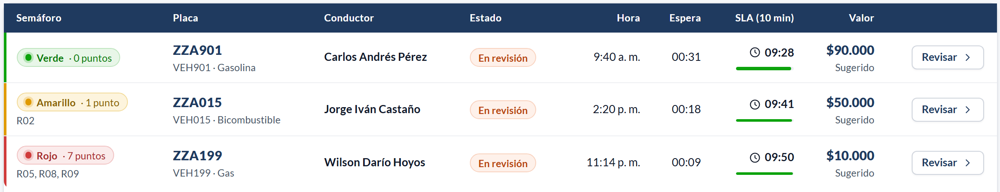
Los tres semáforos en la cola del técnico: verde con 0 puntos, amarillo con 1 punto y rojo con 7 puntos. Junto a los puntos aparecen los códigos de las reglas.
Valor sugerido
Es el valor en pesos que el sistema propone autorizar. Se calcula con lo que el vehículo tiene en el tanque, lo que
necesita para los servicios que le quedan ese día y una reserva de medio tanque. El resultado se redondea al múltiplo
de $10.000 más cercano. El técnico ve el cálculo paso a paso.
Ejemplo (VEH901): tiene ¼ de tanque (3 galones de 12), le quedan 6 servicios (108 km) y debe
conservar medio tanque. Necesita cargar 5,67 galones, que a $16.000 de referencia son $90.667. Redondeado:
$90.000.
La sección 5.6 explica los diez pasos del cálculo, uno por uno.
La capacidad del tanque, los kilómetros por servicio y los precios de referencia son valores
ilustrativos cargados con los datos de ejemplo.
Tope
Es el valor máximo que se puede autorizar para un vehículo. Sale de la capacidad de su tanque por el precio de
referencia, redondeado hacia abajo al múltiplo de $10.000. El valor sugerido nunca lo supera, y el técnico tampoco puede
ajustar por encima de él.
Ejemplo: el tope del VEH901 es $190.000 (12 galones a $16.000). El del VEH199 es $40.000.
Libro único de tanqueos
Es la lista de todas las cargas de un vehículo, sin importar con qué proveedor las hizo, junto con sus servicios en
EOM. Sirve para ver el consumo completo en un solo lugar.
Ejemplo: el VEH160 carga con dos proveedores. Mirando solo uno, parecería que rinde 783 km por
galón, algo imposible. Con el libro único, que suma las cargas de gas del otro proveedor, el dato real es 73,5.
Habilitar es activar el medio de pago del vehículo (el chip) por el valor aprobado. Lo hace
el técnico en el portal del proveedor, copiando los valores que la consola le deja listos.
La referencia es el código que identifica esa habilitación. El sistema sugiere una (TER-,
la fecha y un consecutivo) y el técnico la confirma o la cambia.
Mientras falte la referencia, la solicitud está Por habilitar. Al confirmarla pasa a
Autorizada y el conductor recibe el mensaje.
El prototipo no se conecta con el portal del proveedor. La habilitación se representa
copiando los valores y confirmando la referencia.
Vigencia
Es el tiempo durante el cual sirve la autorización: 2 horas. El mensaje al conductor dice hasta qué
hora puede cargar.
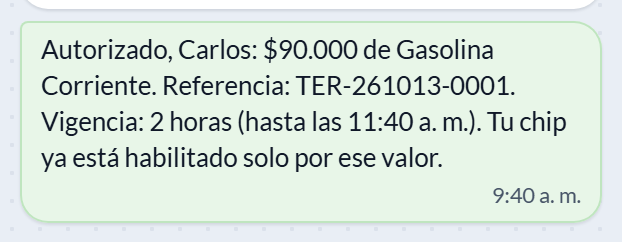
El mensaje que recibe el conductor: valor, producto, referencia y vigencia.
El prototipo guarda la hora de vencimiento, pero una autorización no pasa sola a «vencida»
cuando se cumplen las 2 horas.
Bitácora
Es el historial de la solicitud. Guarda quién hizo cada cosa, qué hizo, cuándo y cómo estaba el dato antes y
después. Solo se le agregan registros: nada se edita ni se borra.
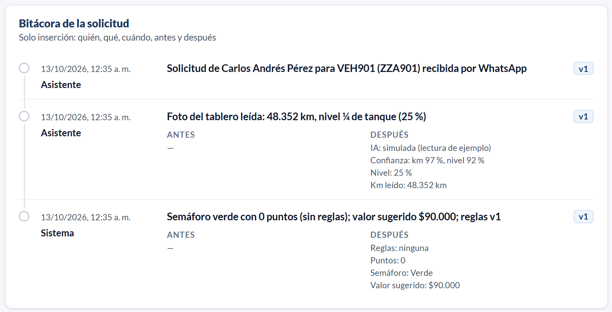
La bitácora del VEH901 antes de decidir: la solicitud recibida, la foto leída y el semáforo calculado.
si alguien pregunta después por qué se autorizó un valor, la respuesta está escrita con nombre, fecha y
versión de las reglas.
Alerta
Es un tanqueo o un vehículo que el sistema marca para que el coordinador lo revise. Cada alerta tiene sus reglas, sus
puntos, una prioridad y un plazo.
Prioridad
Puntos
Plazo para revisarla
Alta
4 o más
48 horas
Media
2 o 3
En la semana
Baja
1
En la semana
Al revisarla, el coordinador registra uno de tres resultados: Confirmado (la desviación es
real), Justificado (hay una causa válida) o Error de dato (el dato
venía mal).
ninguna alerta detiene el suministro. Se revisa después, y su resultado sirve para saber qué tan
acertada es cada regla.
Conciliación
Es comparar lo que el sistema autorizó con lo que el proveedor realmente registró y cobró. Se hace cargando el
archivo del proveedor. Lo que coincide queda como Cuadra; lo que no coincide (otro producto,
otro valor o una venta sin autorización) se convierte en alerta.
Ejemplo: el VEH023 cargó Gasolina Extra a $21.250 por galón cuando su ficha pide Corriente, que
estaba a $16.330 en la misma estación. El sistema calcula $27.783 pagados de más y crea la alerta
C01.
Piloto
Es la prueba controlada del sistema durante 6 semanas en Córdoba, zona CARIBE COR. El tablero mide
nueve indicadores frente a su meta. Al cierre se toma una de tres decisiones: Ampliar,
Ajustar o Detener. El capítulo 10 explica cada indicador.
Qué es simulado en este prototipo
Este sistema es un prototipo para demostración. Conviene saber qué partes son reales y cuáles están representadas.
Parte
Cómo está en el prototipo
La mensajería del conductor
Simulada. La pantalla «Simulador del conductor» hace las veces del chat. No se envían mensajes a ningún teléfono.
Las fotos del tablero
De ejemplo. Cada caso trae una imagen ya preparada. No se pueden subir fotos propias.
El ingreso y los roles
Simulados. No hay usuario ni contraseña: el rol se elige en un selector de la cabecera. Los permisos de cada rol sí se respetan.
Los datos
Ilustrativos. Vehículos, placas, conductores, estaciones, tanqueos y servicios son inventados. Los cuatro usuarios (Laura Mendoza, Carlos Rivas, Marta Salcedo y Diego Paternina) también.
La IA
Por defecto es «Simulada»: funciona sin internet y siempre da el mismo resultado. Se puede cambiar a un proveedor externo desde el simulador.
El portal del proveedor
No existe en el prototipo. El técnico copia los valores y confirma una referencia.
El archivo del proveedor
De ejemplo. La conciliación carga un archivo preparado de Terpel con un botón.
Las reglas, el semáforo y el valor sugerido
Reales. Se calculan en el momento con los datos de cada solicitud.
La decisión, la habilitación y la bitácora
Reales. Quedan guardadas hasta que se reinicia la demo.
El tablero
Mixto. Cada tarjeta dice si su valor es «Calculado con la demo» o «Valor ilustrativo».
Todas las pantallas llevan el pie «Prototipo con datos ilustrativos | Uso exclusivo del proceso
de selección». Nada de lo que se haga aquí afecta vehículos, pagos ni personas reales.
Puntos clave del capítulo
El conductor pide por chat, el asistente arma la solicitud, el sistema propone y el técnico decide.
El semáforo sale de los puntos: verde con 0, amarillo de 1 a 3 (o con una inconsistencia) y rojo con 4 o más.
Ninguna regla ni alerta bloquea el suministro: todo lo sensible se revisa después y queda en la bitácora.
El valor sugerido se calcula paso a paso y nunca pasa del tope del vehículo.
Aprobar tiene dos tiempos: decidir y habilitar. El conductor recibe la autorización al confirmar la referencia, con vigencia de 2 horas.
El chat, los roles, el portal del proveedor y los datos son simulados o ilustrativos; las reglas, las decisiones y la bitácora funcionan de verdad.
Primeros pasos
En este capítulo: cómo entrar al sistema, cómo está organizada la pantalla, cómo cambiar de rol y qué
puede hacer cada uno, cuándo conviene reiniciar la demo y qué opción de IA dejar activa.
Cómo entrar
Abra el navegador del equipo donde está instalado el sistema.
En la barra de direcciones escriba http://localhost:8080 y pulse Enter.
Se abre la pantalla Simulador del conductor, con el rol
Técnico de Control y Monitoreo en la cabecera. No se pide usuario ni contraseña.
Cada pantalla tiene además su propia dirección, por si quiere llegar directo:
Pantalla
Dirección
Simulador del conductor
http://localhost:8080/simulador
Consola del técnico
http://localhost:8080/consola
Alertas del coordinador
http://localhost:8080/alertas
Tablero del piloto
http://localhost:8080/tablero
La dirección solo funciona en el equipo donde el sistema está encendido. La instalación y el
encendido no hacen parte de este manual: los explica el archivo README que acompaña al proyecto.
El sistema se ve mejor con la ventana del navegador maximizada. En pantallas pequeñas, algunas
tarjetas necesitan desplazarse hacia abajo para verse completas.
Las partes de la pantalla
Todas las pantallas comparten el mismo marco: una barra lateral a la izquierda, una cabecera arriba, el contenido al
centro y un pie abajo.
El marco común: barra lateral azul oscuro, cabecera con el rol y «Reiniciar demo», contenido de la pantalla y pie.
La barra lateral: el recorrido de la demo
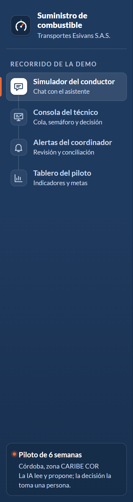
La barra lateral.
Es el menú. Está siempre visible y sus entradas van en el orden en que ocurre el proceso.
Suministro de combustible
El nombre del sistema, con «Transportes Esivans S.A.S.» debajo. Al hacer clic vuelve al simulador.
Recorrido de la demo
El título del menú.
Simulador del conductor
«Chat con el asistente». Aquí nace la solicitud.
Consola del técnico
«Cola, semáforo y decisión». Aquí se decide.
Alertas del coordinador
«Revisión y conciliación». Aquí se revisa después.
Tablero del piloto
«Indicadores y metas». Aquí se mide.
Piloto de 6 semanas
Una tarjeta informativa: «Córdoba, zona CARIBE COR» y el principio del sistema: «La IA lee y propone; la decisión la toma una persona.» No es un botón.
La pantalla en la que usted está aparece resaltada.
La cabecera
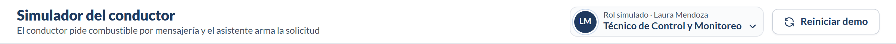
La cabecera: a la izquierda, el título de la pantalla; a la derecha, el rol y «Reiniciar demo».
Título y subtítulo
Dicen en qué pantalla está y para qué sirve. Por ejemplo: «Simulador del conductor · El conductor pide combustible por mensajería y el asistente arma la solicitud».
Rol simulado
Un círculo con las iniciales, el nombre de la persona y, debajo, una lista para elegir el rol (véase la sección 2.3).
Reiniciar demo
Devuelve el sistema a su estado inicial (véase la sección 2.4).
El pie
El pie recuerda en todas las pantallas que los datos son ilustrativos.
Los avisos
Después de algunas acciones aparece por unos segundos un aviso pequeño que confirma lo que pasó. Por ejemplo, al
reiniciar la demo: «Demo reiniciada · Se volvió a cargar la semilla. Las pantallas ya muestran los datos iniciales.»
Las pantallas se actualizan solas: no hace falta recargar la página para ver una solicitud nueva o un mensaje nuevo.
Los roles
Un rol representa a una persona de la operación. El sistema trae cuatro, cada uno con un nombre de ejemplo.
Rol
Persona de ejemplo
Así se ve en la cabecera
Técnico de Control y Monitoreo
Laura Mendoza (LM)
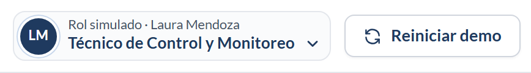
Coordinador
Carlos Rivas (CR)
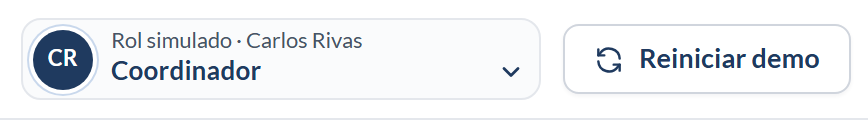
Finanzas
Marta Salcedo (MS)
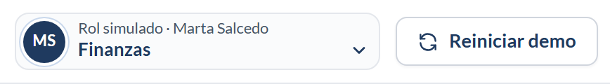
Soporte
Diego Paternina (DP)
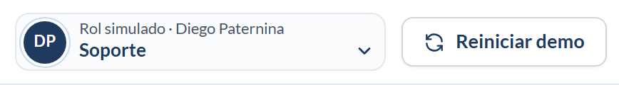
El ingreso es simulado: cualquiera puede elegir cualquier rol y los nombres son inventados. Al
pasar el cursor sobre el selector, el propio sistema lo aclara: «Ingreso simulado: en producción es con SSO (OIDC) y
MFA», es decir, con el usuario de la empresa y una segunda verificación.
Cambiar de rol
Quién lo hace: Todos los roles
En la cabecera, haga clic sobre el nombre del rol actual (debajo de Rol simulado).
En la lista que se despliega, elija el rol: Técnico de Control y Monitoreo,
Coordinador, Finanzas o Soporte.
Cambian las iniciales del círculo y el nombre de la persona. Usted sigue en la misma pantalla, y los botones que
ese rol no puede usar quedan apagados, con un aviso que explica quién sí puede.
cada acción queda en la bitácora con el nombre de quien la hizo. Si aprueba con el rol de técnico, la
bitácora dirá «Laura Mendoza»; si registra una alerta como coordinador, dirá «Carlos Rivas».
El rol elegido se conserva al pasar de una pantalla a otra y al recargar la página. «Reiniciar
demo» tampoco lo cambia.
Qué cambia al cambiar de rol
Todos los roles ven las cuatro pantallas. Lo que cambia son las acciones permitidas.
Pantalla y acción
Técnico
Coordinador
Finanzas
Soporte
En todas las pantallas
Ver y consultar la información
Sí
Sí
Sí
Sí
Usar Reiniciar demo
Sí
Sí
Sí
Sí
Simulador del conductor
Elegir el caso, enviar mensajes y fotos, cambiar la hora simulada y la IA
Sí
Sí
Sí
Sí
Consola del técnico
Ver la cola y el detalle de una solicitud
Sí
Sí
Sí
Sí
Aprobar, ajustar o rechazar una solicitud
Sí
Sí
No
No
Confirmar la habilitación con la referencia
Sí
Sí
No
No
Alertas del coordinador
Ver las alertas, la conciliación y el catálogo de reglas
Sí
Sí
Sí
Sí
Registrar o corregir el resultado de una alerta
No
Sí
No
No
Cargar el archivo del proveedor (pestaña Conciliación)
No
Sí
Sí
No
Cambiar el umbral de una regla (pestaña Reglas y umbrales)
No
Sí
No
No
Tablero del piloto
Consultar los indicadores (la pantalla no tiene acciones)
Sí
Sí
Sí
Sí
Cuando un rol no puede hacer algo, el sistema no esconde la pantalla: apaga el botón y muestra un aviso. Estos son
los avisos que verá:
Dónde
Aviso
Detalle de una solicitud, con Finanzas o Soporte
«Solo lectura: con el rol Finanzas puedes consultar la solicitud, pero la decisión y la habilitación son del técnico de Control y Monitoreo o del coordinador.»
Resultado de una alerta, con un rol distinto de Coordinador
«Con el rol Finanzas solo puedes consultar. El resultado lo registra el Coordinador.»
Pestaña «Conciliación», con Técnico o Soporte
«Con el rol Soporte solo puedes consultar. El archivo lo carga Coordinador o Finanzas.»
Pestaña «Reglas y umbrales», con un rol distinto de Coordinador
«Solo el Coordinador puede cambiar un umbral. Con el rol Soporte el catálogo es de consulta.»
En cada aviso, el nombre del rol cambia según el que usted tenga elegido.
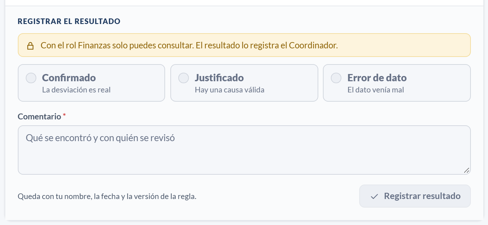
Con el rol Finanzas, el formulario para registrar el resultado de una alerta queda apagado y el aviso explica por qué.
Para recorrer el proceso completo necesita dos roles: Técnico de Control y
Monitoreo para decidir en la consola y Coordinador para revisar alertas, conciliar y
cambiar umbrales.
Reiniciar la demo
Reiniciar demo devuelve el sistema a su estado inicial: borra todo lo hecho durante la
sesión y vuelve a cargar los datos de ejemplo.
Cuándo conviene
Antes de empezar una demostración o una práctica, para partir de una cola vacía.
Para repetir un caso. Cada vehículo solo puede tener una solicitud abierta a la vez y, una vez
autorizado, el asistente no acepta otra mientras la autorización esté vigente.
Cuando los datos quedaron revueltos y quiere que las cifras vuelvan a coincidir con las de este manual.
Cómo se hace
Quién lo hace: Todos los roles
En la cabecera, haga clic en Reiniciar demo.
Lea la pregunta ¿Reiniciar la demo? y haga clic en el botón Reiniciar demo
de esa ventana. Si se arrepiente, haga clic en Cancelar.
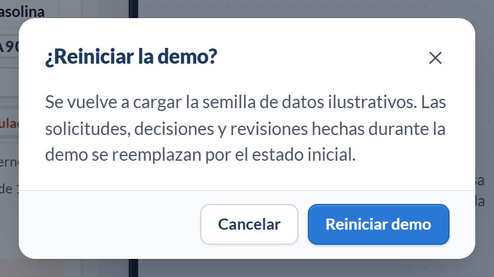
La ventana de confirmación antes de reiniciar.
La ventana se cierra y aparece el aviso «Demo reiniciada». La pantalla en la que usted está se recarga sola con
los datos iniciales.
Qué borra y qué deja
Se borra
Queda como al principio
Las conversaciones del simulador.
Las solicitudes, las decisiones, las habilitaciones y sus bitácoras.
Los resultados de alertas que usted registró.
Los archivos del proveedor cargados en la conciliación y las alertas que generaron.
Los cambios de umbral: el catálogo de reglas vuelve a la versión 1.
La cola del técnico, vacía.
Las alertas de ejemplo: 4 tanqueos y 7 vehículos por revisar, más 8 alertas que ya vienen revisadas.
El tablero, con «0 solicitudes · 0 decisiones · 8 alertas revisadas».
La IA, en la opción con la que está configurada la instalación.
El rol y el caso que usted tenía elegidos (no cambian).
Reiniciar no se puede deshacer y afecta a todas las personas que estén usando el sistema en ese
momento. Si alguien más está haciendo una prueba, avísele antes.
Los datos de ejemplo se acomodan a la fecha del día: los servicios «de hoy» y los tanqueos de los
últimos 90 días siempre son recientes. Por eso las fechas de su pantalla no coinciden con las de las imágenes.
Las tres opciones de IA
La IA hace dos tareas, y solo esas dos: entender lo que escribe el conductor y leer la foto
del tablero (kilometraje y nivel de combustible). No calcula el valor ni decide nada.
En el Simulador del conductor, la fila IA de la tarjeta
Caso de la demo permite elegir quién hace esas tareas.
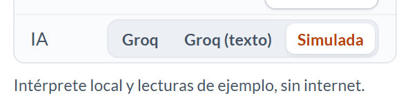
Las tres opciones de la fila «IA». La activa aparece resaltada; debajo, una línea dice qué hace.
Opción
Quién entiende los mensajes
Quién lee la foto
Cuándo conviene
Simulada
Un intérprete propio del sistema, sin internet.
Una lectura de ejemplo ya preparada para cada foto.
Para seguir este manual. Siempre da el mismo resultado y no depende de nada externo.
Groq (texto)
Un servicio externo de IA (Groq). Si no responde, lo reemplaza el intérprete propio.
La misma lectura de ejemplo. La foto no se envía al servicio externo.
Para mostrar una IA real entendiendo frases libres, con las mismas cifras de los casos. Necesita internet.
Groq
El servicio externo, con el mismo reemplazo.
El servicio externo. Si no logra leerla, el asistente le pide al conductor que escriba el kilometraje.
Solo para mostrar la lectura real de una foto. Las cifras pueden salir distintas de las de este manual.
Cambiar la opción de IA
En el menú, haga clic en Simulador del conductor.
En la tarjeta Caso de la demo, fila IA, haga clic en la opción que quiere.
La opción queda resaltada y cambia la línea de debajo. Con Simulada dice: «Intérprete local
y lecturas de ejemplo, sin internet.»
El cambio vale para todos los casos y para los mensajes que se envíen desde ese momento.
Reiniciar demo devuelve la IA a la opción con la que está configurada la instalación; en la
instalación con la que se preparó este manual, esa opción es Simulada.
Todo este manual se preparó con Simulada. Déjela así para que sus
resultados coincidan con los que aquí se describen. Las opciones con Groq envían información a un servicio externo y
tienen un cupo de uso limitado.
Si la instalación no tiene configurado el acceso al servicio externo, las opciones
Groq y Groq (texto) aparecen apagadas y solo funciona
Simulada. Las opciones con Groq no se usaron al preparar este manual: lo que aquí se dice de
ellas viene de la documentación del proyecto.
Los rótulos «IA:» bajo los mensajes
En el chat del simulador, bajo los mensajes del conductor aparece un rótulo pequeño que dice quién interpretó ese
mensaje o leyó esa foto. Sale bajo el último mensaje del conductor, bajo cada foto y bajo cualquier mensaje que no haya
respondido la opción elegida.
Rótulo
Qué significa
«IA: simulada (intérprete local)»
El mensaje lo entendió el intérprete propio del sistema.
«IA: simulada (lectura de ejemplo)»
La foto se resolvió con la lectura de ejemplo.
«IA: simulada (lectura de ejemplo; la foto no se envió a Groq)»
Lo mismo, con la opción «Groq (texto)» activa.
«IA: Groq · » y el nombre del modelo
Respondió el servicio externo.
«IA: intérprete local (respaldo: Groq, …)»
El servicio externo no respondió y el mensaje lo entendió el intérprete propio. Entre paréntesis va la causa; por ejemplo, «sin conexión» o «límite por minuto».
«IA: Groq no leyó la foto (…): el conductor escribe el dato»
El servicio externo no pudo leer la foto. El asistente le pide el kilometraje al conductor.
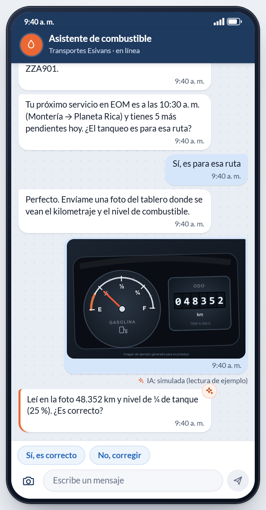
Bajo la foto, el rótulo «IA: simulada (lectura de ejemplo)». El mensaje con la lectura lleva una marca en forma de destello.
nunca se presenta como leído por una IA real algo que respondió el sistema por su cuenta. El mismo rótulo
queda en la consola del técnico y en la bitácora.
Puntos clave del capítulo
Se entra por http://localhost:8080, sin usuario ni contraseña.
El menú de la izquierda sigue el orden del proceso: simulador, consola, alertas y tablero.
El rol se cambia en la cabecera. Todos ven todo; lo que cambia es quién puede decidir, revisar, cargar el archivo o cambiar umbrales.
Deciden el Técnico y el Coordinador. Solo el Coordinador registra resultados de alertas y cambia umbrales. El archivo lo cargan el Coordinador o Finanzas. Soporte solo consulta.
Reiniciar demo borra todo lo hecho y no se puede deshacer.
Deje la IA en Simulada para obtener las mismas cifras de este manual.
Simulador del conductor
En este capítulo: para qué sirve el simulador, sus tres zonas, las formas de conversar con el asistente
y, paso a paso, los cinco casos de ejemplo. Al final, cómo consultar el estado, qué pasa si la solicitud no se completa
en 10 minutos y los errores más frecuentes.
Para qué sirve
El simulador hace las veces del chat del conductor. En la operación real el conductor escribiría desde su teléfono;
aquí usted escribe por él y ve, al mismo tiempo, cómo avanza la solicitud.
Quién lo hace: Todos los roles
es la única puerta de entrada de solicitudes. Sin enviar una desde aquí, la cola del técnico queda vacía.
Para llegar, haga clic en Simulador del conductor en el menú de la izquierda. Es también la
pantalla que se abre al entrar al sistema.
El simulador no envía ni recibe mensajes de ningún teléfono. Los cinco casos, sus conductores y sus
fotos vienen preparados; no se pueden crear casos nuevos ni subir fotos propias.
Las tres zonas de la pantalla
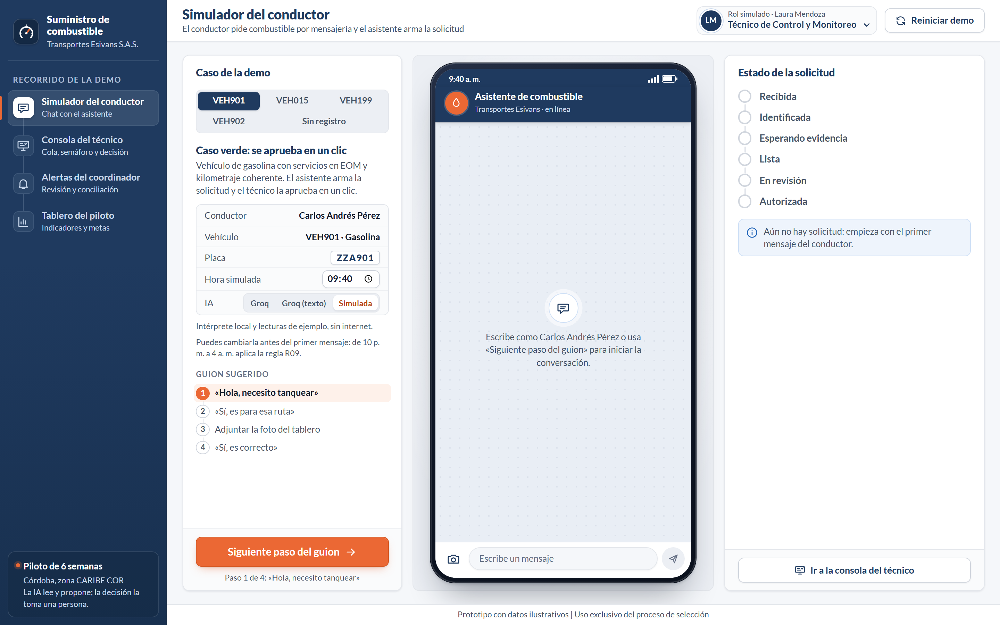
El simulador antes de empezar. Izquierda: «Caso de la demo». Centro: el teléfono con el chat. Derecha: «Estado de la solicitud».
Zona
Qué muestra
Para qué la usa
Caso de la demo
El caso elegido, sus datos, la hora simulada, la IA y el guion sugerido.
Elegir el caso y avanzar el guion con un botón.
El teléfono
La conversación entre el conductor y el asistente.
Escribir, pulsar respuestas rápidas y enviar la foto.
Estado de la solicitud
El número, el semáforo, el valor y la línea de estados.
Ver en qué va la solicitud y abrirla en la consola.
Zona 1: «Caso de la demo»
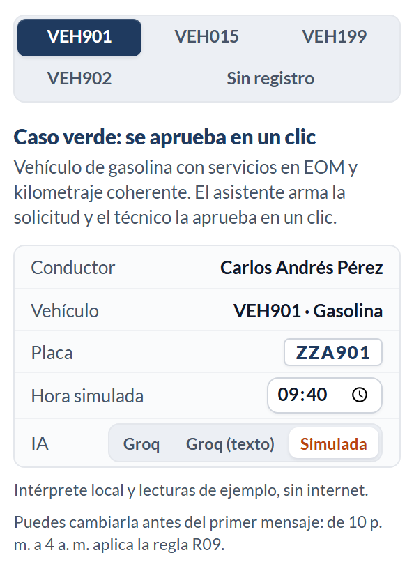
La ficha del caso VEH901.
Selector de casos
Cinco botones: VEH901, VEH015, VEH199, VEH902 y Sin registro. El elegido queda en azul oscuro.
Título y descripción
Qué demuestra el caso.
Conductor
La persona por la que usted va a escribir.
Vehículo
El código y el tipo de combustible.
Placa
La placa del vehículo.
Hora simulada
La hora a la que «ocurre» el caso, en formato de 24 horas.
IA
Quién entiende los mensajes y lee la foto. Déjela en Simulada.
Debajo van dos líneas de ayuda: qué hace la IA activa y la nota de la hora.
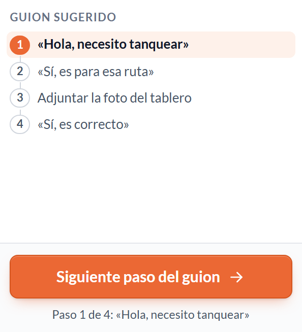
El guion del caso VEH901.
El Guion sugerido es la lista de mensajes que el conductor enviaría en ese caso, en orden.
El paso que sigue aparece resaltado en naranja.
Los pasos ya enviados cambian su número por un chulo.
El botón Siguiente paso del guion envía el paso resaltado.
Debajo del botón, una línea dice cuál es: «Paso 1 de 4: «Hola, necesito tanquear»».
Al terminar, el botón dice Guion completo y la línea, «Continúa en la consola del técnico.»
Zona 2: el teléfono
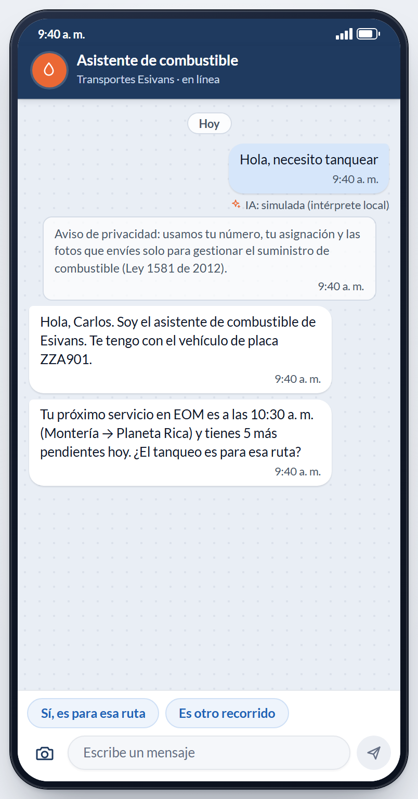
El chat después del primer mensaje.
Hora
Arriba a la izquierda: la hora simulada del caso.
Encabezado
«Asistente de combustible · Transportes Esivans · en línea». Mientras el asistente responde dice «escribiendo…».
Mensajes
Los del conductor van a la derecha, en azul claro. Los del asistente, a la izquierda, en blanco.
Respuestas rápidas
Botones con las respuestas más probables. Aparecen sobre la casilla de texto cuando el asistente hace una pregunta.
Cámara
Envía la foto de ejemplo del tablero de ese caso.
Escribe un mensaje
La casilla para escribir a mano.
Enviar
El botón redondo de la derecha. Se enciende cuando hay texto.
El primer mensaje del asistente siempre es el aviso de privacidad: «Aviso de privacidad: usamos tu número, tu
asignación y las fotos que envíes solo para gestionar el suministro de combustible (Ley 1581 de 2012).»
Zona 3: «Estado de la solicitud»
Antes del primer mensaje, la tarjeta muestra los seis estados vacíos y la nota «Aún no hay solicitud: empieza con el
primer mensaje del conductor.» En el teléfono, una línea invita a empezar: «Escribe como Carlos Andrés Pérez o usa
«Siguiente paso del guion» para iniciar la conversación.» (con el nombre del conductor del caso elegido).
Lo que falta cambia con cada paso:
Texto en «Lo que falta»
Qué espera el asistente
«Confirmar el servicio de EOM o el motivo del recorrido»
Que el conductor diga para qué recorrido es el combustible.
«Foto del tablero (kilometraje y nivel)»
La foto.
«Confirmar el kilometraje y el nivel leídos»
Que el conductor confirme lo que se leyó en la foto.
«Escribir el kilometraje a mano»
El número del odómetro, porque la foto no se pudo leer o el conductor quiso corregirlo.
«Confirmar que no necesita tanquear ahora»
La respuesta del conductor cuando el cálculo dice que no hace falta cargar.
«Decisión del técnico de Control y Monitoreo»
Ya no depende del conductor: la solicitud está en la cola.
«Habilitar el valor en el portal del proveedor y confirmar la referencia»
El técnico ya decidió; falta la habilitación.
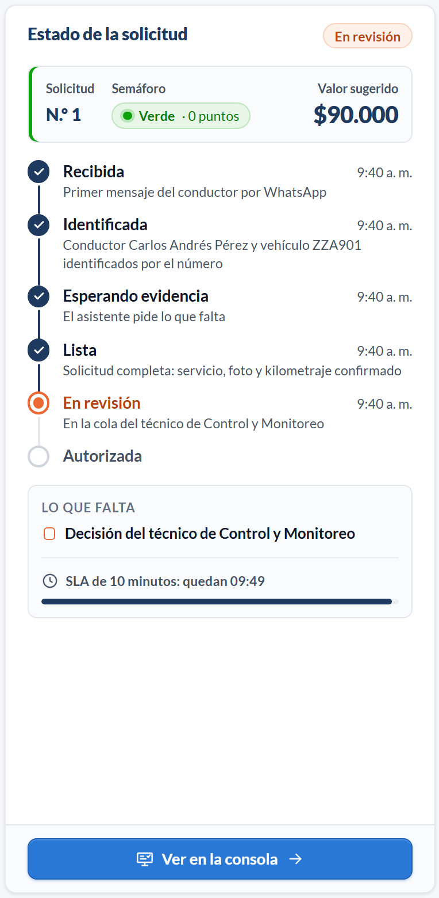
El estado del caso VEH901 al terminar el guion.
Etiqueta de estado
Arriba a la derecha: el estado actual, por ejemplo En revisión.
Solicitud
El número de la solicitud: «N.º 1».
Semáforo
«Sin evaluar» mientras se arma la solicitud; después, el color y los puntos.
Valor sugerido
Una raya mientras no se ha calculado; después, el valor. Cuando se autoriza, el título cambia a «Valor autorizado».
Línea de estados
Recibida, Identificada, Esperando evidencia, Lista, En revisión y Autorizada. Cada estado alcanzado muestra su hora y una nota. El estado actual va en naranja.
Lo que falta
Lo que se necesita para que la solicitud avance.
SLA de 10 minutos
La cuenta regresiva del plazo de atención, con una barra.
Botón de abajo
Ir a la consola del técnico si aún no hay solicitud; Ver en la consola cuando ya existe, para abrir su detalle.
Cómo conversar con el asistente
Hay cuatro formas de enviar algo. Se pueden combinar, pero conviene escoger una y mantenerla durante el caso.
Forma
Cómo
Cuándo conviene
El guion
Clic en Siguiente paso del guion. Envía el mensaje o la foto que toca.
Para ver el caso tal como está previsto, sin escribir nada.
Respuestas rápidas
Clic en uno de los botones que aparecen sobre la casilla de texto.
Para contestar una pregunta del asistente con una opción distinta a la del guion.
Escribir a mano
Escriba en Escribe un mensaje y pulse Enter o el botón de enviar.
Para probar con sus propias palabras.
La foto
Clic en el botón de la cámara.
Cuando el asistente pide la foto y usted no está usando el guion.
Al escribir a mano, el botón de enviar se enciende. A la izquierda, el botón de la cámara.
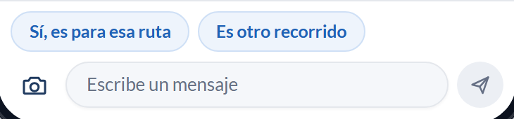
Las respuestas rápidas aparecen sobre la casilla de texto.
El guion no revisa qué se envió: avanza un paso por cada mensaje del conductor, sin importar cuál
fue. Si usted escribe un mensaje propio en medio del guion, el botón puede saltarse un paso. Cuando mezcle, fíjese en
la línea «Paso N de M» antes de pulsar el botón, o siga con las respuestas rápidas.
Mientras el asistente está respondiendo aparecen tres puntos en el chat y los botones se apagan un
momento. El chat se actualiza solo.
Enviar la foto
El botón de la cámara envía la foto de ejemplo del caso. El asistente la lee y devuelve el kilometraje y el nivel de
combustible para que el conductor los confirme. Ese mensaje lleva una marca en forma de destello, y bajo la foto aparece
el rótulo «IA: simulada (lectura de ejemplo)».
A la pregunta «¿Es correcto?» se puede responder de dos maneras:
Sí, es correcto: se acepta la lectura y la solicitud sigue.
No, corregir: el asistente pide «Escríbeme el kilometraje que marca el odómetro, solo el
número.» Usted lo escribe a mano y la bitácora registra que el conductor lo digitó.
el kilometraje es el dato que más errores trae. Por eso lo lee la IA, lo confirma el conductor y el
técnico ve la foto.
El caso Sin registro no tiene foto: con él, el botón de la cámara queda
apagado.
La hora simulada
Cada caso trae su hora: VEH901 a las 09:40, VEH015 a las 14:20, VEH199 a las 23:14, VEH902 a las 11:05 y
Sin registro a las 08:15. Así se puede mostrar un caso de las 11:14 p. m. a cualquier hora del día.
Antes de enviar el primer mensaje, haga clic en la casilla Hora simulada.
Escriba la hora en formato de 24 horas, por ejemplo 22:30.
El reloj del teléfono cambia a esa hora. La nota bajo la ficha dice: «Puedes cambiarla antes del primer mensaje: de
10 p. m. a 4 a. m. aplica la regla R09.»
La hora cuenta para la regla R09 «Tanqueo nocturno sin servicio» y para saber cuántos
servicios le quedan al vehículo ese día, de modo que puede cambiar el semáforo y el valor sugerido.
Con el primer mensaje, la hora queda fija y la casilla se bloquea. La nota cambia a «La hora quedó fija con el
primer mensaje…».
Los mensajes siguientes avanzan con el tiempo real: si usted tarda diez minutos, el chat marcará diez minutos más.
El chat y la consola muestran la hora del caso. La bitácora guarda la hora real.
Si cambia la hora de un caso, sus cifras ya no coincidirán con las de este manual. Para volver a
la hora original, use Reiniciar demo.
Caso VEH901: verde, se aprueba en un clic
Conductor
Carlos Andrés Pérez
Vehículo
VEH901 · Gasolina · placa ZZA901
Hora simulada
09:40 (9:40 a. m.)
Resultado esperado
Verde 0 puntos · valor sugerido $90.000
Es el caso normal: un vehículo con servicios programados y un kilometraje coherente.
En Caso de la demo, haga clic en VEH901 (viene elegido al entrar).
Haga clic en Siguiente paso del guion. Se envía «Hola, necesito tanquear».
El asistente responde con el aviso de privacidad, el saludo «Hola, Carlos. Soy el asistente de combustible de
Esivans. Te tengo con el vehículo de placa ZZA901.» y la pregunta «Tu próximo servicio en EOM es a las 10:30 a. m.
(Montería → Planeta Rica) y tienes 5 más pendientes hoy. ¿El tanqueo es para esa ruta?»
Haga clic otra vez en Siguiente paso del guion. Se envía «Sí, es para esa ruta».
El asistente pide: «Perfecto. Envíame una foto del tablero donde se vean el kilometraje y el nivel de combustible.»
Haga clic en Siguiente paso del guion. Se envía la foto del tablero.
El asistente responde: «Leí en la foto 48.352 km y nivel de ¼ de tanque (25 %). ¿Es correcto?»
Haga clic en Siguiente paso del guion. Se envía «Sí, es correcto».
El asistente cierra: «Gracias, Carlos. Tu solicitud está en revisión con el técnico de Control y Monitoreo. Te
aviso por aquí apenas haya respuesta.»
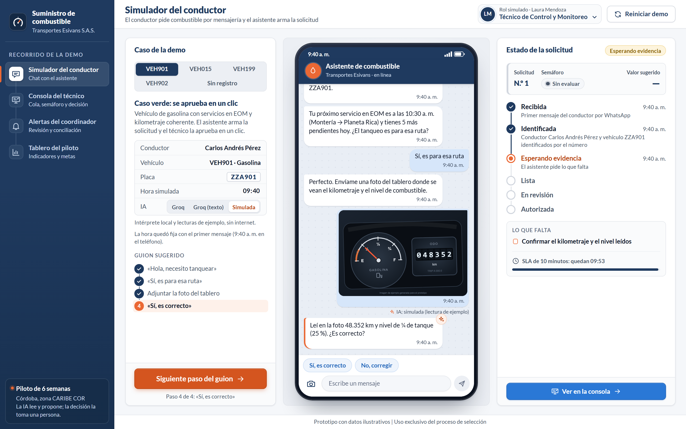
Después del cuarto paso del procedimiento: la foto enviada, la lectura y, a la derecha, «Lo que falta: Confirmar el kilometraje y el nivel leídos».
Mientras avanza, Estado de la solicitud cambia así:
Después de…
Estado
Lo que falta
«Hola, necesito tanquear»
Esperando evidencia · Semáforo «Sin evaluar»
Confirmar el servicio de EOM o el motivo del recorrido
«Sí, es para esa ruta»
Esperando evidencia
Foto del tablero (kilometraje y nivel)
La foto
Esperando evidencia
Confirmar el kilometraje y el nivel leídos
«Sí, es correcto»
En revisión · Verde 0 puntos · $90.000
Decisión del técnico de Control y Monitoreo
El botón dice Guion completo. A la derecha: estado En revisión,
«Verde · 0 puntos», «Valor sugerido $90.000» y la cuenta «SLA de 10 minutos: quedan…». La solicitud ya está en la cola
de la consola.
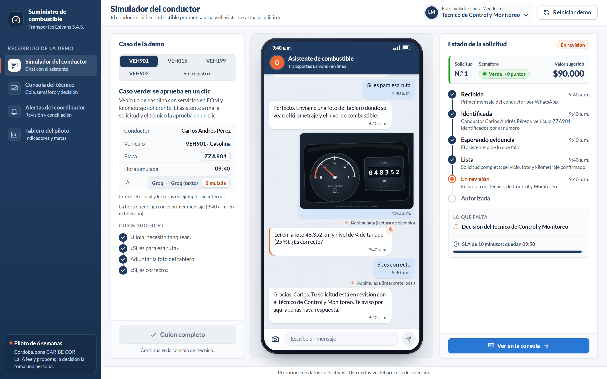
El caso VEH901 al terminar el guion: en revisión, en verde y con $90.000 de valor sugerido.
Cómo termina
Haga clic en Ver en la consola. Se abre el detalle de la solicitud.
Con el rol Técnico de Control y Monitoreo, apruebe y confirme la habilitación, como
explican las secciones 6.2 y 6.6.
Vuelva a Simulador del conductor. El caso VEH901 sigue elegido.
En el chat aparece, en verde, el mensaje «Autorizado, Carlos: $90.000 de Gasolina Corriente. Referencia: … Vigencia:
2 horas (hasta las 11:40 a. m.). Tu chip ya está habilitado solo por ese valor.» A la derecha, el estado es
Autorizada, el título cambia a «Valor autorizado» y un recuadro verde repite el valor, la
referencia y la vigencia.
Entre la aprobación y la confirmación de la referencia, el simulador muestra la etiqueta
Por habilitar y, bajo «En revisión», la nota «Decidida: falta habilitar en el portal del
proveedor». El conductor todavía no ha recibido nada.
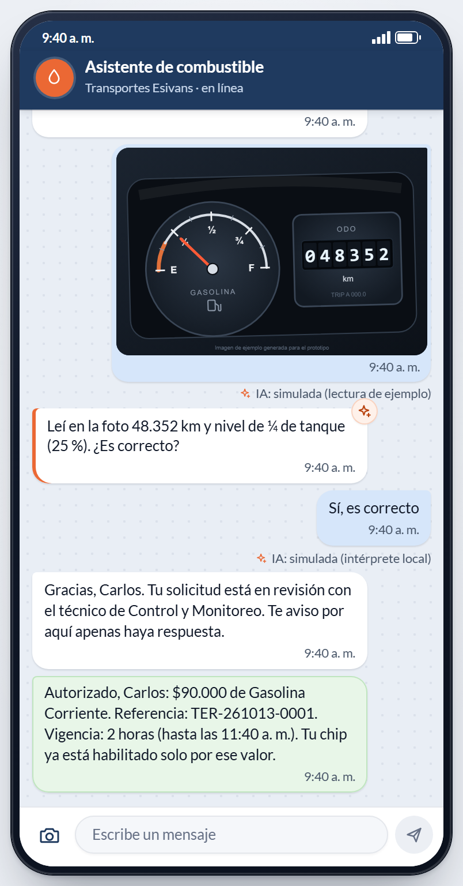
El mensaje de autorización.
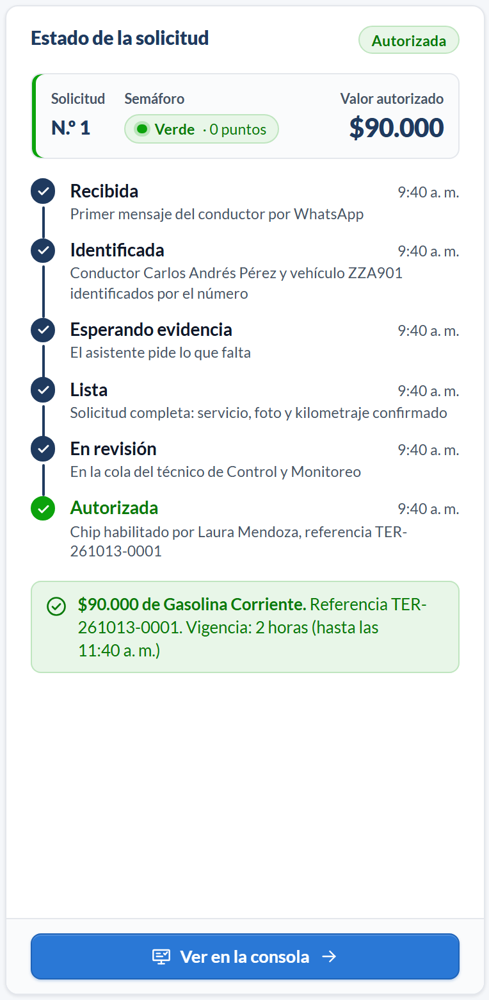
El estado «Autorizada».
Caso VEH015: error de digitación en el kilometraje
Conductor
Jorge Iván Castaño
Vehículo
VEH015 · Bicombustible · placa ZZA015
Hora simulada
14:20 (2:20 p. m.)
Resultado esperado
Amarillo 1 punto (R02) · valor sugerido $50.000
La foto se lee con un dígito equivocado. El asistente lo nota al compararla con el último registro del vehículo y
propone el número corregido.
Haga clic en VEH015.
Clic en Siguiente paso del guion. Se envía «Buenas, necesito combustible».
Este vehículo no tiene servicios programados. Por eso el asistente pregunta: «No veo servicios tuyos pendientes en
EOM. ¿Para qué recorrido necesitas el combustible? Tu respuesta le llega al técnico.» Ofrece tres respuestas
rápidas: Traslado no programado, Apoyo a otra zona y
No tengo servicio asignado.
Clic en Siguiente paso del guion. Se envía «Traslado no programado» y el asistente pide la foto.
Clic en Siguiente paso del guion. Se envía la foto.
El asistente responde: «En la foto leí 24.086 km y nivel de ¼ de tanque (25 %). Tu último registro es de 33.948
km, así que parece un error de un dígito (el 3 quedó como 2). ¿El kilometraje correcto es 34.086 km?»
Haga clic en la respuesta rápida Sí, es 34.086 (o en Siguiente paso del
guion, que envía lo mismo).
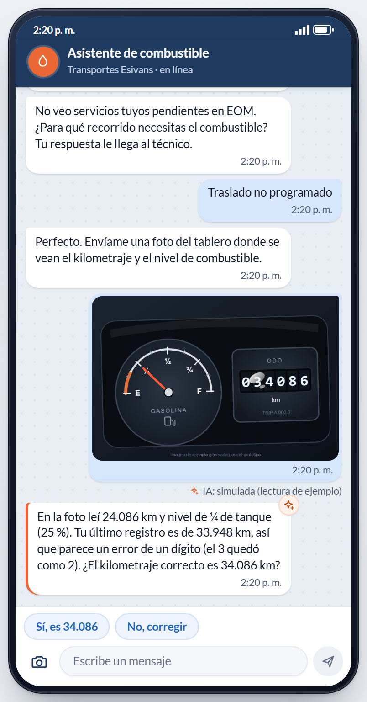
La propuesta de corrección.
El asistente responde «Gracias, Jorge. Tu solicitud está en revisión con el técnico de Control y Monitoreo. Te
aviso por aquí apenas haya respuesta.» El estado pasa a En revisión, con semáforo
amarillo de 1 punto y valor sugerido de $50.000.
un kilometraje de 24.086 después de uno de 33.948 es imposible. En vez de rechazar el dato, el sistema
propone la corrección más probable y deja que el conductor la confirme.
Cómo termina: en la consola, el técnico ya no tiene «Aprobar en un clic». El botón dice
Aprobar con motivo y debe escribir por qué aprueba (véase la sección 6.3).
Para ver el caso tal como está previsto, acepte la propuesta con Sí, es
34.086. Si pulsa No, corregir y escribe otro número, el resultado puede ser
distinto.
Caso VEH199: solicitud nocturna en rojo
Conductor
Wilson Darío Hoyos
Vehículo
VEH199 · Gas · placa ZZA199
Hora simulada
23:14 (11:14 p. m.)
Resultado esperado
Rojo 7 puntos (R05, R08, R09) · valor sugerido $10.000
A las 11:14 p. m., un vehículo de gas pide 6,7 m³ con solo 22 km recorridos desde su carga anterior y sin servicios
programados.
Haga clic en VEH199. Compruebe que Hora simulada dice 23:14.
Clic en Siguiente paso del guion. Se envía «Necesito tanquear 6,7 m3 de gas».
El asistente saluda a Wilson y pregunta: «No veo servicios tuyos pendientes en EOM. ¿Para qué recorrido necesitas
el combustible? Tu respuesta le llega al técnico.»
Clic en Siguiente paso del guion. Se envía «No tengo servicio asignado» y el asistente pide la foto.
Clic en Siguiente paso del guion. Se envía la foto. El asistente responde: «Leí en la foto
195.406 km y nivel de ¼ de tanque (25 %). ¿Es correcto?»
Clic en Siguiente paso del guion. Se envía «Sí, es correcto».
El asistente responde «Gracias, Wilson. Tu solicitud está en revisión…». A la derecha: En
revisión, «Rojo · 7 puntos» y «Valor sugerido $10.000».
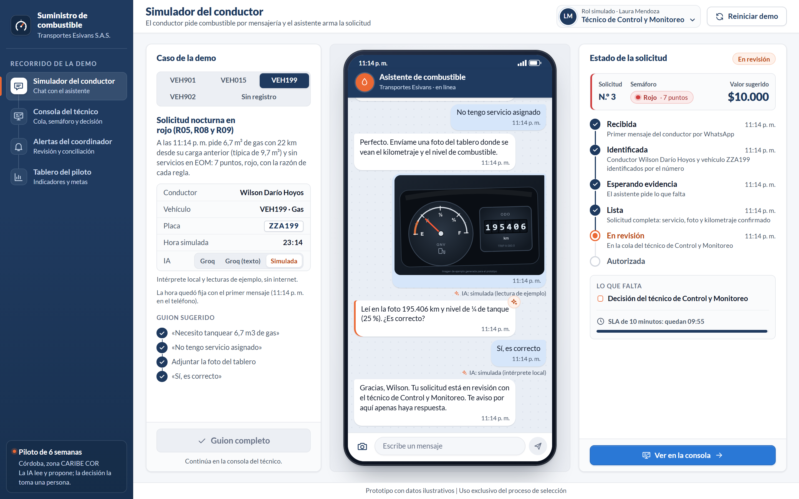
El caso VEH199 al terminar el guion. El conductor recibe el mismo mensaje amable de siempre: el semáforo solo lo ve el personal.
Los 7 puntos salen de tres reglas:
Regla
Qué detecta
Puntos
R05 Recarga sin recorrido
Menos de 30 km desde la carga anterior y una carga de la mitad o más de la típica.
3
R08 Sin servicios en EOM
Sin servicios con desplazamiento 24 horas antes ni después.
2
R09 Tanqueo nocturno sin servicio
Entre las 10 p. m. y las 4 a. m., sin servicio 3 horas antes ni después.
2
La cantidad debe ir en el primer mensaje y con su unidad: «6,7 m3». La regla
R05 compara lo que el conductor pide con su carga típica. Si usted escribe a mano solo
«Necesito tanquear», la regla se evalúa con otra cantidad y el caso puede no sumar los 7 puntos.
Cómo termina
En la consola, el técnico ve las tres razones y decide (véase la sección 6.10). Hay dos finales posibles:
Autoriza (aprueba con motivo o ajusta el valor). El conductor recibe su autorización igual que
en el caso verde. Además, el coordinador recibe una alerta de prioridad alta para revisar esa autorización después.
Rechaza, escribiendo el motivo. El conductor recibe un mensaje en rojo con ese motivo.
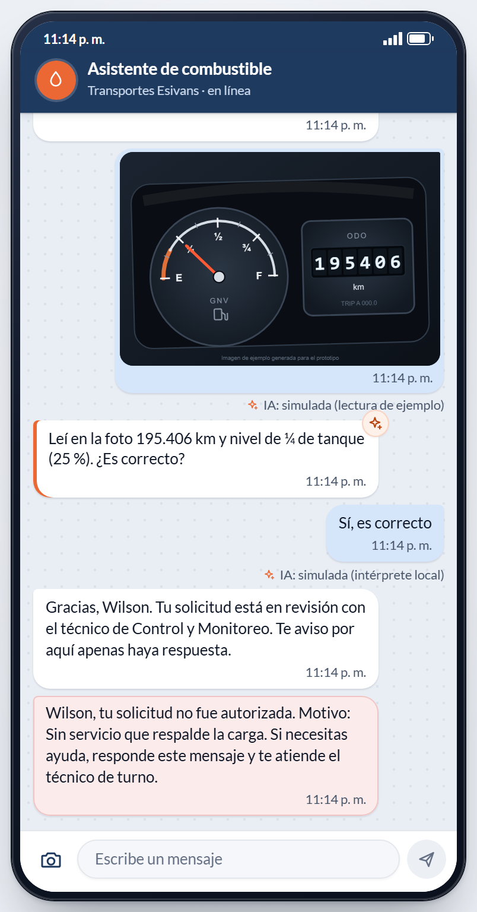
El mensaje de rechazo, con el motivo que escribió el técnico.
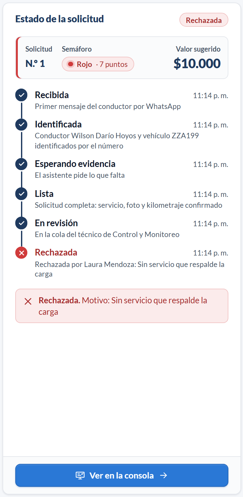
El estado «Rechazada».
Caso VEH902: no necesita tanquear
Conductor
Luis Fernando Ortega
Vehículo
VEH902 · Gasolina · placa ZZA902
Hora simulada
11:05 (11:05 a. m.)
Resultado esperado
Cerrada sin tanqueo · valor sugerido $0
El vehículo tiene el tanque casi lleno y le quedan pocos servicios. El cálculo dice que no hace falta cargar, y el
asistente se lo explica al conductor sin pasar por el técnico.
Haga clic en VEH902. El guion tiene cinco pasos.
Clic en Siguiente paso del guion. Se envía «Necesito tanquear». El asistente saluda a Luis
y pregunta: «Tu próximo servicio en EOM es a las 12:00 p. m. (Planeta Rica → Sahagún) y tienes 1 más pendiente hoy.
¿El tanqueo es para esa ruta?»
Clic en Siguiente paso del guion. Se envía «Sí, es para esa ruta» y el asistente pide la foto.
Clic en Siguiente paso del guion. Se envía la foto. El asistente responde: «Leí en la foto
61.512 km y nivel de ⅞ de tanque (88 %). ¿Es correcto?»
Clic en Siguiente paso del guion. Se envía «Sí, es correcto».
El asistente explica: «Luis, con el nivel que leí (10,50 gal) te alcanza para tu ruta pendiente y la reserva de ½
tanque: por ahora no necesitas tanquear (-3,6 gal a cargar). ¿Lo dejamos así?» Ofrece dos respuestas rápidas:
Entendido, gracias y Que lo revise el técnico.
En este punto el estado es Lista, con «Amarillo · 0 puntos», «Valor sugerido $0» y «Lo
que falta: Confirmar que no necesita tanquear ahora».
Clic en Siguiente paso del guion. Se envía «Entendido, gracias».
El asistente se despide: «De acuerdo, Luis. Cuando bajes de ½ tanque me escribes y lo gestionamos de una.» El
estado queda en Cerrada sin tanqueo; «En revisión» aparece como «No aplica», y una nota dice
«Cerrada sin tanqueo: el vehículo no necesita cargar ahora.» La solicitud nunca le quitó tiempo al técnico.
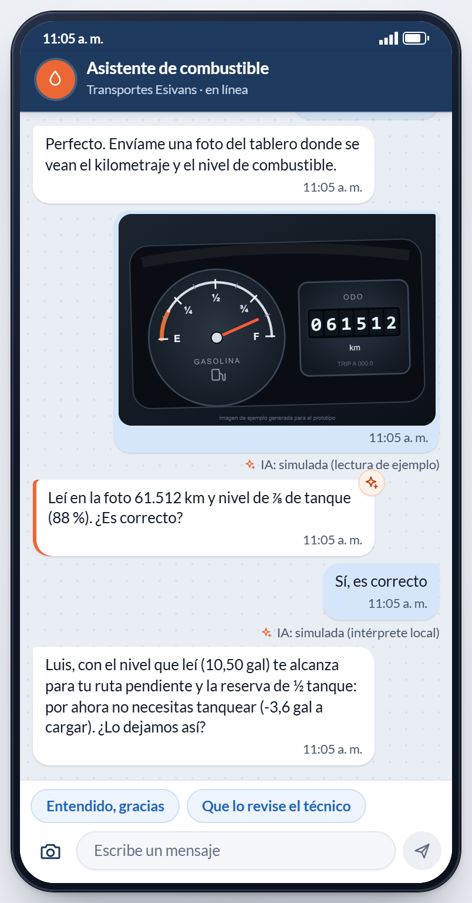
La explicación y las dos respuestas posibles.
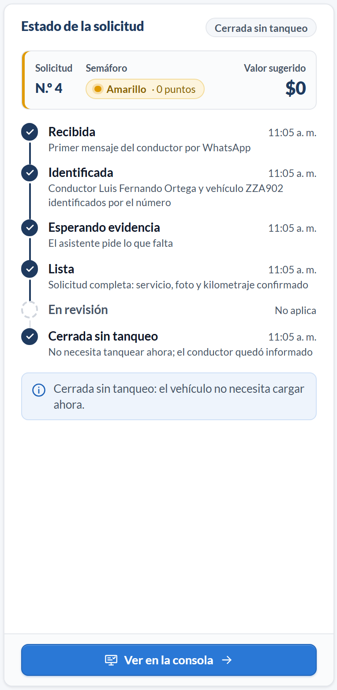
El estado «Cerrada sin tanqueo».
La otra respuesta: «Que lo revise el técnico»
Si el conductor no está de acuerdo, puede pedir una revisión. En el paso de la explicación, en vez de seguir el
guion, haga clic en la respuesta rápida Que lo revise el técnico.
El asistente responde «Listo, Luis. Le pasé tu solicitud al técnico de Control y Monitoreo para que la revise.» La
solicitud pasa a En revisión con «Amarillo · 0 puntos» y «Valor sugerido $0». Bajo «En
revisión» queda la nota «El cálculo dice que no necesita tanquear; el conductor pidió revisión».
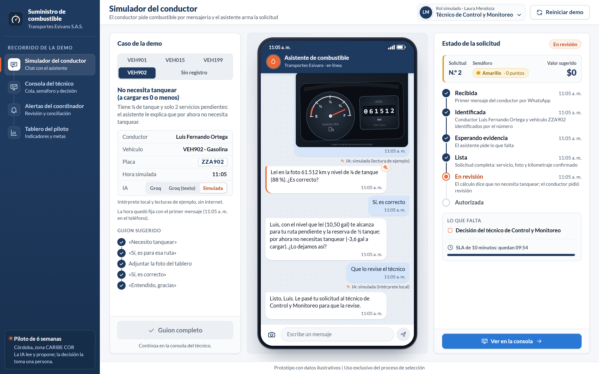
El caso VEH902 cuando el conductor pide que lo revise el técnico: la solicitud llega a la cola en amarillo, con valor sugerido de $0.
el sistema propone, pero no le cierra la puerta al conductor: si insiste, una persona lo revisa.
Caso «Sin registro»: número no registrado
Conductor
Número no registrado
Vehículo y placa
— (sin datos)
Hora simulada
08:15 (8:15 a. m.)
Resultado esperado
Amarillo 0 puntos · sin valor sugerido · pasa al técnico
Alguien escribe desde un número que no está entre los conductores. El asistente no puede armar la solicitud y se la
pasa a una persona.
Haga clic en Sin registro. El guion tiene un solo paso.
Clic en Siguiente paso del guion. Se envía «Buenos días, necesito tanquear la van».
El asistente responde con el aviso de privacidad y con: «No encuentro este número entre los conductores registrados.
Ya pasé tu caso al técnico de Control y Monitoreo, que te escribe por este mismo chat. Ten a la mano la placa del
vehículo.» El estado pasa directo a En revisión, con «Amarillo · 0 puntos», el valor en raya
y, en «Lo que falta», «Llegó sin: conductor no identificado».
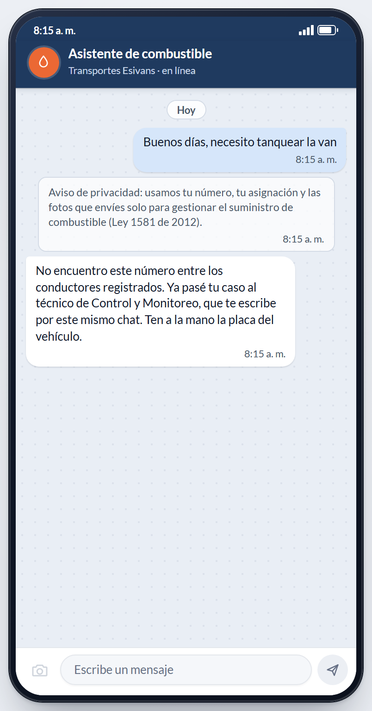
La respuesta a un número no registrado.
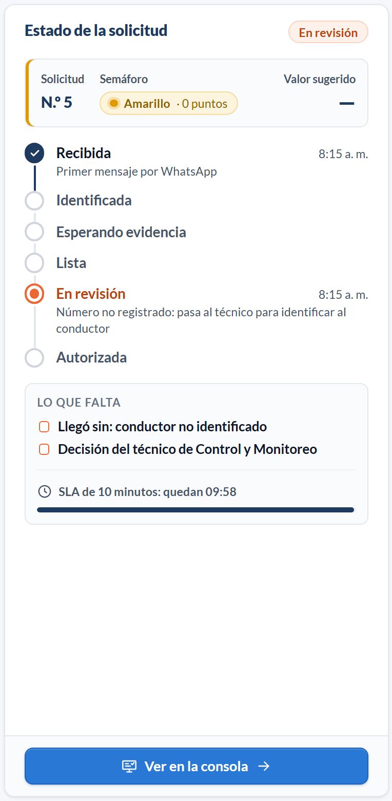
El estado: en revisión, sin conductor identificado.
Cómo termina: en la consola la solicitud aparece como «Sin placa», en amarillo, sin foto ni
cálculo. El técnico decide qué hacer con ella (véase la sección 4.9).
El mensaje promete que el técnico «te escribe por este mismo chat», pero el prototipo no tiene una
forma de que el técnico le escriba al conductor: solo puede decidir sobre la solicitud.
Consultar el estado: «¿ya me autorizaron?»
El conductor puede preguntar en cualquier momento cómo va su solicitud. Escriba a mano, por ejemplo,
¿ya me autorizaron? y envíe. El asistente responde según el momento:
Momento
Respuesta del asistente
La solicitud está incompleta
Dice qué falta. Por ejemplo: «Luis, para continuar me falta que me confirmes el servicio o el motivo y la foto del tablero.»
Está en revisión
«Luis, está en revisión con el técnico de Control y Monitoreo. Te aviso apenas haya respuesta.»
El técnico ya aprobó, pero falta habilitar
«…tu solicitud ya fue aprobada y el técnico está habilitando el medio de pago. En un momento te llega el valor y la referencia.»
No hay ninguna solicitud abierta
«Hola, Luis. No tienes solicitudes abiertas para ZZA902. Si necesitas combustible, escríbeme "Necesito tanquear".»
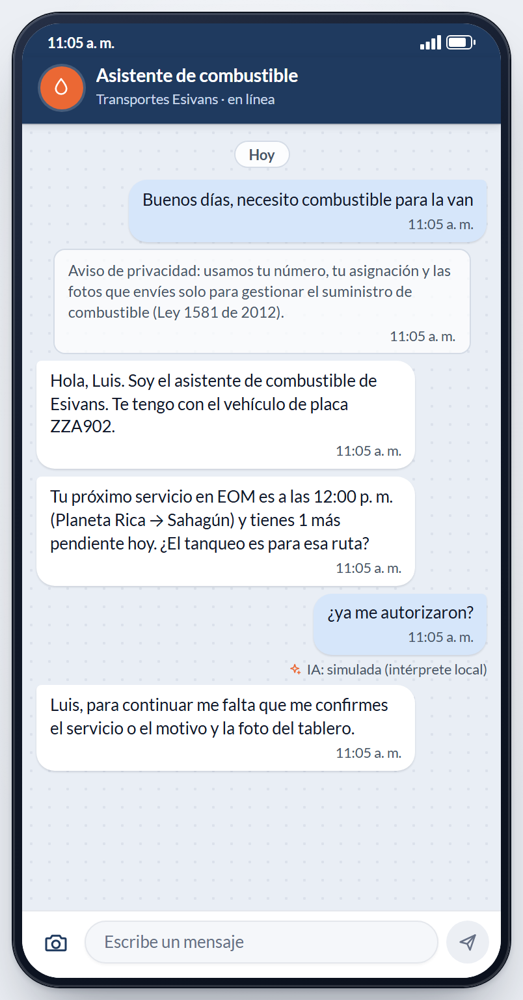
La consulta con la solicitud incompleta: el asistente dice qué falta.
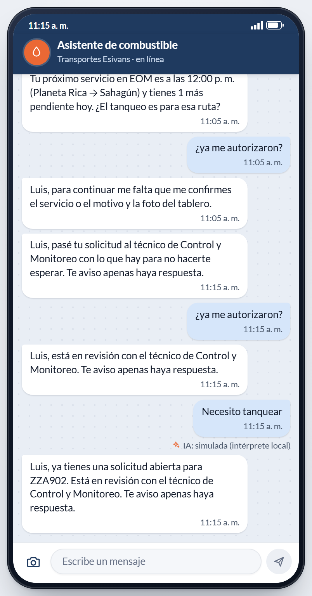
La consulta con la solicitud en revisión y, debajo, el intento de pedir otra vez.
Si, en vez de preguntar, el conductor vuelve a pedir combustible mientras su solicitud está en revisión, el asistente
no crea otra: «Luis, ya tienes una solicitud abierta para ZZA902. Está en revisión con el técnico de Control y
Monitoreo. Te aviso apenas haya respuesta.»
Y si ya fue autorizado y la autorización sigue vigente, cualquier mensaje nuevo recibe: «…ya tienes una autorización
vigente para…» con el valor, el producto y la referencia, y «No se autoriza dos veces la misma solicitud.»
Con la IA Simulada, el asistente reconoce una consulta de estado por
expresiones como «ya me autorizaron», «cómo va», «estado» o «novedad». Recuerde que este mensaje también hace avanzar
el guion un paso.
Si la solicitud no se completa en 10 minutos
Desde el primer mensaje corre un plazo de 10 minutos de tiempo real. Lo muestra la línea «SLA de 10 minutos:
quedan…» con su barra.
Si el plazo se cumple y la solicitud sigue incompleta, el sistema no la deja esperando: la pasa al técnico con lo
que tenga.
El conductor recibe: «Luis, pasé tu solicitud al técnico de Control y Monitoreo con lo que hay para no hacerte
esperar. Te aviso apenas haya respuesta.» El estado salta a En revisión con la nota «Pasó al
técnico por SLA de 10 min. Faltó: …». En «Lo que falta» aparece una línea «Llegó sin: …» por cada dato ausente, y el
plazo cambia a «SLA de 10 minutos vencido», en rojo.
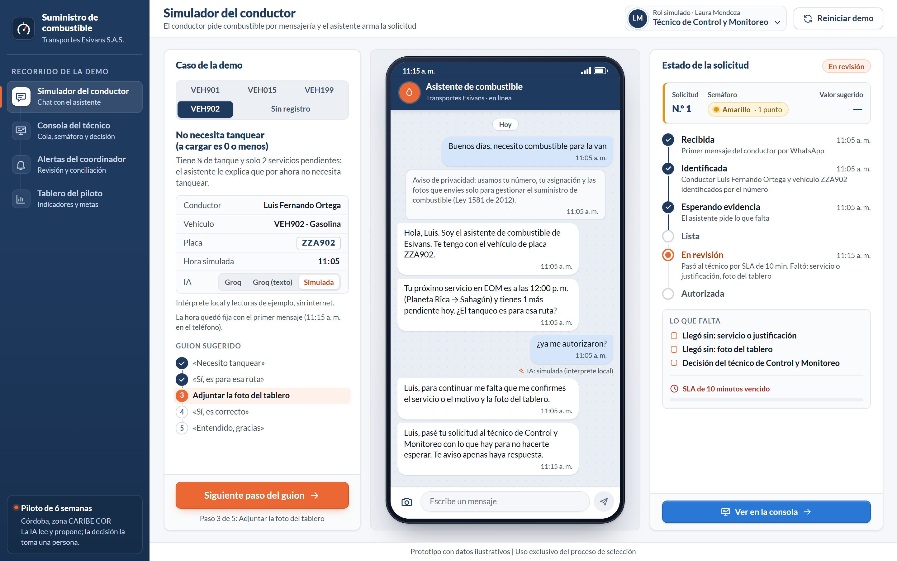
Una solicitud del VEH902 que se quedó sin recorrido ni foto: a los 10 minutos pasó al técnico. En el ejemplo quedó en amarillo con 1 punto y sin valor sugerido, porque sin foto no hay kilometraje ni nivel.
el conductor no debe quedarse sin respuesta porque le faltó un dato. Una persona decide con lo que hay.
El plazo sigue contando después: mientras el técnico no decida, la consola también muestra el
tiempo que queda o que el plazo se venció (véase la sección 4.5).
Errores frecuentes
Qué pasa
Por qué
Qué hacer
El botón dice Guion completo y está apagado, sin haber hecho nada.
Quedó elegido el caso Sin registro (u otro) que ya se envió. El sistema recuerda el último caso elegido al ir a la consola y volver.
Elija otro caso en el selector. Para repetir el mismo, use Reiniciar demo.
El asistente contesta «ya tienes una solicitud abierta…» o «ya tienes una autorización vigente…».
Ese vehículo ya tiene una solicitud en curso o una autorización que no ha vencido.
Termine la solicitud en la consola o use Reiniciar demo.
El guion se salta un paso o envía la foto antes de tiempo.
Se escribió un mensaje a mano en medio del guion, y el guion cuenta mensajes.
Responda lo que el asistente pregunta con las respuestas rápidas o a mano. Para empezar limpio, Reiniciar demo.
En el VEH015 no sale el amarillo con R02.
No se aceptó la propuesta de 34.086 km, o la IA no está en Simulada.
Reinicie y, en el último paso, pulse la respuesta rápida Sí, es 34.086.
En el VEH199 no salen los 7 puntos.
El primer mensaje no llevaba la cantidad («6,7 m3»), o se cambió la hora simulada.
Reinicie y use el guion, con la hora en 23:14.
No se puede cambiar la Hora simulada.
El caso ya tiene mensajes: la hora quedó fija con el primero.
Reiniciar demo y cambiarla antes de escribir.
El botón de la cámara está apagado.
El caso es Sin registro, que no tiene foto, o el asistente todavía está respondiendo.
Espere la respuesta o elija otro caso.
Las cifras no coinciden con las de este manual.
La IA no está en Simulada, se cambió la hora o se cambió un umbral en «Reglas y umbrales».
Reiniciar demo y revisar que la fila IA diga Simulada.
Aparece «No se pudieron cargar los casos de la demo».
El sistema no está respondiendo.
Avise a quien administra la instalación.
Puntos clave del capítulo
El simulador tiene tres zonas: el caso con su guion, el teléfono y el estado de la solicitud.
Siguiente paso del guion es la forma más segura de recorrer un caso. También puede usar las respuestas rápidas, escribir a mano o enviar la foto con la cámara.
Cinco casos, cinco finales: VEH901 verde ($90.000), VEH015 amarillo por un dígito ($50.000), VEH199 rojo con 7 puntos ($10.000), VEH902 cerrado sin tanqueo y «Sin registro», que pasa directo al técnico.
La hora simulada solo se cambia antes del primer mensaje.
A los 10 minutos, una solicitud incompleta pasa sola al técnico.
Para repetir un caso, use Reiniciar demo.
Consola del técnico: la cola de solicitudes
En este capítulo: para qué sirve la cola, cómo leer sus contadores y cada columna, en qué orden
aparecen las solicitudes, cómo funciona el plazo de 10 minutos (SLA), qué significa cada estado y cómo abrir una
solicitud. Al final, qué es una solicitud incompleta y qué es un número no registrado.
Para qué sirve
Quién la usa: Técnico de Control y Monitoreo
La cola es la lista de todas las solicitudes de combustible que han escrito los conductores. Cada renglón es una
solicitud. Desde aquí usted ve cuáles esperan su decisión, cuánto llevan esperando y de qué color es su semáforo.
el conductor está esperando en la estación o en ruta; la cola le muestra primero a quien más lleva esperando.
En la cabecera, deje el rol Técnico de Control y Monitoreo.
En el menú de la izquierda, haga clic en Consola del técnico.
La pantalla Cola de solicitudes, con el texto «Ordenada por tiempo de espera. Lo verde se
aprueba en un clic; lo amarillo o rojo pide el motivo.», cuatro contadores arriba a la derecha y una tabla.
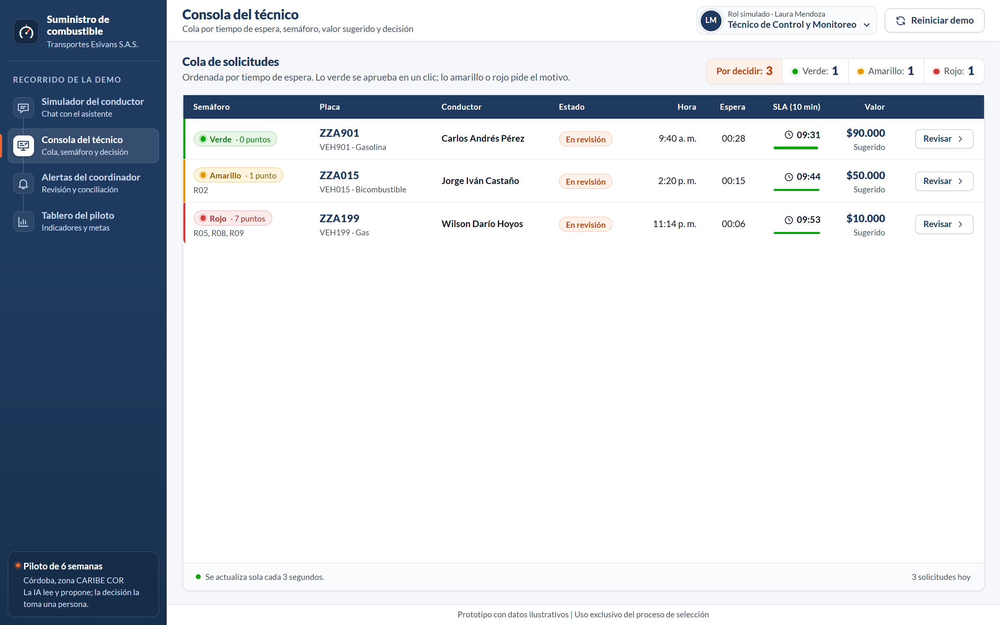
La cola con tres solicitudes por decidir: una verde, una amarilla y una roja.
La cola se actualiza sola cada 3 segundos, como lo dice el pie de la tabla. No hace falta recargar
la página: una solicitud nueva aparece apenas el conductor escribe.
Cuando la cola está vacía
Con la demo recién reiniciada no hay solicitudes. La pantalla dice No hay solicitudes en la cola
y ofrece el botón Ir al simulador, que lleva al Simulador del conductor
para enviar una.
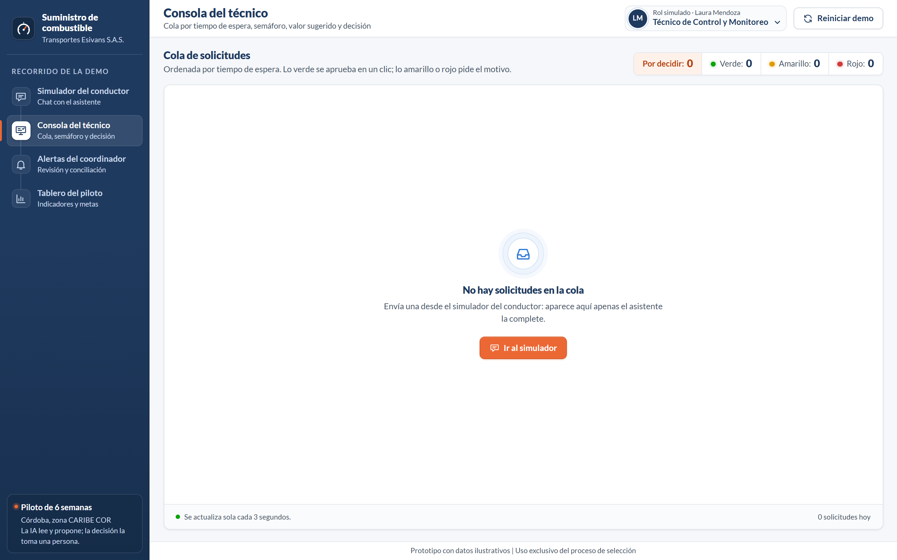
La cola vacía: todos los contadores en 0.
Los contadores
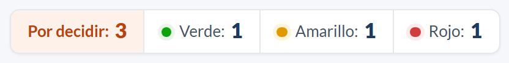
Los cuatro contadores de la cola.
Contador
Qué cuenta
Por decidir
Las solicitudes que están en manos del técnico: las que esperan decisión y las que ya se decidieron pero falta habilitar.
Verde
De las que esperan decisión, cuántas están en verde.
Amarillo
De las que esperan decisión, cuántas están en amarillo.
Rojo
De las que esperan decisión, cuántas están en rojo.
Los contadores no incluyen las solicitudes que el asistente todavía está armando con el conductor
ni las que ya se cerraron. Por eso, después de atender todo, vuelven a 0 aunque la tabla siga mostrando renglones.
El pie de la tabla muestra el total de renglones de la lista, por ejemplo 3 solicitudes hoy.
Las columnas de la tabla
La tabla, con sus ocho columnas y el botón de cada fila.
Columna
Qué muestra
Ejemplo
Semáforo
Color y puntos de la solicitud. Debajo, los códigos de las reglas que se cumplieron. Si aún no se ha evaluado, dice Sin evaluar.
Rojo · 7 puntos · R05, R08, R09
Placa
Placa del vehículo; debajo, su código y tipo de combustible. Sin vehículo: Sin placa y «Vehículo sin identificar».
ZZA901 · VEH901 · Gasolina
Conductor
Nombre del conductor. Si el número no está registrado: «Número no registrado» y el número de teléfono.
Carlos Andrés Pérez
Estado
En qué va la solicitud. Si llegó incompleta, debajo dice «Llegó sin: …».
En revisión
Hora
Hora en que el conductor pidió el combustible. En la demo es la hora simulada del caso.
9:40 a. m.
Espera
Minutos y segundos que lleva abierta la solicitud, desde el primer mensaje del conductor. En las cerradas muestra una raya (—).
00:28
SLA (10 min)
Tiempo que queda del plazo de 10 minutos, con una barra que se va vaciando.
09:31
Valor
El valor en pesos y debajo su tipo: Sugerido (lo que propone el sistema) o Autorizado (lo que ya se habilitó). Una raya (—) si no hay valor.
$90.000 · Sugerido
(botón)
Revisar en las solicitudes abiertas; Ver en las cerradas.
Revisar
Cada fila abierta tiene además una línea de color en su borde izquierdo, igual al color del semáforo. Las filas
cerradas se ven atenuadas, con fondo gris.
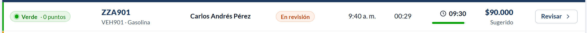
Una fila de cerca: semáforo, placa, conductor, estado, hora, espera, SLA, valor y botón.
La Hora es la del caso (por ejemplo, 11:14 p. m. en el caso nocturno). La
Espera y el SLA corren con el reloj real, desde que usted envió el primer mensaje
en el simulador.
El orden de la cola
Primero, las solicitudes abiertas, de la que más tiempo lleva esperando a la que menos.
Después, las cerradas (autorizadas, rechazadas o cerradas sin tanqueo), de la más reciente a la más antigua.
El color del semáforo no cambia el orden: una solicitud roja no pasa por delante de una verde que
lleva más tiempo.
el compromiso es responder a cada conductor en 10 minutos, sin importar el color de su solicitud.
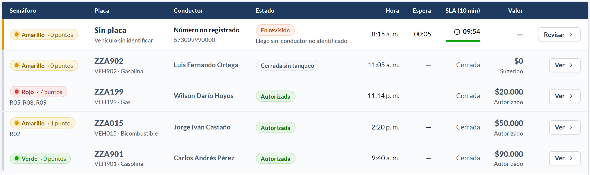
Después de usar la demo: arriba, la única solicitud abierta; debajo, las cerradas, con «Cerrada» en la columna del SLA y el botón «Ver».
El SLA y su cuenta regresiva
SLA es el plazo máximo para atender una solicitud. En este sistema es de 10 minutos
y empieza a contar con el primer mensaje del conductor, no cuando la solicitud llega a la cola.
al conductor le importa el tiempo total desde que escribió, incluido lo que tarda la conversación con el asistente.
Lo que ve en la columna
Qué significa
Reloj y tiempo en negro, barra verde: 09:31
Quedan más de 3 minutos.
Tiempo y barra en ámbar: 01:45
Quedan 3 minutos o menos: atiéndala ya.
En rojo, con un triángulo de aviso: Vencido hace 00:43
Se pasó el plazo. El contador sigue sumando el tiempo de atraso.
Decidida
Ya se aprobó o se ajustó; falta confirmar la habilitación. El plazo dejó de contar.
Cerrada
La solicitud terminó.
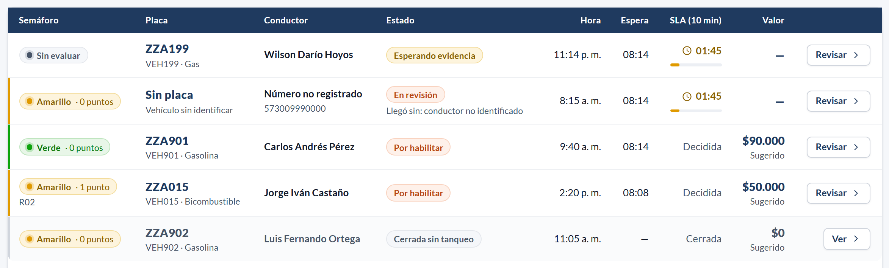
Las dos primeras filas están en ámbar (queda 01:45). Las dos siguientes ya se decidieron: dicen «Decidida» y «Por habilitar», y su espera sigue contando hasta que se confirme la habilitación.
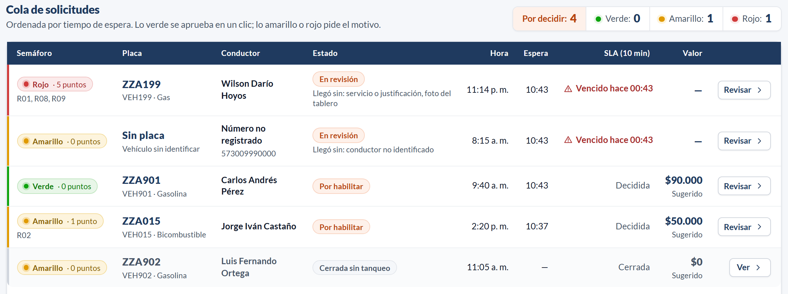
Tres minutos después: las dos primeras filas dicen «Vencido hace 00:43». El contador «Por decidir» marca 4: dos esperan decisión y dos esperan habilitación.
El SLA vencido no bloquea nada: la solicitud se puede decidir igual. Sirve para priorizar y para
medir el servicio.
Qué pasa a los 10 minutos si la solicitud no está completa
Si se cumple el plazo y el asistente todavía no ha reunido todo (el servicio, la foto del tablero o la confirmación
del kilometraje), el sistema deja de esperar: pasa la solicitud al técnico con lo que tenga y le avisa
al conductor. Así nadie se queda sin respuesta (véase la sección 4.8).
Los estados de una solicitud
La columna Estado dice en qué paso va cada solicitud. Estos son todos los que existen:
Estado
Qué significa
Quién actúa
Recibida
Llegó el primer mensaje del conductor.
El asistente
Identificada
El sistema reconoció al conductor y su vehículo por el número de teléfono.
El asistente
Esperando evidencia
El asistente le está pidiendo al conductor lo que falta: el servicio, la foto del tablero o confirmar el kilometraje.
El conductor
Lista
La solicitud está completa y ya tiene semáforo y cálculo.
El sistema
En revisión
Está esperando la decisión del técnico.
Usted
Por habilitar
Ya se aprobó o se ajustó. Falta habilitar el valor en el portal del proveedor y confirmar la referencia.
Usted
Autorizada
Se confirmó la habilitación y el conductor recibió el valor, el producto, la referencia y la vigencia.
Nadie: terminó
Rechazada
El técnico la rechazó y el conductor recibió el motivo.
Nadie: terminó
Cerrada sin tanqueo
El cálculo mostró que el vehículo no necesita cargar ahora y el conductor lo aceptó.
Nadie: terminó
Recibida e Identificada duran un instante. Lo normal es que en la
cola usted vea la solicitud ya en Esperando evidencia.
Lista también dura un instante. Solo se queda en ese estado cuando el cálculo dice que el
vehículo no necesita tanquear y el asistente espera la respuesta del conductor.
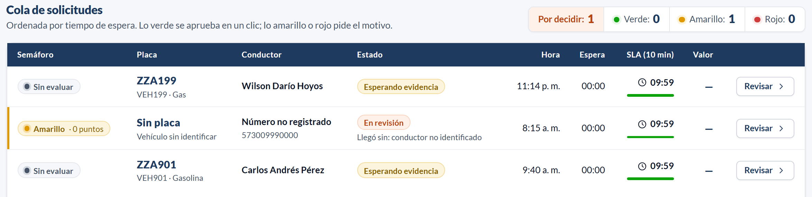
La primera y la tercera fila son solicitudes que el asistente todavía está armando: «Sin evaluar», «Esperando evidencia» y sin valor. No entran en los contadores (solo cuenta la fila del medio), pero su SLA ya está corriendo.
Usted puede abrir una solicitud que todavía está con el asistente, pero solo para consultarla: no tiene botones para
decidir hasta que pase a En revisión.
Abrir una solicitud
Ubique la fila de la placa que quiere atender. La de arriba es la que más lleva esperando.
Haga clic en Revisar. También sirve hacer clic en cualquier parte de la fila.
Se abre el detalle de la solicitud, con el panel de decisión a la derecha. El capítulo 5 lo explica
bloque por bloque.
Para volver a la cola, haga clic en la flecha que está junto a la placa, o en
Consola del técnico en el menú.
En las solicitudes cerradas el botón se llama Ver: abre el mismo detalle, pero solo para
consultar lo que pasó.
Si alguien pulsa Reiniciar demo mientras usted tiene un detalle abierto, verá el mensaje
No existe esa solicitud con el botón Volver a la cola. Es normal:
reiniciar borra todas las solicitudes.
Solicitudes incompletas
Una solicitud es incompleta cuando llegó a sus manos sin todos los datos. Usted la reconoce por la
línea «Llegó sin: …» debajo del estado.
En la segunda figura de la sección 4.5 («Vencido hace 00:43»), la primera fila es una solicitud incompleta: el conductor de la placa ZZA199 escribió un
solo mensaje y no respondió más. A los 10 minutos pasó a En revisión con la línea
«Llegó sin: servicio o justificación, foto del tablero». Al abrirla, el detalle lo explica:
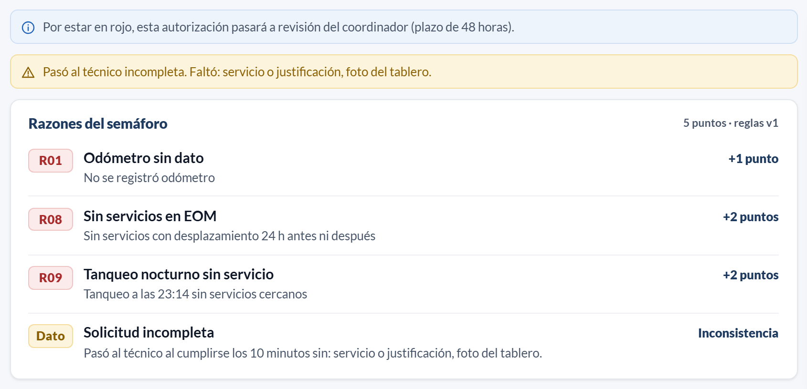
Detalle de una solicitud incompleta: el aviso amarillo dice qué faltó y la última razón, marcada como «Dato», lo repite.
Como no hubo foto, no hay kilometraje (por eso se cumple la regla R01, «Odómetro sin
dato») ni nivel de combustible: el sistema no puede calcular el valor y la columna Valor
muestra una raya.
«Llegó sin…»
Qué faltó
servicio o justificación
El conductor no dijo para qué recorrido necesita el combustible.
foto del tablero
No envió la foto, o no se pudo leer el kilometraje.
confirmación del kilometraje
Envió la foto, pero no confirmó el kilometraje leído.
conductor no identificado
El número no está registrado (véase la sección 4.9).
vehículo sin asignación vigente
El conductor está registrado, pero no tiene un vehículo asignado hoy.
Una solicitud incompleta nunca queda en verde: aparece por lo menos en
Amarillo, con la razón «Solicitud incompleta». Usted decide con la
información que haya.
Solicitudes de un número no registrado
Si escribe alguien cuyo número no está entre los conductores registrados, el asistente no puede armar la solicitud.
Le responde que pasó su caso al técnico y la solicitud llega de inmediato a la cola, sin esperar los
10 minutos.
En las figuras de la sección 4.5, es la segunda fila de la cola. Así se lee:
Semáforo
Amarillo · 0 puntos. No se cumplió ninguna regla, pero hay un dato por aclarar.
Placa
Sin placa · «Vehículo sin identificar».
Conductor
«Número no registrado» y, debajo, el número de teléfono.
Valor
Una raya (—): sin vehículo no hay cálculo.
En el prototipo, una solicitud sin vehículo identificado no se puede aprobar ni ajustar; solo se puede rechazar con
motivo (véase la sección 6.11).
Puntos clave del capítulo
La cola muestra todas las solicitudes: primero las abiertas, de la que más lleva esperando a la que menos; luego las cerradas.
Los contadores solo cuentan lo que está en manos del técnico.
El plazo es de 10 minutos desde el primer mensaje del conductor. En ámbar quedan 3 minutos o menos; en rojo, se venció.
En revisión y Por habilitar son los dos estados en los que usted debe actuar.
«Llegó sin: …» señala una solicitud incompleta; «Sin placa», un número no registrado.
La pantalla se actualiza sola cada 3 segundos.
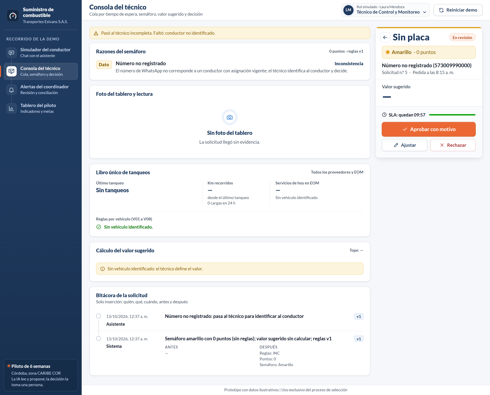
El detalle de un número no registrado: aviso de solicitud incompleta, la razón «Número no registrado» y las tarjetas sin foto, sin tanqueos y sin cálculo.
El detalle de la solicitud
En este capítulo: cómo leer, bloque por bloque, la pantalla que se abre al revisar una solicitud:
el panel de decisión, las razones del semáforo, la foto del tablero, el libro único de tanqueos, el cálculo del valor
sugerido paso a paso y la bitácora. Las decisiones (aprobar, ajustar, rechazar) se explican en el capítulo 6.
Cómo está organizada la pantalla
El detalle reúne en un solo lugar todo lo que usted necesita para decidir. El ejemplo de este capítulo es el
caso verde: la placa ZZA901 (vehículo VEH901), con un valor sugerido de
$90.000.
usted decide con la evidencia a la vista, sin abrir otros sistemas ni hacer cuentas a mano.
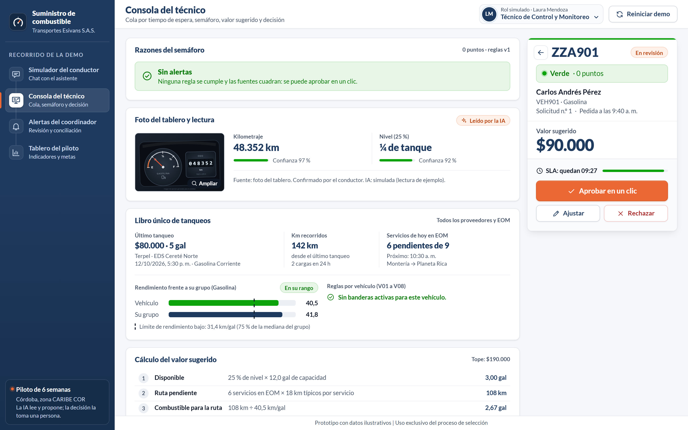
Parte de arriba del detalle: a la izquierda, las tarjetas de información; a la derecha, el panel de decisión.
Bloque
Dónde está
Qué responde
Panel de decisión
Columna derecha
¿De quién es la solicitud, de qué color está, cuánto se sugiere y cuánto tiempo me queda?
Razones del semáforo
Primera tarjeta
¿Por qué está en ese color?
Foto del tablero y lectura
Segunda tarjeta
¿Qué kilometraje y qué nivel de combustible tiene el vehículo?
Libro único de tanqueos
Tercera tarjeta
¿Cuándo tanqueó por última vez, cuánto ha recorrido y qué servicios tiene?
Cálculo del valor sugerido
Cuarta tarjeta (hay que bajar)
¿De dónde sale el valor que propone el sistema?
Bitácora de la solicitud
Última tarjeta
¿Quién hizo qué y cuándo?
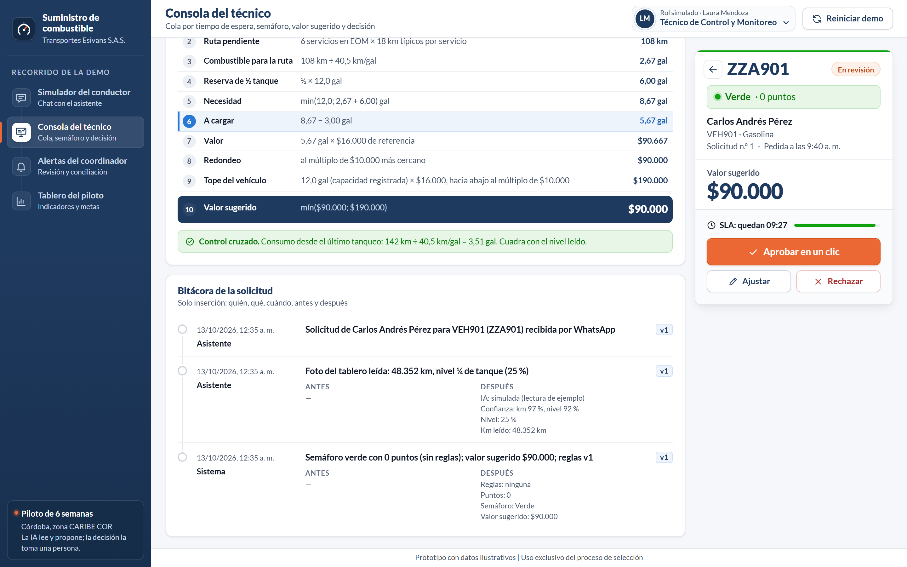
La misma pantalla, desplazada hacia abajo: el cálculo y la bitácora. El panel de decisión sigue a la derecha.
La pantalla se actualiza sola cada 3 segundos. Si otra persona decide la solicitud mientras usted la mira,
verá el cambio sin recargar.
Mientras el asistente todavía conversa con el conductor, las tarjetas aparecen vacías con estos textos:
Aún sin evaluar, Sin foto del tablero,
Sin contexto todavía y Sin cálculo todavía. El panel muestra
Sin evaluar y no ofrece botones para decidir.
El panel de decisión
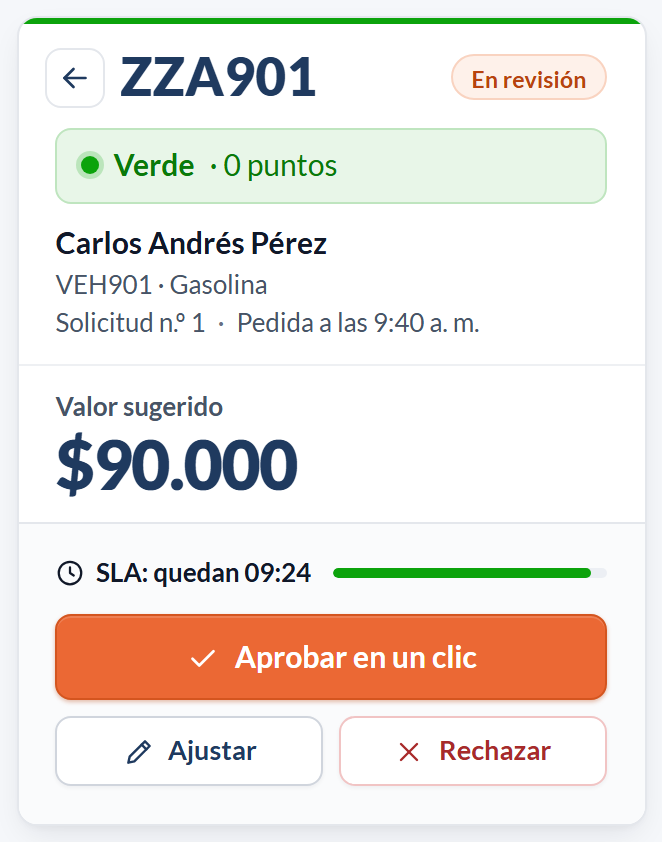
Panel de decisión del caso verde.
Flecha
Vuelve a la cola de solicitudes.
Placa
ZZA901. Si el número no está registrado dice Sin placa.
Estado
En revisión: está esperando su decisión. Los demás estados están en la sección 4.6.
Semáforo y puntos
Verde · 0 puntos. Los puntos son la suma de las reglas que se cumplen.
Conductor
Carlos Andrés Pérez, identificado por su número de teléfono.
Vehículo
Código y tipo de combustible: VEH901 · Gasolina.
Solicitud
Solicitud n.º 1 · Pedida a las 9:40 a. m. Es la hora del caso (la hora simulada en la demo).
Valor sugerido
$90.000: lo que el sistema propone autorizar. Después de aprobar o ajustar, el rótulo cambia a Valor autorizado.
SLA
SLA: quedan 09:24: minutos y segundos que faltan del plazo de 10 minutos.
Botones
Aprobar en un clic (o Aprobar con motivo), Ajustar y Rechazar.
La franja de color en el borde superior del panel repite el color del semáforo.
El semáforo
Verde con 0 puntos y ningún dato por aclarar: se puede aprobar en un clic.
Amarillo de 1 a 3 puntos, o con un dato por aclarar aunque no sume puntos: para
aprobar hay que escribir el motivo. Rojo con 4 puntos o más: también pide motivo y,
si se autoriza, el coordinador revisa después esa autorización (véase la sección 6.8). La tabla completa está
en la sección B.3.
el semáforo ordena la atención, pero ninguna regla bloquea: la decisión siempre la toma una persona.
La cuenta regresiva del SLA en el panel
Lo que ve
Qué significa
SLA: quedan 09:24 con barra verde
Quedan más de 3 minutos.
SLA: quedan 01:43 con barra ámbar
Quedan 3 minutos o menos.
SLA vencido hace 00:49 en rojo
Ya pasaron los 10 minutos. La solicitud se puede decidir igual.
No aparece
La solicitud ya fue decidida o está cerrada.
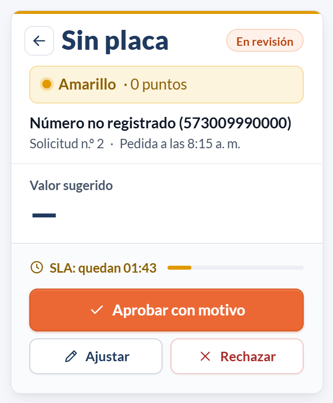
Quedan menos de 3 minutos: texto y barra en ámbar.Plazo vencido: texto y barra en rojo. Los botones siguen activos.
Razones del semáforo
Esta tarjeta explica por qué la solicitud tiene ese color. Arriba a la derecha están el total de puntos y la
versión del catálogo de reglas con la que se evaluó (por ejemplo, 0 puntos · reglas v1).
Caso verde: «Sin alertas. Ninguna regla se cumple y las fuentes cuadran: se puede aprobar en un clic.»
Cuando alguna regla se cumple, cada una ocupa un renglón. Así se lee:
Caso rojo (placa ZZA199): tres reglas que suman 7 puntos.
Código
La etiqueta de la izquierda, por ejemplo R05. Identifica la regla en el catálogo (véase el capítulo 9).
Nombre
Lo que la regla vigila: «Recarga sin recorrido».
Puntos
A la derecha: +3 puntos. Es lo que esa regla le suma al semáforo.
Explicación
La línea gris, con los datos reales de esta solicitud: «Cargó 6,7 m³ de GNV con 22 km desde su carga anterior (típica 9,7 m³)».
En el ejemplo: 3 + 2 + 2 = 7 puntos, es decir, Rojo.
Reglas que se revisan antes de autorizar
Son diez, de la R01 a la R10. El anexo B las trae una
por una, con su umbral inicial y sus puntos. El coordinador puede cambiar los umbrales (véase la sección 9.5);
por eso la tarjeta siempre dice con qué versión se evaluó.
La regla R10 no se evalúa en la solicitud: necesita la estación real donde se tanqueó,
y ese dato solo llega después, con el archivo del proveedor.
Razones marcadas como «Dato»
Algunas razones no son reglas. En lugar del código muestran la etiqueta Dato y, en lugar de
puntos, la palabra Inconsistencia. No suman puntos, pero dejan la solicitud por lo menos en
Amarillo, porque hay algo que una persona debe aclarar.
Nombre que aparece
Qué pasó
Número no registrado
El número que escribió no corresponde a un conductor con asignación vigente.
Conductor sin vehículo asignado
El conductor está registrado, pero no tiene un vehículo asignado hoy.
Solicitud incompleta
Pasaron los 10 minutos y faltó el servicio, la foto o la confirmación del kilometraje.
Inconsistencia entre fuentes
El nivel de combustible leído no cuadra con lo que el vehículo debió consumir desde el último tanqueo.
No necesita tanquear según el cálculo
Con el nivel leído y la ruta pendiente, la cantidad a cargar da 0 o menos.
Foto del tablero y lectura
Aquí está la foto que envió el conductor y lo que se leyó en ella.
la foto es la evidencia del kilometraje y del nivel de combustible; con esos dos datos se hace el cálculo.
Lectura del caso verde: 48.352 km y ¼ de tanque.
Miniatura
La foto del tablero. Tiene el botón Ampliar.
Kilometraje
48.352 km: el kilometraje con el que quedó la solicitud.
Nivel
¼ de tanque, y entre paréntesis el porcentaje: 25 %.
Confianza
Qué tan segura es la lectura de cada dato, de 0 a 100 %. En el ejemplo, 97 % para el kilometraje y 92 % para el nivel.
Fuente
Fuente: foto del tablero. Si el conductor escribió el número a mano, dice «digitado por el conductor».
Confirmación
Confirmado por el conductor. o Sin confirmar por el conductor.
IA
Quién hizo la lectura. Con la demo en modo simulado: IA: simulada (lectura de ejemplo).
El color de la barra de confianza
Color de la barra
Confianza
Qué conviene hacer
Verde
90 % o más
La lectura es clara.
Ámbar
De 80 % a 89 %
Amplíe la foto y compare.
Rojo
Menos de 80 %
Amplíe la foto y verifique el dato usted mismo.
«Leído por la IA» frente a «Lectura de ejemplo»
La etiqueta de la esquina superior derecha de la tarjeta dice de dónde salió la lectura:
Etiqueta
Cuándo aparece
Leído por la IA
En los modos de IA Simulada y Groq. La línea de abajo aclara quién respondió de verdad.
Lectura de ejemplo
En el modo Groq (texto): la foto no se envía al servicio externo y se usa la lectura de ejemplo guardada en la demo.
En el modo Simulada, que es el de este manual, la etiqueta dice
Leído por la IA, pero la lectura es un dato de ejemplo de la demo. La línea
IA: simulada (lectura de ejemplo) lo dice con claridad, y lo mismo queda en la bitácora.
Ampliar la foto
En la miniatura, haga clic en Ampliar.
Compare los números de la foto con el kilometraje y el nivel de la tarjeta.
Para cerrar, haga clic en la X de la ventana, haga clic fuera de ella o presione Esc.
Se abre la ventana Foto del tablero con la imagen en grande.
La foto ampliada.
Cuando el kilometraje se corrigió
Si la lectura parece tener un dígito equivocado, el asistente le propone al conductor el valor corregido. En la
tarjeta aparece una franja amarilla con lo leído y lo corregido.
Placa ZZA015: «La foto se leyó como 24.086 km (dígito cambiado); corregido a 34.086 km.» La confianza del kilometraje es 78 %, con barra roja.
Si la solicitud llegó sin foto, la tarjeta dice Sin foto del tablero y
«La solicitud llegó sin evidencia.»
Libro único de tanqueos
El libro único junta, en una sola tarjeta, los tanqueos del vehículo en todos los proveedores y sus servicios
programados en EOM (la fuente de donde el sistema toma los servicios de cada vehículo). Por eso arriba a la derecha
dice Todos los proveedores y EOM.
un solo proveedor no ve todo el consumo de un vehículo; al juntarlos, se nota una recarga sin recorrido o un tanqueo sin servicio.
Libro único del caso verde (VEH901).
Dato
Qué muestra
En el ejemplo
Último tanqueo
Valor y cantidad; debajo, proveedor y estación; debajo, fecha, hora y producto.
$80.000 · 5 gal · Terpel · EDS Cereté Norte · 12/10/2026, 5:30 p. m. · Gasolina Corriente
Km recorridos
Kilómetros desde el último tanqueo y número de cargas en las últimas 24 horas.
142 km · 2 cargas en 24 h
Servicios de hoy en EOM
Cuántos servicios le faltan del total de hoy, la hora del próximo y su recorrido.
6 pendientes de 9 · Próximo: 10:30 a. m. · Montería → Planeta Rica
Rendimiento frente a su grupo
Kilómetros por unidad de combustible del vehículo, comparados con la mediana de los vehículos de su mismo tipo.
Vehículo 40,5 · Su grupo 41,8 · «En su rango»
Reglas por vehículo (V01 a V08)
Señales que el vehículo arrastra por su comportamiento de los últimos 90 días.
«Sin banderas activas para este vehículo.»
Cuando no hay servicios
Si el vehículo no tiene servicios hoy, el dato aparece en rojo: Sin servicios hoy. Debajo
se lee una de estas dos líneas, y la respuesta que dio el conductor cuando el asistente le preguntó para qué
recorrido necesitaba el combustible:
Línea
Qué significa
Ejemplo de la demo
Tampoco en las últimas 24 h
El vehículo sí opera en EOM, pero no tiene servicios cercanos.
El vehículo no tiene ningún servicio registrado en EOM.
VEH015 · Motivo dado: «Traslado no programado»
Cómo leer el rendimiento
Libro único del VEH199: sin servicios hoy, rendimiento «En su rango» (16,2 frente a 18,0 km/m³) y una bandera activa, V08.
Vehículo
Barra con el rendimiento de este vehículo.
Su grupo
Barra azul oscuro con la mediana de su grupo (Gasolina, Bicombustible, Gas…).
Marca punteada
El límite de rendimiento bajo: 75 % de la mediana del grupo.
Etiqueta
En su rango (verde), Bajo: 50 % menos (rojo), Alto con su porcentaje (amarillo) o No concluyente.
La unidad depende del combustible: km/gal en gasolina, km/m³ en gas.
Reglas por vehículo (V01 a V08)
Estas banderas describen al vehículo, no a la solicitud. No suman puntos al semáforo de la
solicitud; le sirven a usted como contexto y al coordinador para su revisión por vehículo.
Las ocho banderas, con el umbral de cada una, están en el anexo B.
Ejemplos de la demo: el VEH199 tiene V08 («96 % de sus tanqueos con al menos una
alerta»). El VEH015 tiene V01 («Rinde 26,3 km/gal-eq frente a la mediana de su grupo,
52,7 (50 % menos); el límite es 39,5») y V05 («99 tanqueos por $5,0 M sin un solo servicio
en EOM en los 90 días»).
Cálculo del valor sugerido, paso a paso
El sistema no adivina el valor: lo calcula con una fórmula fija y muestra cada paso. Arriba a la derecha de la
tarjeta está el tope del vehículo, que es lo máximo que se le puede autorizar
(Tope: $190.000 en el ejemplo).
si usted puede seguir la cuenta, puede confiar en el valor o saber exactamente en qué paso no está de acuerdo.
La idea, en una frase: cargar lo necesario para terminar la ruta de hoy y quedar con medio tanque de
reserva, sin pasar de lo que le cabe al tanque.
Paso
Nombre
Cuenta del ejemplo
Resultado
En palabras sencillas
1
Disponible
25 % de nivel × 12,0 gal de capacidad
3,00 gal
Lo que hay ahora en el tanque: un cuarto de un tanque de 12 galones.
2
Ruta pendiente
6 servicios en EOM × 18 km típicos por servicio
108 km
Lo que le falta por recorrer hoy: sus 6 servicios pendientes, a 18 km cada uno.
3
Combustible para la ruta
108 km ÷ 40,5 km/gal
2,67 gal
Lo que gasta en ese recorrido, según lo que rinde este vehículo.
4
Reserva de ½ tanque
½ × 12,0 gal
6,00 gal
El mínimo con el que debe quedar: medio tanque.
5
Necesidad
mín(12,0; 2,67 + 6,00) gal
8,67 gal
Ruta más reserva. «mín» quiere decir «el menor de los dos»: nunca más de lo que le cabe al tanque.
6
A cargar
8,67 − 3,00 gal
5,67 gal
Lo que necesita menos lo que ya tiene. Es la cantidad que hay que tanquear.
7
Valor
5,67 gal × $16.000 de referencia
$90.667
Esa cantidad, al precio de referencia del producto.
8
Redondeo
al múltiplo de $10.000 más cercano
$90.000
Se redondea a decenas de miles, que es como se habilita el valor.
9
Tope del vehículo
12,0 gal (capacidad registrada) × $16.000, hacia abajo al múltiplo de $10.000
$190.000
Lo que costaría llenar el tanque completo ($192.000), redondeado hacia abajo.
10
Valor sugerido
mín($90.000; $190.000)
$90.000
El menor entre el valor redondeado y el tope. Es lo que aparece en el panel de decisión.
Los diez pasos del caso verde. El paso 6, «A cargar», va resaltado; el 10 es el resultado.
Las cifras de la pantalla van redondeadas a dos decimales, pero el sistema calcula con los valores exactos. Por
eso el paso 7 muestra $90.667: la cantidad exacta es 5,6667 gal, y 5,6667 × $16.000 = $90.667.
De dónde sale cada dato
Dato
Origen
Nivel (25 %)
La foto del tablero.
Capacidad (12,0 gal)
La ficha del vehículo («capacidad registrada»).
Servicios pendientes (6)
EOM: los servicios de hoy que faltan.
18 km por servicio
El recorrido típico de un servicio en la zona del piloto (CARIBE COR).
Rendimiento (40,5 km/gal)
El rendimiento del vehículo, que también se ve en el libro único.
Precio de referencia
Un valor fijo por producto en el prototipo: $16.000 por galón de Gasolina Corriente; $3.200 por m³ de GNV.
El control cruzado
Debajo de los pasos hay una franja que compara dos fuentes: el nivel que se leyó en la foto y lo que el vehículo
debió consumir desde su último tanqueo.
Franja verde: «Control cruzado. Consumo desde el último tanqueo: 142 km ÷ 40,5 km/gal = 3,51 gal.
Cuadra con el nivel leído.»
Franja amarilla: el nivel leído es mayor de lo posible o menor de lo esperado. En ese caso
aparece además la razón «Inconsistencia entre fuentes» y la solicitud queda por lo menos en
Amarillo.
el indicador de combustible no es un instrumento exacto, así que el sistema acepta una diferencia razonable (15 % de la capacidad del tanque) antes de avisar.
Otras líneas que pueden aparecer
Lo que ve
Qué significa
«El conductor pidió 6,7 m³; el cálculo da 3,5 m³.»
El conductor escribió una cantidad. Se muestra junto a la del cálculo para que usted compare (caso VEH199).
Paso «Valor sugerido»: «A cargar es 0 o menos: no necesita tanquear ahora» y $0
Con lo que tiene le alcanza para la ruta y la reserva. El cálculo termina ahí, sin los pasos de valor, redondeo y tope.
«Sin vehículo identificado: el técnico define el valor.»
El número no está registrado: no hay vehículo y no se puede calcular.
«No se puede calcular el valor: falta el nivel de combustible. El técnico lo define.»
No se pudo leer el nivel (o falta la capacidad o el rendimiento del vehículo).
Sin cálculo todavía
La solicitud aún no se ha evaluado.
Cálculo del VEH199 (gas, en m³): sin servicios pendientes, solo se completa la reserva de medio tanque. Valor sugerido: $10.000; tope: $40.000.
Bitácora de la solicitud
La bitácora es el historial de la solicitud: cada cosa que pasó, en orden, de la más antigua a la más reciente.
Su subtítulo lo resume: Solo inserción: quién, qué, cuándo, antes y después.
Bitácora del caso verde ya autorizado: cinco registros.
Cómo leer un registro
Cuándo
Fecha y hora. Es la hora real del reloj, no la hora simulada del caso.
Quién
Asistente (lo hizo el asistente del chat), Sistema (lo hizo el sistema solo) o el nombre de la persona con su rol.
Qué
La frase en negrita: «Laura Mendoza aprobó la solicitud por $90.000 en un clic».
Antes
Cómo estaban los datos antes de esa acción. Una raya (—) significa que no había nada antes.
Después
Cómo quedaron los datos.
Etiqueta v1
La versión del catálogo de reglas vigente en ese registro.
El punto de la izquierda es azul oscuro cuando se aprueba o se ajusta, rojo cuando se rechaza y verde en la
habilitación; en los demás registros es blanco.
Qué queda registrado
Momento
Quién
Ejemplo del texto
Llega la solicitud
Asistente
Solicitud de Carlos Andrés Pérez para VEH901 (ZZA901) recibida por WhatsApp
Se lee la foto
Asistente
Foto del tablero leída: 48.352 km, nivel ¼ de tanque (25 %)
El conductor escribe el kilometraje
Asistente
El conductor digitó el kilometraje: … km
Se calcula el semáforo
Sistema
Semáforo verde con 0 puntos (sin reglas); valor sugerido $90.000; reglas v1
Se cumple el plazo sin completar
Sistema
SLA de 10 minutos cumplido: pasa al técnico. Faltó: …
Alguien decide
La persona
Laura Mendoza aprobó la solicitud por $90.000 en un clic
Se confirma la habilitación
La persona
Laura Mendoza habilitó el chip en Terpel: $90.000 de Gasolina Corriente, referencia TER-261013-0001, vigente 2 horas
Autorización de una solicitud en rojo
Sistema
Por estar en rojo, la autorización pasó a revisión del coordinador: alerta C03 de prioridad alta (plazo de 48 horas)
Se cierra sin tanqueo
Asistente
Solicitud cerrada sin tanqueo: a cargar es 0 o menos
Por qué no se puede modificar
«Solo inserción» quiere decir que a la bitácora solo se le agregan registros. Nadie puede cambiar
ni borrar uno que ya existe: ni el técnico, ni el coordinador, ni soporte. El propio sistema rechaza el intento.
En la pantalla tampoco hay botones para editarla.
si mañana alguien pregunta por qué se autorizó un valor, la respuesta está ahí tal como ocurrió, con el cálculo original, la persona y el motivo.
Lo que usted escribe como motivo queda guardado para siempre con su nombre. Escríbalo claro y completo.
El botón Reiniciar demo sí borra todo, incluida la bitácora, porque vuelve a cargar los
datos de ejemplo. Es una función de la demostración, no del uso diario.
Puntos clave del capítulo
El panel de la derecha resume la solicitud: placa, semáforo, conductor, valor sugerido y tiempo restante.
Cada razón del semáforo trae su código, sus puntos y la explicación con los datos de esta solicitud.
Verde: 0 puntos. Amarillo: de 1 a 3 puntos o un dato por aclarar. Rojo: 4 puntos o más.
Si la confianza de la lectura es baja o hubo corrección, amplíe la foto y compare.
El valor sugerido sale de diez pasos visibles: ruta pendiente más medio tanque de reserva, menos lo que ya tiene, sin pasar del tope.
La bitácora guarda quién, qué y cuándo, y no se puede cambiar ni borrar.
Decidir una solicitud
En este capítulo: cómo aprobar, ajustar o rechazar una solicitud; cómo habilitar el valor y avisarle
al conductor; qué pasa cuando la solicitud está en rojo o cuando dos personas deciden a la vez; qué puede hacer cada
rol, y tres recorridos completos con las cifras de la demo.
Las tres decisiones y los dos tiempos
Quién lo hace: Técnico de Control y MonitoreoCoordinador
Toda solicitud En revisión termina con una de tres decisiones. Los botones están en el
panel de decisión, a la derecha del detalle.
Decisión
Qué hace
¿Pide motivo?
Qué sigue
Aprobar en un clic
Autoriza el valor sugerido.
No.
Habilitar.
Aprobar con motivo
Autoriza el valor sugerido de una solicitud que no está en verde.
Sí.
Habilitar.
Ajustar
Autoriza un valor distinto del sugerido.
Sí.
Habilitar.
Rechazar
No autoriza.
Sí.
El conductor recibe el motivo. La solicitud queda cerrada.
Aprobar y ajustar tienen dos tiempos:
Decidir. La solicitud pasa a Por habilitar. El conductor todavía no recibe nada.
Habilitar. Usted habilita el valor en el portal del proveedor, escribe la referencia y hace clic en
Confirmar. La solicitud pasa a Autorizada y el conductor recibe el mensaje.
el conductor solo debe recibir el aviso cuando el valor ya está de verdad habilitado en el proveedor.
Cada solicitud admite una sola decisión y no se puede deshacer. Ningún botón pide una segunda
confirmación antes de guardar: revise antes de hacer clic.
Aprobar en un clic
Es la forma rápida de aprobar una solicitud sin novedades.
El botón dice…
Cuándo
Aprobar en un clic
El semáforo está en Verde, la solicitud está En revisión y tiene un valor sugerido mayor que $0.
La solicitud ya fue decidida, está cerrada o todavía la está armando el asistente.
En la Consola del técnico, abra la solicitud con Revisar.
Verifique que la tarjeta Razones del semáforo diga Sin alertas.
Dé una mirada a la foto, al libro único y al valor sugerido.
Haga clic en Aprobar en un clic.
El estado cambia a Por habilitar, el rótulo Valor sugerido pasa a
Valor autorizado y debajo aparece el panel
Habilitar en el portal del proveedor. En la bitácora queda, por ejemplo,
«Laura Mendoza aprobó la solicitud por $90.000 en un clic».
Después de «Aprobar en un clic»: la solicitud queda «Por habilitar» y aparece el panel de habilitación.
Si el semáforo está en amarillo o en rojo, usted puede aprobar el valor sugerido, pero debe decir por qué.
cuando una regla avisa y aun así se autoriza, la razón de esa decisión debe quedar escrita.
Abra la solicitud y lea cada razón de la tarjeta Razones del semáforo.
Haga clic en Aprobar con motivo. Se abre la ventana del mismo nombre, que recuerda el semáforo, la placa y el valor sugerido.
En Motivo, escriba la razón (mínimo 5 caracteres, máximo 300).
También puede hacer clic en una de las frases sugeridas: Kilometraje corregido y confirmado por el conductor
o Recorrido confirmado con el coordinador. La frase pasa al campo y usted la puede editar.
Haga clic en Aprobar.
La ventana se cierra, el estado cambia a Por habilitar y aparece el panel de habilitación
con el valor sugerido como valor autorizado.
La ventana con el motivo diligenciado.Sin motivo no se guarda: «Escribe el motivo (mínimo 5 caracteres): queda en la bitácora.»
Para salir sin decidir, haga clic en Cancelar, en la X o presione
Esc. No se guarda nada.
Ajustar
Use Ajustar cuando el valor que se debe autorizar no es el sugerido: más o menos. Está
disponible con cualquier color de semáforo.
Abra la solicitud y haga clic en Ajustar. Se abre la ventana Ajustar el valor.
En Valor a autorizar (pesos), escriba el valor en pesos, sin puntos ni decimales:
20000. El campo viene con el valor sugerido.
Debajo, una línea le confirma lo que va a autorizar:
«Se autoriza $20.000. Sugerido: $10.000. Tope del vehículo: $40.000.»
En Motivo, escriba la razón del ajuste (mínimo 5 caracteres).
Frases sugeridas: Apoyo nocturno confirmado con el coordinador y
Ruta adicional asignada por fuera de EOM.
Haga clic en Guardar ajuste.
El estado cambia a Por habilitar. El panel de habilitación muestra el valor ajustado y la
frase «Ajustada por Laura Mendoza (sugerido $10.000)».
Ajuste de $10.000 a $20.000, con motivo.Los dos controles: el tope del vehículo y el motivo obligatorio.
Lo que el sistema no deja pasar
Mensaje
Qué hacer
«Escribe un valor mayor que $0.»
Escriba un valor. Para no autorizar nada, use Rechazar.
«El valor va en pesos, sin decimales.»
Quite los decimales.
«No puede pasar del tope del vehículo ($40.000).»
Baje el valor. El tope es lo que cuesta llenar el tanque y no se puede superar.
«Escribe el motivo (mínimo 5 caracteres): queda en la bitácora.»
Escriba el motivo.
Qué queda guardado del valor original
El ajuste no borra el cálculo del sistema. El valor sugerido original sigue visible en cuatro lugares:
En el panel de habilitación: «(sugerido $10.000)».
En el panel de la solicitud ya autorizada: «Valor sugerido original: $10.000 · Motivo: …».
En la bitácora: «Laura Mendoza ajustó la solicitud por $20.000 (sugerido $10.000). Motivo: …», con el valor sugerido en Antes y el valor ajustado en Después.
En la tarjeta Cálculo del valor sugerido, que no cambia.
El conductor también se entera: a su mensaje de autorización se le agrega
«El técnico ajustó el valor. Motivo: …».
Bitácora de un ajuste: en «Antes», el valor sugerido de $10.000; en «Después», el valor de $20.000 y el motivo.
Rechazar
Use Rechazar cuando no se debe autorizar el tanqueo.
el conductor necesita saber por qué no se le autorizó; por eso el motivo es obligatorio y le llega tal como usted lo escribe.
Abra la solicitud y haga clic en Rechazar. Se abre la ventana Rechazar la solicitud.
En Motivo, escriba la razón (mínimo 5 caracteres).
Frases sugeridas: Sin servicio que respalde la carga y
Recarga reciente sin recorrido.
Haga clic en el botón rojo Rechazar.
Aparece el aviso «Solicitud rechazada: el conductor recibió el motivo.» El estado cambia a
Rechazada y el panel muestra en rojo: «Rechazada por Laura Mendoza. Motivo: Sin servicio que
respalde la carga. El conductor ya recibió el motivo.» No hay habilitación.
La ventana «Rechazar la solicitud».El panel después de rechazar.
Qué recibe el conductor
El conductor recibe de inmediato este mensaje en su chat:
«Wilson, tu solicitud no fue autorizada. Motivo: Sin servicio que respalde la carga. Si necesitas ayuda,
responde este mensaje y te atiende el técnico de turno.»
Para verlo, haga clic en Ver el mensaje al conductor en el panel: se abre el
Simulador del conductor con esa conversación. La sección 3.6 muestra cómo se ve.
El motivo llega al conductor con sus mismas palabras. Escríbalo con respeto y de forma que él lo entienda.
La habilitación
Habilitar es dejar disponible en el proveedor de combustible el valor autorizado, para ese
vehículo y por un tiempo limitado. En la demo los tres casos usan el chip de Terpel.
El prototipo no se conecta con el portal del proveedor. Usted hace la habilitación a mano en el
portal y aquí solo copia los valores y confirma la referencia. Por eso, en la demo, basta con hacer clic en
Confirmar.
Panel de habilitación del caso verde.
Arriba se lee quién decidió: «Aprobada por Laura Mendoza. Copia estos valores en el portal de Terpel para
habilitar el chip y confirma la referencia.»
Proveedor
Terpel.
Vehículo
La placa: ZZA901.
Valor
$90.000. Al copiarlo se copia el número sin signos: 90000.
Producto
Gasolina Corriente.
Vigencia
2 horas.
Copiar todo
Copia los cinco datos de una vez, uno por renglón.
Referencia del portal
El número con el que el portal confirma la habilitación. Es obligatoria.
Procedimiento
En el panel Habilitar en el portal del proveedor, haga clic en el ícono de copiar que está
al lado de cada valor y péguelo en el portal del proveedor. O use Copiar todo.
Cada vez aparece un aviso corto, por ejemplo «Copiado · Placa en el portapapeles.»
En Referencia del portal, escriba la referencia que le entregó el portal (de 3 a 60 caracteres).
El campo ya trae una referencia sugerida, por ejemplo TER-261013-0001. Usted la puede cambiar.
Haga clic en Confirmar.
Aparece el aviso «Habilitación confirmada: el conductor recibió valor, producto, referencia y vigencia.» El estado
cambia a Autorizada y el panel muestra en verde: «Autorizada: $90.000 de Gasolina Corriente.
Referencia TER-261013-0001 en Terpel (chip), habilitada por Laura Mendoza. Vigencia: 2 horas (hasta las 11:40 a. m.)».
El aviso que confirma la habilitación.
La solicitud ya «Autorizada».
La referencia sugerida
La referencia sugerida se arma así: TER (Terpel), la fecha de la solicitud en formato
año-mes-día (261013 es el 13 de octubre de 2026) y el número de la solicitud
(0001). Por eso en su pantalla la fecha y el número pueden ser otros.
en la demo no hay portal que entregue una referencia; la sugerida permite completar el recorrido.
La vigencia de 2 horas
La autorización vale 2 horas desde el momento en que usted confirma. El panel y el mensaje al conductor
muestran la hora límite en la hora del caso: solicitud de las 9:40 a. m., vigencia «hasta las 11:40 a. m.».
Mientras esté vigente, si el conductor vuelve a pedir combustible para el mismo vehículo, el asistente le
responde que ya tiene una autorización vigente y no crea otra solicitud.
Cuando pasan las 2 horas, la pantalla no cambia: la solicitud sigue apareciendo como
Autorizada. El prototipo no muestra un estado «vencida».
El mensaje al conductor
Al confirmar, el conductor recibe en su chat:
«Autorizado, Carlos: $90.000 de Gasolina Corriente. Referencia: TER-261013-0001. Vigencia: 2 horas (hasta las
11:40 a. m.). Tu chip ya está habilitado solo por ese valor.»
Si la decisión fue un ajuste, se agrega: «El técnico ajustó el valor. Motivo: …».
Para verlo, haga clic en Ver el mensaje al conductor. La sección 3.4 muestra cómo se ve.
Entre la decisión y la confirmación, si el conductor pregunta por su solicitud, el asistente
le responde que ya fue aprobada y que el técnico está habilitando el medio de pago.
Si dos personas deciden la misma solicitud
Solo cuenta la primera decisión. La segunda no se guarda, aunque llegue un instante después.
un mismo tanqueo no puede quedar aprobado por una persona y rechazado por otra, ni autorizado dos veces.
Ejemplo: usted abre la ventana Rechazar la solicitud y, mientras escribe el motivo, el
coordinador aprueba esa misma solicitud. Al hacer clic en Rechazar, su decisión no se guarda y
la ventana le dice quién decidió, qué decidió y cuándo:
«Esta solicitud ya fue decidida por Carlos Rivas (aprobada) el 13/10/2026 a las 1:01 a. m.»
Haga clic en Cancelar: el detalle ya muestra la decisión que quedó en firme (en el ejemplo,
Por habilitar, «Aprobada por Carlos Rivas»).
Mientras usted mira el detalle, la pantalla se actualiza sola cada 3 segundos. Si otra persona decide, los
botones desaparecen y usted ve el nuevo estado.
Con la habilitación pasa lo mismo: si alguien ya confirmó, el segundo intento no se guarda y el mensaje dice
quién la habilitó y con qué referencia.
El control posterior de las solicitudes en rojo
Una solicitud en Rojo no está prohibida. Usted puede aprobarla con motivo o
ajustarla. Lo que cambia es que después el coordinador revisa esa autorización.
el conductor no se queda esperando una segunda aprobación, y aun así otra persona revisa las autorizaciones de mayor riesgo.
Momento
Qué ve usted
Al abrir la solicitud
Una nota azul sobre las razones: «Por estar en rojo, esta autorización pasará a revisión del coordinador (plazo de 48 horas).»
Al aprobar con motivo o ajustar
La solicitud queda Por habilitar. Todavía no existe ninguna alerta.
Al hacer clic en Confirmar
Aquí nace la alerta. La nota cambia a «…esta autorización pasó a revisión del coordinador (plazo de 48 horas).»
En la bitácora
Un registro nuevo del Sistema: «Por estar en rojo, la autorización pasó a revisión del coordinador: alerta C03 de prioridad alta (plazo de 48 horas)».
Solicitud en rojo ya autorizada: la nota dice «pasó a revisión del coordinador».
La alerta lleva el código C03, «Autorización de solicitud en rojo». Le aparece al
coordinador en Alertas del coordinador, pestaña Tanqueos con alerta,
con quién autorizó, cuánto, las reglas, el motivo y el valor sugerido (véase la sección 7.9).
Así ve el coordinador la alerta que nació de la autorización del VEH199.
Nada se bloquea: el conductor ya tiene su autorización.
Se crea una sola alerta por solicitud.
Si usted rechaza una solicitud en rojo, no se crea alerta.
Usted no tiene que hacer nada más: la revisión es tarea del coordinador.
Qué puede hacer cada rol en esta pantalla
Todos los roles pueden abrir la cola y el detalle. Lo que cambia es quién puede decidir.
Rol
Ver cola y detalle
Aprobar, ajustar, rechazar
Confirmar la habilitación
Técnico de Control y Monitoreo
Sí
Sí
Sí
Coordinador
Sí
Sí
Sí
Finanzas
Sí
No (solo lectura)
No
Soporte
Sí
No (solo lectura)
No
Con un rol de solo lectura, sobre las razones aparece un aviso amarillo y los botones quedan apagados:
«Solo lectura: con el rol Soporte puedes consultar la solicitud, pero la decisión y la habilitación son del técnico de Control y Monitoreo o del coordinador.»
Rol «Soporte»: botones apagados.
Con un rol de solo lectura usted puede:
Leer las razones, la foto, el libro único, el cálculo y la bitácora.
Ampliar la foto.
Ver quién decidió, cuánto y con qué motivo.
No puede decidir ni confirmar la referencia. En una solicitud Por habilitar, el campo
Referencia del portal y el botón Confirmar quedan apagados.
El nombre que queda en la bitácora es el de la persona del rol elegido en la cabecera.
Con el rol «Coordinador» (Carlos Rivas) no hay aviso de solo lectura y los tres botones están activos.
Tres recorridos completos
Cada recorrido empieza con la solicitud ya enviada desde el Simulador del conductor (véase el
capítulo 3) y con el rol Técnico de Control y Monitoreo. La fecha y el número de
la referencia dependen del día y del orden en que usted envíe los casos.
Recorrido 1. Verde: VEH901, placa ZZA901
Conductor
Carlos Andrés Pérez · pedida a las 9:40 a. m.
Semáforo
Verde · 0 puntos · «Sin alertas»
Lectura
48.352 km (confianza 97 %) · ¼ de tanque (confianza 92 %)
Libro único
Último tanqueo de $80.000 · 142 km recorridos · 6 servicios pendientes de 9
Valor sugerido
$90.000 (tope $190.000)
En el menú, haga clic en Consola del técnico.
En la fila de la placa ZZA901, haga clic en Revisar.
Confirme que dice Sin alertas y que el valor sugerido es $90.000.
Haga clic en Aprobar en un clic.
En el panel de habilitación, deje la referencia sugerida y haga clic en Confirmar.
Haga clic en Ver el mensaje al conductor.
Estado Autorizada: «$90.000 de Gasolina Corriente… Vigencia: 2 horas (hasta las
11:40 a. m.)». La bitácora tiene cinco registros. El conductor recibió «Autorizado, Carlos: $90.000 de Gasolina
Corriente…».
Recorrido 2. Amarillo: VEH015, placa ZZA015
Conductor
Jorge Iván Castaño · pedida a las 2:20 p. m.
Semáforo
Amarillo · 1 punto
Razón
R02 Odómetro con error de digitación · +1 punto · «Leyó 24.086 km (dígito cambiado); última lectura válida: 33.948 km; valor corregido: 34.086 km»
Lectura
34.086 km (confianza 78 %), corregido y confirmado por el conductor · ¼ de tanque
Libro único
«Sin servicios hoy · El vehículo no aparece en EOM» · Motivo dado: «Traslado no programado» · banderas V01 y V05
Valor sugerido
$50.000 (tope $190.000)
La única razón del caso amarillo.
En la cola, haga clic en Revisar en la fila de la placa ZZA015.
Lea la razón R02. Haga clic en Ampliar y compruebe en la foto que el kilometraje correcto es 34.086.
Haga clic en Aprobar con motivo.
Haga clic en la frase Kilometraje corregido y confirmado por el conductor.
Haga clic en Aprobar.
En el panel de habilitación, haga clic en Confirmar.
Estado Autorizada: «Autorizada: $50.000 de Gasolina Corriente. Referencia TER-261013-0002
en Terpel (chip), habilitada por Laura Mendoza. Vigencia: 2 horas (hasta las 4:20 p. m.) · Motivo: Kilometraje
corregido y confirmado por el conductor».
Final del recorrido amarillo: el motivo queda a la vista en el panel.
Recorrido 3. Rojo: VEH199, placa ZZA199
Conductor
Wilson Darío Hoyos · pedida a las 11:14 p. m.
Semáforo
Rojo · 7 puntos
Razones
R05 Recarga sin recorrido (+3) · R08 Sin servicios en EOM (+2) · R09 Tanqueo nocturno sin servicio (+2)
Lectura
195.406 km (confianza 96 %) · ¼ de tanque (confianza 88 %)
Libro único
Último tanqueo de $9.600 (3 m³) · 22 km recorridos · «Sin servicios hoy» · Motivo dado: «No tengo servicio asignado» · bandera V08
Valor sugerido
$10.000 (tope $40.000). El conductor pidió 6,7 m³; el cálculo da 3,5 m³.
El caso rojo: nota de revisión del coordinador y tres razones.
Con esta información hay dos caminos razonables. El recorrido usa el primero.
Camino A. Hay una justificación (por ejemplo, el coordinador confirma un apoyo nocturno): ajustar.
En la cola, haga clic en Revisar en la fila de la placa ZZA199.
Lea la nota azul y las tres razones.
Haga clic en Ajustar.
En Valor a autorizar (pesos), escriba 20000.
Haga clic en la frase Apoyo nocturno confirmado con el coordinador.
Haga clic en Guardar ajuste.
En el panel de habilitación, que dice «Ajustada por Laura Mendoza (sugerido $10.000)», haga clic en Confirmar.
Estado Autorizada: «Autorizada: $20.000 de GNV. Referencia TER-261013-0003 en Terpel
(chip), habilitada por Laura Mendoza. Vigencia: 2 horas (hasta las 1:14 a. m.) · Valor sugerido original: $10.000 ·
Motivo: Apoyo nocturno confirmado con el coordinador». La nota azul cambia a «pasó a revisión del coordinador» y en la
bitácora queda la alerta C03.
Habilitación con el valor ajustado.
Camino B. No hay justificación: rechazar.
Haga clic en Rechazar.
Haga clic en la frase Sin servicio que respalde la carga.
Haga clic en el botón rojo Rechazar.
Estado Rechazada. El conductor recibe el motivo. No hay habilitación ni alerta para el coordinador.
Si intenta ajustar por encima de $40.000, el sistema responde «No puede pasar del tope del vehículo ($40.000).»
Tabla resumen: «Qué hago si…»
Qué hago si…
Qué revisar
Qué hacer
…el semáforo está en Verde
Que diga Sin alertas y que el valor sea razonable.
Aprobar en un clic y luego Confirmar.
…está en Amarillo
La razón (de 1 a 3 puntos, o un «Dato»). Amplíe la foto si la razón es del kilometraje.
Aprobar con motivo, Ajustar o Rechazar; siempre con motivo.
…está en Rojo
Cada razón, el libro único y lo que respondió el conductor.
Igual que en amarillo. Si autoriza, la autorización pasa a revisión del coordinador (48 horas).
…llegó incompleta
El aviso «Pasó al técnico incompleta. Faltó: …» y qué tarjetas quedaron vacías.
Decida con lo que hay. Si no hay valor sugerido, use Ajustar para escribir el valor, o Rechazar.
…el número no está registrado («Sin placa»)
El número de teléfono que aparece en lugar del nombre.
No se puede aprobar ni ajustar: falta el vehículo. Identifique al conductor por fuera del sistema (él espera su respuesta en el mismo chat) y use Rechazar con el motivo.
…el cálculo dice que no necesita tanquear
La razón «No necesita tanquear según el cálculo» y el paso «A cargar».
Si el conductor aceptó, la solicitud ya está Cerrada sin tanqueo: no hay nada que hacer. Si pidió revisión, llega En revisión con valor sugerido de $0: use Ajustar para autorizar un valor con motivo, o Rechazar.
Solicitud de un número no registrado: por qué no se puede aprobar
Intento de aprobar una solicitud «Sin placa».
En una solicitud Sin placa los tres botones están activos, pero al intentar aprobar o
ajustar el sistema responde:
«No se puede autorizar sin identificar el vehículo. Rechaza con el motivo o identifica al conductor.»
una autorización siempre se habilita para un vehículo concreto; sin placa no hay qué habilitar.
El prototipo no tiene una función para asignarle un conductor o un vehículo a una solicitud
que llegó sin identificar. La única decisión que se puede guardar es Rechazar.
Solicitud cerrada sin tanqueo: solo consulta
Cuando el cálculo da 0 o menos y el conductor responde que está de acuerdo, la solicitud se cierra sola. Aparece en
la cola como Cerrada sin tanqueo, con semáforo «Amarillo · 0 puntos» y valor $0. No tiene
botones para decidir.
El panel de una solicitud cerrada sin tanqueo.
En el caso VEH902, con ⅞ de tanque (10,50 gal) y 2 servicios pendientes, el paso «A cargar» del cálculo da
−3,65 gal. El cálculo termina en el paso 7, «Valor sugerido», con $0 y la frase «A cargar es 0 o menos: no necesita
tanquear ahora».
El panel dice «Cerrada sin tanqueo: el vehículo no necesita cargar ahora y el conductor lo aceptó.» La tarjeta de
razones muestra el dato «No necesita tanquear según el cálculo».
La razón que deja la solicitud en amarillo con 0 puntos: es un dato, no una regla.
Puntos clave del capítulo
Una solicitud, una decisión: no se puede deshacer y solo cuenta la primera.
Aprobar en un clic solo existe en verde; en amarillo y rojo el botón es Aprobar con motivo.
Ajustar y Rechazar siempre piden motivo, de mínimo 5 caracteres.
Un ajuste nunca pasa del tope del vehículo y conserva el valor sugerido original.
El conductor recibe el mensaje al Confirmar la habilitación, no antes. La autorización vale 2 horas.
Autorizar en rojo no se bloquea: al confirmar nace una alerta C03 para el coordinador, con plazo de 48 horas.
Deciden el Técnico de Control y Monitoreo y el Coordinador; Finanzas y Soporte solo consultan.
Alertas del coordinador
En este capítulo: qué es una alerta, cómo se ordena la bandeja del coordinador, cómo leer el detalle
de una alerta y cómo dejar registrado el resultado de la revisión. Al final, la alerta que nace cuando el técnico
autoriza una solicitud en rojo y lo que ve cada rol.
Qué es una alerta
Una alerta es un aviso de que algo en el consumo de combustible merece una segunda mirada.
No detiene nada: el vehículo ya tanqueó o ya fue autorizado. La alerta se revisa después, con calma y con
la evidencia a la vista.
Solicitud
Alerta
Qué es
Un conductor pide combustible ahora.
Una señal de que un tanqueo o un vehículo se sale de lo normal.
Dónde se ve
Consola del técnico
Alertas del coordinador
Quién la atiende
Técnico de Control y Monitoreo
Coordinador
Plazo
10 minutos.
48 horas si la prioridad es alta; una semana en los demás casos.
Cómo termina
Aprobada, ajustada o rechazada.
Revisada, con un resultado: Confirmado, Justificado o Error de dato.
ninguna alerta detiene el suministro; sirve para corregir a tiempo y para medir si cada regla acierta.
La pantalla de alertas
En la cabecera, elija el rol Coordinador.
En el menú de la izquierda, haga clic en Alertas del coordinador.
Cuatro pestañas arriba, un resumen de tres cifras a la derecha, la lista de alertas a la izquierda y el detalle
de la alerta elegida a la derecha. Con la demo recién reiniciada, la primera alerta de la lista es la del
vehículo VEH906.
Alertas del coordinador con la demo recién reiniciada: pestañas, resumen, lista y detalle.
La pantalla recuerda la última pestaña que usted usó. Si al entrar no ve la lista de alertas, haga clic
en la pestaña Tanqueos con alerta. Al cerrar la ventana del navegador vuelve a abrir en esa
primera pestaña.
Las cuatro pestañas
Pestaña
Qué muestra
El número al lado
Tanqueos con alerta
Alertas sobre un tanqueo en particular: una carga sin recorrido, una venta por fuera del sistema, una autorización en rojo. También recibe las desviaciones que aparecen al conciliar.
Alertas abiertas de esta pestaña.
Vehículos
Alertas sobre el comportamiento de un vehículo en los últimos 90 días: rinde poco, no tiene servicios, carga con dos proveedores.
Alertas abiertas de esta pestaña.
Conciliación
La carga del archivo del proveedor y lo que no cuadra. Se explica en el capítulo 8.
Desviaciones abiertas del archivo. Aparece solo después de cargarlo.
Reglas y umbrales
El catálogo de reglas. Se explica en el capítulo 9.
No tiene.
Piense en la diferencia así: Tanqueos con alerta responde «¿qué pasó en
esta carga?» y Vehículos responde «¿qué le pasa a este carro?».
El resumen
Pestañas con sus contadores y, a la derecha, el resumen.
Abiertas
Alertas sin revisar, sumando todas las pestañas. Con la demo recién reiniciada son 11: 4 de tanqueos y 7 de vehículos.
Prioridad alta
De las abiertas, cuántas son de prioridad alta. Son las primeras que debe revisar.
Vencidas
De las abiertas, cuántas ya pasaron su plazo sin revisión.
Prioridades y plazos
Cada regla que se cumple suma puntos. El total de puntos define la prioridad, y la prioridad define el plazo.
Prioridad
Puntos
Plazo para revisar
Cómo aparece en la lista
Alta
4 o más
48 horas desde que se generó
48 horas
Media
2 o 3
7 días desde que se generó
En la semana
Baja
1
7 días desde que se generó
En la semana
Cuando el plazo se cumple y la alerta sigue abierta, la lista la marca con la etiqueta roja
Vencida. La alerta no se cierra sola: sigue esperando su revisión.
La lista y los filtros
Filtros de la lista.
Abiertas
Lo pendiente. Es el filtro con el que abre la pantalla.
Revisadas
Las que ya tienen resultado.
Todas
Unas y otras juntas.
El número de cada filtro cuenta solo las alertas de la pestaña en la que usted está. La lista siempre va
Por prioridad y puntos: primero las altas, y dentro de cada prioridad, la de más puntos.
La demo no empieza en cero. Recién reiniciada ya trae alertas revisadas de ejemplo:
Revisadas · 6 en tanqueos y Revisadas · 2 en vehículos. Sirven para
ver cómo queda una alerta cerrada. Figuran revisadas por «Andrés Molina», un nombre de ejemplo que no está entre los
cuatro roles de la cabecera.
Cómo leer una fila
Una fila de la lista.
En la fila
Qué significa
Alta
La prioridad: Alta, Media o Baja.
VEH906 · ZZA906
El código interno del vehículo y su placa.
Vencida, 48 horas o En la semana
El plazo, o el aviso de que ya se pasó. En las revisadas aparece el resultado (por ejemplo, Confirmado).
R05R11
Los códigos de las reglas que se cumplieron. El anexo B explica cada una.
«Recarga sin recorrido y 1 más»
El nombre de la primera regla y cuántas más hay.
5 puntos
La suma de los puntos de todas las reglas.
La línea de abajo
La razón de la primera regla, con las cifras del caso.
Cómo leer el detalle de una alerta
Haga clic en cualquier fila de la lista. A la derecha se abre el detalle, que siempre trae las mismas cinco
partes, de arriba abajo.
Parte de arriba del detalle del VEH906: cabecera, plazo, razones y evidencia.
Parte
Qué encuentra
Cabecera
Vehículo, placa y tipo de combustible. A la derecha, la prioridad, los puntos y Reglas v1: la versión de las reglas con la que nació la alerta.
Plazo
«Plazo: 48 horas» o «Plazo: en la semana», cuánto falta o hace cuánto venció, y la fecha en que se generó. Si está vencida, la franja se ve en rojo.
Por qué se marcó
Una línea por regla: código, nombre, la explicación con las cifras del caso y los puntos que suma (por ejemplo, +3).
Evidencia
Los datos que sustentan la alerta. Cambian según el tipo de alerta; vea la tabla siguiente. Junto al título, una etiqueta dice de dónde sale: «Prueba con datos históricos» (alertas de tanqueos que vienen con la demo), «Análisis de 90 días» (alertas de vehículos) o «Solicitud de tanqueo» (autorización en rojo). Las alertas que nacen al conciliar no la llevan.
Libro único de tanqueos
Todas las cargas del vehículo, de todos los proveedores, en una sola tabla.
Registrar el resultado
El formulario para cerrar la revisión. Si ya está revisada, se llama Resultado de la revisión.
La evidencia, según el tipo de alerta
Tipo de alerta
Qué muestra la evidencia
De un tanqueo
Dos tarjetas: Tanqueo con alerta y Carga anterior, cada una con fecha, estación, proveedor, producto, cantidad, valor y odómetro. Así se comparan a simple vista.
De un vehículo
Dos barras que comparan el rendimiento del vehículo con la mediana de su grupo, y cuatro cifras de los últimos 90 días.
De producto distinto (C01)
El bloque rojo con lo pagado de más y la cuenta que lo explica.
De autorización en rojo (C03)
La tarjeta Autorización en rojo (control posterior), con lo que autorizó el técnico y por qué.
El libro único de tanqueos
un vehículo puede cargar con Terpel y con GoPass; si se mira un solo proveedor, la cuenta sale mal.
Encabezado
Número de cargas, valor total y el rango de fechas. En el VEH160: «41 cargas · $1.345.244».
Etiquetas de proveedor
Cargas y valor por cada proveedor, y los servicios del vehículo en EOM en 90 días.
Todos / Terpel / GoPass
Filtro por proveedor. Aparece solo si el vehículo usa más de uno.
Tabla
Fecha, proveedor, producto, cantidad, valor, odómetro y km (kilómetros recorridos desde la carga anterior). La fila resaltada es el tanqueo de la alerta. La etiqueta Archivo marca las cargas que entraron al conciliar.
Ver los N movimientos
La tabla muestra los 8 más recientes. Este botón los despliega todos; Ver solo los últimos la recoge.
Libro único del VEH160, que carga con los dos proveedores.
Tres ejemplos de la pestaña «Vehículos»
Haga clic en la pestaña Vehículos. Estos tres casos vienen con la demo y muestran las tres
prioridades.
VEH129: prioridad alta, 8 puntos
VEH129: tres reglas que suman 8 puntos.
Regla
Qué dice la pantalla
Puntos
V01 Rendimiento bajo
Rinde 20,3 km/gal-eq frente a la mediana de su grupo, 52,7 (61 % menos); el límite es 39,5.
+3
V05 Sin servicios en EOM
102 tanqueos por $4,1 M sin un solo servicio en EOM en los 90 días.
+3
V08 Muchas alertas
26 % de sus tanqueos con al menos una alerta.
+2
Evidencia del VEH129. La línea punteada es el límite bajo (39,5): la barra del vehículo no llega.
Cómo leerlo: el vehículo gasta mucho más combustible que sus similares y, además, tanquea sin
tener servicios registrados. Como suma 8 puntos, es prioridad alta y el plazo es de 48 horas.
VEH215: prioridad media, 3 puntos
Una sola regla: V01 Rendimiento bajo. Rinde 24,0 km/gal frente a 41,8 de su grupo
(43 % menos); el límite es 31,4. Tiene 17 tanqueos por $1.205.000 y 720 servicios en EOM. El plazo es
«en la semana».
VEH215 en la pestaña «Vehículos».
Cómo leerlo: el vehículo sí trabaja (tiene servicios), pero rinde poco. Lo más probable es una
causa mecánica; por eso la acción que sigue, si se confirma, es una revisión del vehículo.
VEH160: prioridad baja, 1 punto
Una sola regla: V06 Usa los dos proveedores. La pantalla dice: «Carga con Terpel y con
GoPass: ningún proveedor ve todo su consumo».
La comparación que aparece en el libro único del VEH160.
Si se mira…
La cuenta
Resultado
Solo GoPass
4.803 km ÷ 6,135 galones
783 km por galón, una cifra imposible.
El libro único
Suma además 34 cargas de gas en Terpel (313,6 m³)
73,5 km/gal-eq
Cómo leerlo: el vehículo no tiene un problema; el problema es mirar un solo proveedor. Por eso
la alerta es de prioridad baja y por eso existe el libro único.
Registrar el resultado de una revisión
Quién lo hace: Coordinador
el resultado deja constancia de quién revisó y qué encontró, y con él se mide si la regla acierta.
Abra la alerta desde la lista. Para el ejemplo: pestaña Vehículos, fila VEH129.
Baje hasta Registrar el resultado.
Elija una de las tres opciones.
Opción
En pantalla dice
Elíjala cuando…
Confirmado
La desviación es real
Revisó la evidencia y el problema existe.
Justificado
Hay una causa válida
Lo que pasó es cierto, pero tiene una explicación aceptable.
Error de dato
El dato venía mal
No hubo desviación: el odómetro, la ficha o la asignación estaban mal registrados.
Revise el campo Comentario. Es obligatorio (mínimo 3 caracteres, máximo 500).
Al elegir la opción, el sistema escribe un comentario sugerido. Puede dejarlo o cambiarlo por el suyo:
qué encontró y con quién lo revisó.
Haga clic en Registrar resultado.
El formulario listo para guardar.
Aparece el aviso «Alerta revisada · Resultado "Confirmado" registrado en la bitácora.». El formulario se
reemplaza por Resultado de la revisión, con el resultado, su nombre, la fecha y la hora.
En el resumen, Abiertas baja en uno.
Aviso de confirmación.
Si pulsa Registrar resultado sin elegir opción o sin comentario, nada
se guarda. La pantalla muestra «Elige el resultado de la revisión.» y «El comentario es obligatorio.».
Lo que ve si falta el resultado o el comentario.
Debajo del comentario la pantalla dice «Queda con tu nombre, la fecha y la versión de la
regla.». No tiene que escribir su nombre: el sistema toma el del rol con el que está trabajando.
La «Acción que sigue»
Una vez guardado, el sistema le dice qué hacer después, quién responde y cuándo se da por cerrado.
VEH129 ya revisado: resultado, autor, comentario y las acciones que siguen.
Resultado
Acción que sigue
Responsable
Se cierra
Confirmado, por rendimiento bajo o caída reciente (V01, V03)
Revisión mecánica del vehículo; mientras tanto, el valor sugerido usa su rendimiento real.
Coordinador con mantenimiento
Cuando el vehículo vuelve a su rango por 4 semanas.
Confirmado, por cualquier otra regla
Conversación con el conductor con la evidencia; si se repite, se aplica el reglamento interno.
Coordinador
Con la decisión y su soporte en la bitácora.
Justificado
Se registra la causa y, si se repite, una excepción con vigencia (por ejemplo, una ruta de montaña).
Técnico
Al registrar la causa o al vencer la excepción.
Error de dato
Se corrige en la fuente: odómetro, ficha técnica o asignación en EOM.
Técnico; el proveedor si el dato es suyo
Cuando el dato queda corregido.
El VEH129 tiene reglas de los dos tipos, así que muestra las dos acciones de «Confirmado». Debajo, la pantalla
recuerda: «Ninguna alerta detiene el suministro; el resultado queda en la bitácora y mide la precisión de la regla.»
La «Acción que sigue» es una guía en pantalla. El prototipo no crea tareas, no avisa al
responsable ni hace seguimiento del cierre.
Corregir una alerta ya revisada
Quién lo hace: Coordinador
En la lista, haga clic en el filtro Revisadas y abra la alerta.
En Resultado de la revisión, haga clic en Corregir.
Cambie la opción, el comentario o ambos. Para salir sin cambiar nada, haga clic en Cancelar.
Haga clic en Registrar resultado.
El formulario reabierto con «Corregir».
El resultado nuevo reemplaza al anterior en pantalla, con su nombre y la fecha y hora de la corrección.
La bitácora guarda las dos revisiones.
La alerta de autorización en rojo (C03)
Cuando el técnico aprueba o ajusta una solicitud con semáforo Rojo, el
conductor recibe su autorización sin demoras. Al mismo tiempo, el sistema le deja al coordinador una alerta
C03 «Autorización de solicitud en rojo».
nadie se queda sin combustible esperando un visto bueno, pero toda autorización en rojo la mira después una segunda persona.
Dato
Cómo es en la alerta C03
Cuándo nace
Cuando el técnico pulsa Confirmar en la habilitación. Antes de ese clic, la alerta no existe.
Dónde aparece
Pestaña Tanqueos con alerta, de primera en la lista.
Puntos
Los mismos de la solicitud. Así el coordinador ve el puntaje que vio el técnico.
Prioridad y plazo
Alta, 48 horas.
Cuántas
Una sola por solicitud.
La alerta C03 del VEH199, de primera en la lista. El resumen pasa a «Abiertas: 12 · Prioridad alta: 5».La tarjeta «Autorización en rojo (control posterior)».
Valor autorizado
Lo que el técnico autorizó. En el ejemplo, $20.000.
Valor sugerido
Lo que había calculado el sistema. En el ejemplo, $10.000.
Autorizó
Nombre del técnico, fecha y hora.
Semáforo
«Rojo · 7 puntos (R05, R08, R09)»: las reglas que pusieron la solicitud en rojo.
Motivo
El que escribió el técnico al decidir.
Referencia
La referencia de la habilitación.
Se revisa igual que cualquier otra alerta: Confirmado, Justificado
o Error de dato, con su comentario.
El VEH199 aparece más de una vez en estas pantallas, y es normal. La demo ya trae alertas de
ejemplo de ese vehículo (de tanqueos anteriores y de su comportamiento). La C03 es
la que usted genera al autorizar la solicitud en rojo.
Qué ve cada rol
Rol
Ver alertas y detalle
Registrar o corregir el resultado
Coordinador
Sí
Sí
Técnico de Control y Monitoreo
Sí
No
Finanzas
Sí
No
Soporte
Sí
No
Con un rol que solo consulta, el formulario se ve apagado y aparece el aviso «Con el rol Finanzas solo puedes
consultar. El resultado lo registra el Coordinador.» (con el nombre del rol que tenga). El botón
Corregir tampoco aparece.
Una alerta no detiene el suministro: se revisa después.
Tanqueos con alerta mira una carga; Vehículos mira el comportamiento de 90 días.
4 puntos o más es prioridad alta y se revisa en 48 horas; lo demás, en la semana.
Solo el Coordinador registra el resultado, siempre con comentario.
Autorizar en rojo no se bloquea: crea una alerta C03 de prioridad alta.
Conciliación
En este capítulo: para qué sirve conciliar, quién puede cargar el archivo del proveedor, cómo
cargarlo y cómo leer el resultado. Incluye, paso a paso, la cuenta del hallazgo del VEH023: $27.783 pagados de más.
Para qué sirve
Conciliar es comparar dos listas: lo que el sistema autorizó y lo que el proveedor
cobró. La pantalla lo dice así:
La nota que encabeza la pestaña «Conciliación».
Al cargar el archivo del día pasan tres cosas:
Cada venta del archivo entra al libro único de tanqueos del vehículo.
Las ventas que corresponden a una autorización se cruzan con ella. Si los valores coinciden, queda Cuadra.
Lo que se sale de las reglas (otro producto, un precio raro, una venta por fuera del sistema) se convierte en alerta.
sin conciliar, nadie sabría si lo que se pagó es lo que se autorizó.
Quién puede cargar el archivo
Rol
Ver la pestaña
Cargar el archivo
Coordinador
Sí
Sí
Finanzas
Sí
Sí
Técnico de Control y Monitoreo
Sí
No
Soporte
Sí
No
Con un rol que no puede cargar, el botón se ve apagado y aparece el aviso «Con el rol Soporte solo puedes
consultar. El archivo lo carga Coordinador o Finanzas.».
La carga con el rol «Soporte»: solo consulta.
Cargar el archivo del proveedor
Quién lo hace: Coordinador o Finanzas
En la cabecera, elija el rol Coordinador (o Finanzas).
En el menú, haga clic en Alertas del coordinador y luego en la pestaña Conciliación.
En la tarjeta Archivo del proveedor, haga clic en Cargar exporte de ejemplo de Terpel.
Antes de cargar: a la izquierda el archivo, a la derecha «Lo que no cuadra», todavía vacío.
Antes de la primera carga, la tarjeta de la izquierda dice «Aún no se ha cargado el archivo de hoy» y la de la
derecha, «Sin desviaciones todavía».
Aparece el aviso «Archivo de Terpel cargado», con el resumen en una frase: «13 transacciones nuevas en el libro
único, 0 duplicadas sin cargar, 0 rechazadas y 5 alertas.» A la izquierda se llenan el resumen, las
Autorizaciones conciliadas y las Filas del archivo. A la derecha,
la tarjeta del VEH023 y las Otras desviaciones del archivo. La pestaña
Conciliación muestra el contador 5.
Después de cargar, habiendo autorizado antes tres solicitudes en la demo.
El prototipo carga un archivo de ejemplo con un clic. No permite elegir un archivo propio
desde la pantalla, y solo trae el ejemplo de Terpel (no hay carga de GoPass).
Cómo leer el resumen de la carga
Resumen de la primera carga.
filas
Ventas que traía el archivo.
cargadas
Ventas nuevas que entraron al libro único.
duplicadas
Ventas que ya estaban en el libro único. No se cargan otra vez.
rechazadas
Filas que no se pudieron leer: un vehículo que no existe, una fecha o un número mal escritos, un valor vacío. No entran al libro único.
alertas
Alertas nuevas que salieron de este archivo.
¿Por qué 13 filas y no 10? El archivo de ejemplo trae 10 ventas fijas. Además, el prototipo
le agrega una venta por cada autorización de Terpel hecha en la demo y aún sin conciliar. Con tres
autorizaciones, son 13. Si no ha autorizado ninguna solicitud, verá 10 filas y la tabla
Autorizaciones conciliadas no aparece.
Autorizaciones conciliadas y el significado de «Cuadra»
Las tres autorizaciones de la demo, cruzadas con lo que registró el proveedor.
Vehículo
El vehículo autorizado.
Referencia
La referencia que el técnico confirmó al habilitar.
Autorizado
El valor que autorizó el técnico.
Registrado
El valor que cobró el proveedor.
Resultado
Cuadra (verde) si la diferencia entre los dos valores es de 5 % o menos. Si es mayor, la etiqueta es ámbar y dice «Diferencia de N %»; además se crea una alerta C02 «Valor distinto al autorizado».
En el ejemplo, las ventas de las autorizaciones llegan por el valor exacto autorizado. Por eso
siempre verá Cuadra, y la etiqueta «Diferencia de N %» no aparece con el archivo de ejemplo.
Filas del archivo
Una línea por cada venta del archivo.
Fila
El número de renglón dentro del archivo. Empieza en 2 porque el renglón 1 son los títulos.
Transacción
El identificador de la venta que da el proveedor.
Vehículo
El código del vehículo.
Estado
Cargada, Duplicada o Rechazada.
Alerta
Los códigos de las reglas que se cumplieron, o «Sin alerta». En una fila duplicada o rechazada, aquí va el motivo.
El hallazgo del VEH023: $27.783 pagados de más
La tarjeta del VEH023 en «Lo que no cuadra».
Qué pasó. La ficha técnica del VEH023 (placa ZZA023) pide Gasolina Corriente. El archivo
muestra que cargó Gasolina Extra, que es más cara. Es la regla C01 «Producto distinto al
de la ficha técnica»: 2 puntos, prioridad media, plazo en la semana.
La cuenta, paso a paso:
Paso
Dato
Valor
1
Precio de la Gasolina Extra que cargó, por galón
$21.250
2
Precio de la Gasolina Corriente, por galón (misma estación, mismo día)
$16.330
3
Diferencia por galón: $21.250 − $16.330
$4.920
4
Galones cargados
5,647
5
Pagado de más: $4.920 × 5,647 galones
$27.783
La venta fue en la EDS Montería Centro. El precio de la Corriente no es un supuesto: sale de lo que se vendió de ese
producto en la misma estación, el mismo día.
Revisar la alerta del VEH023
En la tarjeta del VEH023, haga clic en Revisar la alerta.
La pantalla pasa a la pestaña Tanqueos con alerta, con el filtro
Todas y la alerta del VEH023 abierta. La evidencia repite el bloque
«$27.783 pagados de más».
La alerta del VEH023, lista para registrar su resultado.
Desde ahí se registra el resultado como en cualquier alerta (véase la sección 7.7). Cuando quede revisada, la tarjeta de Conciliación cambia «Plazo: en la semana · sin revisar»
por «Revisada», con el resultado y el nombre de quien revisó: por ejemplo, «Revisada: Confirmado · Carlos Rivas».
Las demás desviaciones del archivo
«Otras desviaciones del archivo». Cada una tiene su botón «Revisar».
Vehículo
Regla
Qué encontró
Prioridad
VEH918
R01R11
La venta llegó sin odómetro y con tipo de venta «Fuera del sistema».
Media
VEH912
R12
Dos ventas del mismo producto en 12 minutos que suman $172.050 ($99.900 + $72.150): supera el tope de $150.000.
Media
VEH907
R13
Una venta de $1.500, por debajo del mínimo de $2.000.
Baja
VEH904
R14
Precio por galón 20 % por encima de la mediana de la estación.
Baja
El botón Revisar de cada una hace lo mismo que Revisar la alerta:
lo lleva al detalle en Tanqueos con alerta.
Después de cargar, el contador de Tanqueos con alerta también sube en 5.
Las desviaciones del archivo se revisan en esa pestaña, junto con las demás alertas de tanqueos.
Qué pasa si se carga dos veces el mismo archivo
Nada se duplica. Haga la prueba: vuelva a pulsar Cargar exporte de ejemplo de Terpel.
Resumen de la segunda carga.
«10 filas · 0 cargadas · 10 duplicadas · 0 rechazadas · 0 alertas». En Filas del archivo,
todas quedan como Duplicada, con el motivo «Ya estaba en el libro único (mismo hash de
transacción)»: quiere decir que el sistema ya tenía esa misma venta. Las alertas de la primera carga siguen en
Lo que no cuadra; no se crean otras.
Esta vez son 10 filas y no 13 porque las tres autorizaciones ya quedaron conciliadas en la primera carga, y el
ejemplo solo agrega las que faltan por conciliar.
el sistema reconoce cada venta por sus datos (proveedor, identificador, vehículo, fecha, producto, cantidad y valor); si ya la tiene, no la vuelve a cargar.
Puntos clave del capítulo
Conciliar compara lo autorizado con lo cobrado por el proveedor.
Cargan el archivo el Coordinador o Finanzas.
Cuadra significa una diferencia de 5 % o menos entre lo autorizado y lo registrado.
VEH023: $4.920 de diferencia por galón × 5,647 galones = $27.783 pagados de más.
Cargar dos veces el mismo archivo no duplica ventas ni alertas.
Reglas y umbrales
En este capítulo: qué es una regla y qué es un umbral, cómo leer el catálogo, quién puede cambiarlo
y cómo se cambia un umbral paso a paso. También, qué es una versión y por qué las alertas viejas conservan la suya.
Qué es una regla y qué es un umbral
Regla
Una pregunta que el sistema se hace sobre un tanqueo o un vehículo. Por ejemplo, R08: «¿Este vehículo tiene servicios cerca de la hora del tanqueo?».
Umbral
El número que marca el límite de esa pregunta. En R08 es una ventana de 24 horas antes y después.
Puntos
Lo que suma la regla cuando se cumple. La suma de puntos define el semáforo de una solicitud y la prioridad de una alerta.
los umbrales no son verdades fijas; se ajustan con lo que se aprende al revisar alertas.
A la izquierda, la tabla con las 25 reglas, agrupadas. A la derecha, el detalle de una regla: al entrar, la
R08 «Sin servicios en EOM». Para ver otra, haga clic en su fila.
El catálogo y, a la derecha, el detalle de la regla R08.
Los cuatro grupos
Grupo en pantalla
Reglas
Cuándo se revisan
Antes de autorizar
R01 a R10
Cuando llega la solicitud del conductor. Definen el semáforo que ve el técnico.
Al conciliar
R11 a R14, C01 y C02
Cuando se carga el archivo del proveedor.
Después de autorizar (control posterior)
C03
Cuando el técnico autoriza una solicitud en rojo.
Por vehículo (análisis de 90 días)
V01 a V08
Sobre el comportamiento del vehículo en 90 días.
Las columnas de la tabla
Código
El identificador corto de la regla.
Regla y umbral vigente
El nombre y, debajo, el umbral que aplica hoy.
Tratamiento
Automática o Revisión. Vea el recuadro siguiente.
Puntos
Lo que suma cuando se cumple.
Versión
v1 es la inicial. Sube cada vez que se cambia el umbral o los puntos de esa regla.
Precisión
De las alertas revisadas con esa regla, qué parte resultó Confirmado. «67 % · 2 de 3» significa 2 confirmadas de 3 revisadas. «Sin revisar» significa que aún no hay ninguna.
Automática o Revisión. El detalle de cada regla lo explica con estas palabras:
Automática: «Control determinista: marca sola, pero nunca rechaza ni bloquea el vehículo.»
Revisión: «Con precisión de 90 % o más durante 4 semanas pasa a automática; entre 50 y 90 % sigue como alerta; por debajo de 50 % se ajusta o se retira.»
Al pie de la tabla se lee «Catálogo vigente: v1 · 25 reglas» y «Precisión = confirmadas ÷
revisadas».
El paso de «Revisión» a «Automática» es un criterio escrito en la pantalla. El prototipo no
cambia el tratamiento de una regla por su cuenta.
El detalle de una regla
Detalle de la regla R08.
Encabezado
Código, nombre y el umbral en palabras.
Tres cifras
Puntos, versión vigente y precisión.
Texto
El grupo, el tratamiento y qué implica.
Cambiar el umbral
El formulario para crear una versión nueva.
Historial de versiones
Todas las versiones de la regla, la más reciente arriba. La que aplica hoy lleva la etiqueta Vigente.
Quién puede cambiar un umbral
Solo el Coordinador. Los demás roles ven el catálogo completo, pero con los campos y
los botones apagados y este aviso: «Solo el Coordinador puede cambiar un umbral. Con el rol Técnico de Control y
Monitoreo el catálogo es de consulta.» (con el nombre del rol que tenga).
El modo de solo lectura, con el rol «Técnico de Control y Monitoreo».
un umbral cambia lo que el sistema marca para todos; por eso lo decide una sola función y queda con nombre y motivo.
Cambiar un umbral
Quién lo hace: Coordinador
El ejemplo cambia la ventana de la regla R08 de 24 a 12 horas.
En la cabecera, elija el rol Coordinador.
En la tabla del catálogo, haga clic en la fila de la regla. Para el ejemplo, R08.
En Cambiar el umbral, escriba el valor nuevo. Para el ejemplo, en
Ventana (± horas) escriba 12.
Debajo de cada campo, «Vigente: 24» le recuerda el valor que aplica hoy. También puede cambiar
Puntos (0 a 5).
En Motivo del cambio, escriba por qué se cambia y con quién se acordó. Es obligatorio.
Haga clic en Guardar como versión 2.
El cambio listo para guardar.
Aparece el aviso «Umbral actualizado · R08 quedó en la versión 2. La anterior se conserva en el historial.».
En la tabla, la fila R08 muestra v2 y «Ventana (± horas): 12». El pie
dice «Catálogo vigente: v2». El botón pasa a llamarse Guardar como versión 3.
La regla R08 ya en la versión 2.
El botón «Deshacer»
Deshacer devuelve el formulario a los valores vigentes y borra el motivo que iba
escribiendo. Sirve antes de guardar.
Deshacer no anula una versión ya guardada. Para volver al valor
anterior, guarde una versión nueva con ese valor y su motivo. En la demo, Reiniciar demo
devuelve todas las reglas a la versión 1.
Mensajes que puede ver al guardar
Mensaje
Qué pasó
Qué hacer
«El motivo del cambio es obligatorio.»
Cambió un valor, pero no escribió el motivo (mínimo 3 caracteres).
Escriba el motivo.
«Cambia al menos un valor frente a la versión vigente.»
Los valores son iguales a los vigentes.
Cambie el umbral o los puntos.
«Revisa los valores: números de 0 en adelante y puntos enteros de 0 a 5.»
Hay un campo vacío, con letras, con un número negativo, o los puntos no son un entero entre 0 y 5.
Corrija el valor. Los decimales se escriben con coma o con punto.
Sin motivo, el cambio no se guarda.
Algunas reglas no tienen un número que ajustar (por ejemplo, R01
«Odómetro sin dato»). En ellas el formulario solo muestra Puntos (0 a 5).
Qué es una versión
Cada cambio crea una versión nueva de la regla. La anterior no se borra ni se modifica: queda
en el Historial de versiones.
Historial de la regla R08 después del cambio.
Cada línea del historial dice el valor del umbral, los puntos, quién lo cambió, cuándo y el motivo. La versión 1
figura a nombre de «Calibración inicial (análisis de 90 días)», con el motivo «Umbral inicial de la hoja Reglas y
umbrales». En una regla sin número que ajustar, la línea dice «Sin parámetros».
Versión de la regla y versión del catálogo
Versión de la regla
La de la columna Versión. Cuenta los cambios de esa regla.
Catálogo vigente
La del pie de la tabla. Sube en uno con cada cambio, de cualquier regla.
Por qué las alertas viejas conservan su versión
Cada alerta guarda la versión del catálogo con la que nació. Se ve en su cabecera: Reglas v1.
Cuando usted cambia un umbral:
Las alertas y las solicitudes ya evaluadas no cambian. Siguen diciendo Reglas v1.
Lo que se evalúe de ahí en adelante usa el umbral nuevo y queda marcado con la versión nueva.
así siempre se puede saber con qué regla se marcó cada caso, aunque la regla haya cambiado después.
Las alertas de la pestaña Vehículos vienen ya calculadas con los datos
de ejemplo. Cambiar el umbral de una regla V01 a V08 crea la
versión y queda en el historial, pero el prototipo no vuelve a calcular esas alertas.
Puntos clave del capítulo
El catálogo tiene 25 reglas en cuatro grupos.
Solo el Coordinador cambia umbrales; los demás consultan.
Todo cambio exige un motivo y crea una versión nueva; la anterior se conserva.
Deshacer limpia el formulario; no anula una versión guardada.
Cada alerta conserva la versión de reglas con la que nació.
Tablero del piloto
En este capítulo: para qué sirve el tablero, cómo leer cada uno de sus nueve indicadores y qué
significan el gráfico de horas, las desviaciones abiertas y la decisión al cierre de las 6 semanas. También, cuáles
cifras salen de lo que usted hace en la demo y cuáles son de ejemplo.
Para qué sirve
El piloto dura 6 semanas en una zona. Al final hay que decidir si el sistema se amplía, se ajusta o se detiene.
El tablero reúne en una sola pantalla lo necesario para esa decisión: cada indicador frente a su punto de partida
(la línea base) y a lo que se quiere lograr (la meta).
Quién lo ve: Todos los roles. Es una pantalla de consulta: no tiene botones ni formularios.
En el menú de la izquierda, haga clic en Tablero del piloto.
De arriba abajo: la franja del piloto, nueve tarjetas de indicadores, el gráfico de horas, las
Desviaciones abiertas y la Decisión al cierre de las 6 semanas.
El tablero completo con la demo recién reiniciada.
El tablero se actualiza solo cada 5 segundos. No hace falta recargar la página después de
decidir una solicitud o revisar una alerta.
La franja superior
La franja del piloto, después de usar la demo.
Piloto de 6 semanas · Córdoba (CARIBE COR)
La duración y la zona del piloto.
59 vehículos · 66 tanqueos al día · 467 servicios al día
El tamaño de la zona del piloto. Son cifras fijas de referencia; la demo trabaja con 24 vehículos de ejemplo.
Lo que se ha hecho en la demo hasta ahora. Recién reiniciada dice «0 solicitudes · 0 decisiones · 8 alertas revisadas»: las 8 son alertas de ejemplo que ya vienen revisadas.
7 de 9 cumplen la meta
Cuántos de los nueve indicadores están hoy en «Cumple la meta».
Cómo leer una tarjeta
Las nueve tarjetas tienen la misma forma.
La tarjeta «Tiempo de atención».
Nombre y estado
Arriba. El borde izquierdo toma el color del estado.
Qué mide
Una línea bajo el nombre.
Valor de hoy
La cifra grande.
Origen
Calculado con la demo o Valor ilustrativo.
Barra hacia la meta
Vea abajo.
Meta
Lo que se quiere lograr.
Línea base
De dónde se parte o cómo se va a medir.
La barra hacia la meta
La raya vertical es la meta.
El tramo azul claro de la barra es la zona que cumple.
El punto es el valor de hoy. Su color es el del estado.
Si el punto está dentro del tramo azul, el valor está del lado bueno de la meta. En los indicadores de tiempo
y en «Continuidad», menos es mejor: la zona que cumple queda a la izquierda de la raya. En los de porcentaje, más
es mejor: queda a la derecha.
Los cuatro estados
Estado
Color
Qué significa
Cumple la meta
Verde
El valor de hoy alcanza la meta.
Cerca de la meta
Ámbar
No la alcanza, pero está dentro de un margen cercano.
No cumple
Rojo
Está lejos de la meta.
Sin datos todavía
Gris
Aún no hay con qué calcularlo.
«Calculado con la demo» o «Valor ilustrativo»
Calculado con la demo
La cifra sale de lo que se ha hecho en la demo: solicitudes, decisiones, cargas del archivo y revisiones.
Valor ilustrativo
La cifra es de ejemplo. Muestra cómo se vería el indicador, pero no mide nada real.
Varias tarjetas empiezan como ilustrativas y pasan a calculadas en cuanto hay actividad. Dos son siempre
ilustrativas: Integraciones y Continuidad.
Deje el cursor quieto sobre una tarjeta: aparece una nota con el detalle del cálculo (por
ejemplo, cuántas solicitudes se usaron).
Los nueve indicadores
Los nueve indicadores después de usar la demo. «Resueltas en un clic» quedó en «No cumple».
Indicador
Qué mide
Meta
Línea base
Origen de la cifra
Tiempo de atención
Del primer mensaje del conductor a la decisión. Se muestra la mediana, en minutos.
Mediana de 3 min o menos y 9 de cada 10 en 10 min o menos
2 semanas de marcas de tiempo de WhatsApp; referencia del caso: 3 a 20 min
Ilustrativo (2,6 min) hasta la primera decisión; después, calculado.
Resueltas en un clic
De las solicitudes decididas, qué parte se aprobó en verde con un solo clic, sin ajustes ni motivo.
60 % o más; sin intervención desde la etapa 3, con la autoaprobación
Hoy 0 %: todo es manual
Ilustrativo (64 %) hasta la primera decisión; después, calculado.
Completas al primer intento
De las solicitudes que llegan al técnico, qué parte llega sin datos faltantes.
90 % o más
Muestra de 100 conversaciones etiquetadas
Ilustrativo (92 %) hasta que una solicitud llega al técnico; después, calculado.
Conciliación con el proveedor
De las autorizaciones hechas, qué parte ya se cruzó con el cobro del proveedor.
100 % conciliado en 24 h; diferencia de 5 % o menos en el 95 % de los casos
Hoy no es medible: no hay registro de lo autorizado
Siempre calculado. Sin autorizaciones dice «Sin autorizaciones».
Alertas de prioridad alta
La precisión: de las alertas revisadas, qué parte resultó «Confirmado». Además exige que no haya alertas altas vencidas.
Revisadas en 48 h; precisión de 50 % o más
Prueba con datos históricos: 1.682 tanqueos con alerta en 90 días, 53 de prioridad alta
Siempre calculado.
Integraciones
Intercambios con proveedores que llegan sin fallas.
Flujo de 99,5 % o más
Se mide desde el día 1
Siempre ilustrativo (99,7 %).
Carga del técnico
Espera en cola: de solicitud lista a decidida. Se muestra el promedio, en minutos.
Espera en pico menor a 5 min
Solicitudes por hora pico y espera en cola
Ilustrativo (3,4 min) hasta la primera decisión; después, calculado.
Uso del asistente
Solicitudes que entran por el asistente.
80 % o más de las solicitudes
Se mide desde el día 1
Ilustrativo (84 %) hasta la primera solicitud; después, calculado.
Continuidad
Vehículos sin combustible por causa del sistema.
Cero vehículos sin combustible por causa del sistema
Se mide desde el día 1
Siempre ilustrativo (0 incidentes).
Cuándo pasa cada indicador a «Cerca de la meta» o «No cumple»
Indicador
Cumple la meta
Cerca de la meta
No cumple
Tiempo de atención
Mediana de 3 min o menos y 90 % o más en 10 min
Mediana de 6 min o menos
Mediana de más de 6 min
Resueltas en un clic
60 % o más
Entre 45 y 60 %
Menos de 45 %
Completas al primer intento
90 % o más
Entre 80 y 90 %
Menos de 80 %
Conciliación con el proveedor
100 %
Entre 80 y 100 %
Menos de 80 %
Alertas de prioridad alta
Precisión de 50 % o más y ninguna alta vencida
Precisión de 30 % o más
Precisión menor de 30 %
Carga del técnico
5 min o menos
Hasta 7 min
Más de 7 min
«Integraciones», «Uso del asistente» y «Continuidad» aparecen siempre en «Cumple la meta» en el prototipo.
Cuatro lecturas que suelen generar dudas
«Alertas de prioridad alta» dice «Cerca de la meta» con 50 %
La precisión sí llega a la meta (4 confirmadas de 8 revisadas), pero la demo trae dos alertas de prioridad alta vencidas. Mientras haya altas vencidas, el indicador no pasa a «Cumple la meta».
«Resueltas en un clic» baja a 33 % y «No cumple»
Pasa si usted decide tres solicitudes y solo una fue en verde con un clic: 1 de 3. Es correcto: las amarillas y rojas piden motivo y no cuentan como «un clic».
«Conciliación con el proveedor» dice «No cumple» con 0 %
Hay autorizaciones, pero aún no se ha cargado el archivo del proveedor. Cárguelo en la pestaña Conciliación y pasa a 100 %.
«Tiempo de atención» muestra segundos
Mide lo que usted tardó de verdad entre el primer mensaje y la decisión. En una demo eso son segundos; por eso se ven valores como 0,8 min.
«Uso del asistente» marca 100 % apenas hay una solicitud, porque en la demo todas entran por el
asistente. «Integraciones» y «Continuidad» no miden nada: el prototipo no tiene integraciones reales ni vehículos
en operación.
El gráfico «De 66,7 a 10 horas de gestión al día»
Horas de gestión de solicitudes al día.
Responde una pregunta: ¿cuántas horas de trabajo al día cuesta gestionar las solicitudes?
Barra de arriba
Hoy: 200 solicitudes de 20 minutos = 66,7 horas.
Barra de abajo
Con el MVP: 200 solicitudes de 3 minutos = 10 horas. «MVP» es la sigla de «producto mínimo viable»: la primera versión del sistema que se llevaría a la operación.
Línea punteada
24 h de turnos: las horas de turno disponibles en un día.
Tramo rojo
Lo que la carga de hoy se pasa de las 24 horas.
El texto de abajo lo resume: hoy la gestión son 2,8 veces las horas de turno disponibles
(66,7 ÷ 24).
Este gráfico es fijo. Muestra el punto de partida y la meta del proyecto; no cambia con lo
que usted haga en la demo.
Desviaciones abiertas
«Desviaciones abiertas», después de usar la demo.
Resume las alertas que siguen sin revisar. El subtítulo da el total y cuántas están vencidas. Son las mismas
alertas de la pantalla Alertas del coordinador (véase el capítulo 7).
Por prioridad
Cuántas son Alta (plazo de 48 h), Media o Baja (plazo de una semana).
Por regla
Las ocho reglas con más alertas abiertas, de mayor a menor. Si hay más, dice «y N reglas más con menos casos». Una alerta con dos reglas cuenta en las dos.
Por antigüedad
Cuántas tienen menos de 48 h, de 2 a 7 días y más de 7 días desde que se generaron. La franja de arriba muestra la proporción.
Decisión al cierre de las 6 semanas
La decisión que aplicaría con los valores de hoy, después de usar la demo.
El subtítulo lo advierte: «Los indicadores se leen juntos». De nada sirve bajar el tiempo si aparecen vehículos
sin combustible. Esta tarjeta tiene tres zonas.
El recuadro grande
«Con los valores de hoy aplicaría», la opción que corresponde, la razón y cuántos criterios se cumplen (por ejemplo, «5 de 6»). Las seis rayitas de abajo son los seis criterios.
Los seis criterios
Con chulo verde los que se cumplen y con equis roja los que no.
Las tres opciones
Ampliar, Ajustar y Detener, cada una con su condición. La que aplica hoy queda resaltada.
Los seis criterios de ampliación
Criterio en pantalla
Indicador del que sale
Mediana de 3 min o menos
Tiempo de atención
90 % o más completas
Completas al primer intento
60 % o más en un clic
Resueltas en un clic
80 % o más por el asistente
Uso del asistente
Precisión de 50 % o más
Alertas de prioridad alta
0 vehículos sin combustible
Continuidad
Las tres opciones
Opción
Condición que muestra la pantalla
Cuándo la marca el prototipo
Ampliar
Mediana de 3 min o menos, 90 % o más de solicitudes completas, 60 % o más en un clic, 80 % o más por el asistente, precisión de alertas de 50 % o más y ningún vehículo sin combustible.
Cuando se cumplen los seis criterios. Dice «Se cumplen los seis criterios de ampliación. (6 de 6)».
Ajustar
Cualquier otro resultado, como una mediana entre 3 y 6 min, precisión entre 30 y 50 % o adopción entre 50 y 80 %: se corrige y se extiende 4 semanas.
Cuando falla al menos un criterio y no aplica «Detener». Dice «Algún criterio de ampliación todavía no se cumple: se corrige y se extiende 4 semanas.».
Detener
Cualquier vehículo sin combustible atribuible al sistema, un tiempo peor que la línea base después de 4 semanas o una adopción menor al 50 %.
Cuando «Continuidad» es mayor que cero o «Uso del asistente» baja del 50 %.
Por qué cambia de «Ampliar» a «Ajustar». Con la demo recién reiniciada dice
Ampliar (6 de 6), porque varios valores son ilustrativos. Después de decidir solicitudes en
amarillo o rojo, «Resueltas en un clic» baja de 60 % y pasa a Ajustar (5 de 6). Es el
comportamiento esperado.
El recuadro es una lectura automática de los indicadores, no una decisión tomada: esa la toman
las personas al cierre del piloto. La condición «un tiempo peor que la línea base después de 4 semanas» no la
calcula el prototipo. Con los datos de la demo, Detener no llega a marcarse.
Puntos clave del capítulo
Cada tarjeta dice si su cifra es Calculado con la demo o Valor ilustrativo.
En la barra: la raya es la meta, el tramo azul claro es la zona que cumple y el punto es el valor de hoy.
«Integraciones» y «Continuidad» son siempre ilustrativos.
El gráfico de 66,7 a 10 horas es fijo: no depende de la demo.
La decisión se lee con los seis criterios juntos: Ampliar, Ajustar o Detener.
Recorrido completo de principio a fin
En este capítulo: un ejercicio guiado de unos 10 minutos que pasa por las cuatro pantallas en orden.
Usted hará de conductor, de técnico y de coordinador. En cada paso se indica qué debe ver, con las cifras exactas
de la demo.
Este capítulo va rápido a propósito. El detalle de cada pantalla está en su capítulo: el simulador en el
capítulo 3, la consola en los capítulos 4 a 6, las alertas en el capítulo 7, la conciliación en el
capítulo 8 y el tablero en el capítulo 10.
El mapa del ejercicio
Parte
Pantalla
Rol
Qué hará
0
Cualquiera
Técnico
Dejar la demo en su estado inicial.
1
Simulador y Consola
Técnico
Una solicitud en verde: aprobar en un clic.
2
Simulador y Consola
Técnico
Una solicitud en amarillo: aprobar con motivo.
3
Simulador y Consola
Técnico
Una solicitud en rojo: ajustar el valor.
4
Alertas
Coordinador
Ver la alerta del rojo y revisar un vehículo.
5
Alertas · Conciliación
Coordinador
Cargar el archivo del proveedor.
6
Tablero
Cualquiera
Leer el resultado.
Casi no hay que escribir. Cada caso avanza con el botón
Siguiente paso del guion, y los motivos y comentarios tienen frases sugeridas de un clic.
Lo único que se teclea es el valor 20000 de la parte 3.
Parte 0. Preparar la demo
Abra el sistema en el navegador.
En la cabecera, deje el rol en Técnico de Control y Monitoreo.
Haga clic en Reiniciar demo y, en la ventana «¿Reiniciar la demo?», otra vez en Reiniciar demo.
En el menú, haga clic en Simulador del conductor. En la ficha del caso, confirme que la fila IA tiene marcada la opción Simulada.
El aviso «Demo reiniciada». El caso VEH901 ya viene elegido, el teléfono está vacío y marca
las 9:40 a. m.
La pantalla queda como en la primera figura del capítulo 2.
los datos de ejemplo se calculan según el día; al reiniciar, las cifras coinciden con este manual.
Parte 1. Una solicitud en verde (VEH901)
Como conductor
Haga clic cuatro veces en Siguiente paso del guion. Espere la respuesta del
asistente entre un clic y el siguiente.
Los cuatro pasos son: «Hola, necesito tanquear», «Sí, es para esa ruta», la foto del tablero y «Sí, es correcto».
El asistente saluda al conductor por su nombre, confirma la placa ZZA901 y le propone su
servicio. Tras la foto dice: «Leí en la foto 48.352 km y nivel de ¼ de tanque (25 %). ¿Es correcto?». Al final,
a la derecha, la solicitud queda En revisión, con
Verde · 0 puntos y valor sugerido $90.000.
El caso verde, listo para que el técnico decida.
Como técnico
En la tarjeta Estado de la solicitud, haga clic en Ver en la consola.
Mire, sin tocar nada: las razones del semáforo («Sin alertas»), la foto con su lectura, el libro único y el cálculo del valor.
Haga clic en Aprobar en un clic.
En el panel Habilitar en el portal del proveedor, deje la
Referencia del portal que viene sugerida y haga clic en Confirmar.
Después de «Aprobar en un clic»: la solicitud queda «Por habilitar» hasta que se confirma la referencia.
Tras Aprobar en un clic, el estado pasa a Por habilitar. Tras
Confirmar, pasa a Autorizada y el panel dice «Autorizada: $90.000
de Gasolina Corriente», con la referencia y la vigencia de 2 horas. Abajo, la bitácora suma la aprobación y la
habilitación.
Aprobar tiene dos tiempos. Si no pulsa Confirmar, el conductor no
recibe su autorización y la solicitud se queda en Por habilitar.
Parte 2. Una solicitud en amarillo (VEH015)
Como conductor
En el menú, haga clic en Simulador del conductor y elija el caso VEH015.
Haga clic tres veces en Siguiente paso del guion.
En el teléfono, haga clic en la respuesta rápida Sí, es 34.086.
El asistente propone corregir el kilometraje.
La foto se lee como 24.086 km, pero el último registro del vehículo es de 33.948 km. El asistente detecta
que falla un solo dígito y propone 34.086. Al confirmar, la solicitud queda
En revisión.
el kilometraje es el dato que más se equivoca; el sistema lo corrige con el conductor antes de
molestar al técnico.
Como técnico
Haga clic en Ver en la consola.
Observe el semáforo: Amarillo · 1 punto, por la regla
R02 «Odómetro con error de digitación». Valor sugerido: $50.000.
El botón ya no dice «Aprobar en un clic».
Haga clic en Aprobar con motivo.
En la ventana que se abre, haga clic en la frase sugerida Kilometraje corregido y confirmado por el conductor y luego en Aprobar.
En el panel de habilitación, haga clic en Confirmar.
La ventana «Aprobar con motivo», con el motivo sugerido.
La solicitud queda Autorizada por $50.000, y el motivo aparece en el panel y en la
bitácora.
Parte 3. Una solicitud en rojo (VEH199)
Como conductor
Vuelva al Simulador del conductor y elija el caso VEH199. El teléfono marca las 11:14 p. m.
Haga clic cuatro veces en Siguiente paso del guion.
El conductor pide 6,7 m³ de gas y responde «No tengo servicio asignado». La solicitud queda
En revisión con Rojo · 7 puntos y valor sugerido
$10.000.
Como técnico
Haga clic en Ver en la consola.
Lea las tres razones del semáforo:
Regla
Razón en pantalla
Puntos
R05 Recarga sin recorrido
Cargó 6,7 m³ de GNV con 22 km desde su carga anterior (típica 9,7 m³)
+3
R08 Sin servicios en EOM
Sin servicios con desplazamiento 24 h antes ni después
+2
R09 Tanqueo nocturno sin servicio
Tanqueo a las 23:14 sin servicios cercanos
+2
Haga clic en Ajustar.
En Valor a autorizar (pesos), escriba 20000.
Haga clic en la frase sugerida Apoyo nocturno confirmado con el coordinador y luego en Guardar ajuste.
En el panel de habilitación, haga clic en Confirmar.
La solicitud en rojo. Ninguna regla bloquea: el técnico decide.La ventana «Ajustar el valor», diligenciada.
La solicitud queda Autorizada por $20.000, con el valor sugerido
original ($10.000) guardado. Una nota avisa: «Por estar en rojo, esta autorización pasó a revisión del
coordinador (plazo de 48 horas).».
El ajuste tiene un límite: el tope del vehículo, que en este caso es de $40.000. Si escribe
más, la ventana responde «No puede pasar del tope del vehículo ($40.000).».
Parte 4. El coordinador revisa
En la cabecera, cambie el rol a Coordinador.
En el menú, haga clic en Alertas del coordinador.
En Tanqueos con alerta, la primera fila es la alerta C03
del VEH199, de prioridad alta y 7 puntos. El resumen dice «Abiertas: 12 · Prioridad alta: 5 · Vencidas: 2».
La autorización en rojo de la parte 3 ya está en la bandeja del coordinador.
Haga clic en la pestaña Vehículos. La primera fila es el VEH129, con 8 puntos.
Baje hasta Registrar el resultado y haga clic en Confirmado. El comentario se llena con una sugerencia.
Haga clic en Registrar resultado.
El aviso «Alerta revisada». El detalle muestra «Confirmado», el nombre Carlos Rivas, la fecha
y dos recuadros de Acción que sigue. El resumen baja a «Abiertas: 11 · Prioridad alta: 4».
El VEH129, revisado.
Parte 5. Conciliar con el proveedor
Haga clic en la pestaña Conciliación.
Haga clic en Cargar exporte de ejemplo de Terpel.
El resumen: «13 filas · 13 cargadas · 0 duplicadas · 0 rechazadas · 5 alertas». En
Autorizaciones conciliadas, sus tres autorizaciones (VEH901 $90.000, VEH015 $50.000 y
VEH199 $20.000) con el resultado Cuadra. A la derecha, el VEH023 con
$27.783 pagados de más. Arriba, «Abiertas: 16».
Lo autorizado en las partes 1 a 3 cuadra con el proveedor, y aparece el hallazgo del VEH023.
Parte 6. Leer el tablero
En el menú, haga clic en Tablero del piloto.
En la franja: «Demo: 3 solicitudes · 3 decisiones · 9 alertas revisadas». En los indicadores:
«Resueltas en un clic» en 33 % y No cumple (1 de 3); «Conciliación con el proveedor» en
100 %; «Alertas de prioridad alta» con precisión de 56 %. Abajo, Desviaciones abiertas
con 16 alertas sin revisar, y la decisión Ajustar (5 de 6).
El tablero después de usar la demo. Esta captura se tomó con dos casos adicionales, por eso dice «5 solicitudes»; lo demás coincide.
Los tiempos («Tiempo de atención» y «Carga del técnico») dependen de lo que usted se demoró en decidir. Los
suyos serán distintos a los de la figura, y está bien.
Si le queda tiempo
Pruebe…
Dónde
Qué verá
El caso VEH902
Simulador
El asistente le explica al conductor que no necesita tanquear. La solicitud termina «Cerrada sin tanqueo».
El caso Sin registro
Simulador
Un número que no está registrado: el asistente pasa el caso al técnico.
El libro único del VEH160
Alertas · Vehículos
La comparación de 783 km por galón contra 73,5 km/gal-eq.
Al terminar, pulse Reiniciar demo para dejar el sistema listo para la siguiente persona.
Puntos clave del capítulo
Verde se aprueba en un clic; amarillo y rojo piden motivo.
Toda aprobación termina con Confirmar en la habilitación.
Autorizar en rojo no se bloquea: le deja una alerta al coordinador.
Al conciliar, lo autorizado cuadra y lo irregular se vuelve alerta.
El tablero refleja lo que se hizo: por eso pasa de Ampliar a Ajustar.
Preguntas frecuentes y solución de problemas
En este capítulo: las dudas más comunes al usar el sistema, ordenadas por pantalla, con su causa y
qué hacer. Al final, la lista de lo que el prototipo no hace, para que nadie lo busque.
Antes de buscar más: la mayoría de las dudas se resuelven con una de estas tres
acciones: revisar el rol de la cabecera, pulsar Reiniciar demo o recargar la
página con Ctrl + F5.
Roles y uso general
Lo que pasa
Por qué
Qué hacer
Cambié de rol y no pasó nada.
El rol no cambia de pantalla: cambia lo que usted puede hacer en ella. Los botones se encienden o se apagan y aparece o desaparece un aviso con candado.
Mire los botones de acción de la pantalla. La tabla de permisos de la sección 2.3 dice cuáles se activan.
Los botones están apagados y hay un aviso con candado.
El rol elegido solo puede consultar esa parte.
El mismo aviso dice qué rol puede hacerlo. Elíjalo en la cabecera.
Recargué la página y sigo con el mismo rol.
El navegador recuerda el último rol elegido.
Es normal. Cámbielo en la cabecera cuando lo necesite.
Las cifras no coinciden con las del manual.
Los datos de ejemplo se calculan según el día en que se cargaron, o ya se hicieron cosas en la demo (solicitudes, revisiones, cargas).
Pulse Reiniciar demo y confirme. Las fechas siempre serán las de su día; las cantidades y los valores sí deben coincidir.
La página se ve vieja, desordenada o en blanco.
El navegador está mostrando una copia guardada.
Recargue con Ctrl + F5.
Reiniciar demo mostró un error.
Es una falla ocasional conocida del prototipo.
Pulse Reiniciar demo otra vez. Si se repite varias veces, avise a quien instaló el sistema.
Aparece «No hay conexión con el servidor.».
El sistema está arrancando o se detuvo.
Espere unos segundos y recargue la página. Si sigue igual, avise a quien instaló el sistema.
Aparece «Tu rol no tiene permiso para esta acción.».
Intentó algo que su rol no puede hacer.
Cambie al rol que corresponde.
¿Qué se pierde al pulsar Reiniciar demo?
Todo lo hecho en la demo: solicitudes, decisiones, revisiones de alertas y cargas del archivo. Las reglas vuelven a la versión 1.
Úselo con tranquilidad: para eso está. No cambia el rol elegido.
Qué puede hacer cada rol, acción por acción, está en la tabla de permisos de la sección 2.3. En resumen: deciden y
habilitan el Técnico y el Coordinador; solo el Coordinador registra resultados de alertas y cambia umbrales; el
archivo del proveedor lo cargan el Coordinador o Finanzas; Soporte solo consulta, y todos pueden reiniciar la demo.
Simulador del conductor
Lo que pasa
Por qué
Qué hacer
El asistente dice «No encuentro este número entre los conductores registrados».
Está en el caso Sin registro, que muestra justo eso: un número desconocido que pasa al técnico.
Para una conversación normal, elija VEH901, VEH015 o VEH199.
No puedo cambiar la Hora simulada.
Queda fija con el primer mensaje del conductor.
Cámbiela antes de enviar el primer mensaje. Para repetir el caso con otra hora, reinicie la demo.
Las opciones Groq y Groq (texto) están apagadas.
El sistema se instaló sin acceso a la IA externa.
Use Simulada. Da las cifras de este manual y no necesita internet.
Con Groq, los casos no dan las cifras del manual.
En ese modo una IA externa lee la foto de verdad, y el nivel del tanque puede salir distinto.
Para seguir el manual, use Simulada.
El caso VEH902 terminó sin llegar al técnico.
Es lo esperado: el asistente calcula que el vehículo no necesita tanquear y cierra la solicitud como «Cerrada sin tanqueo».
Nada: no hay valor que autorizar.
Consola del técnico
Lo que pasa
Por qué
Qué hacer
La cola está vacía.
Después de reiniciar no hay solicitudes: nacen en el simulador.
Complete un caso en Simulador del conductor. La cola se actualiza sola cada 3 segundos.
No aparece el botón Aprobar en un clic.
Ese botón solo existe cuando el semáforo está en Verde. En amarillo o rojo se llama Aprobar con motivo.
Use Aprobar con motivo y escriba o elija el motivo.
No me deja aprobar sin motivo.
En amarillo o rojo, y siempre al ajustar o rechazar, el motivo es obligatorio (mínimo 5 caracteres). Queda en la bitácora.
Escriba el motivo o haga clic en una de las frases sugeridas de la ventana.
Aprobé, pero el conductor no recibió nada y el estado dice Por habilitar.
Falta el segundo tiempo: confirmar la habilitación.
En el panel Habilitar en el portal del proveedor, haga clic en Confirmar.
Al ajustar dice «No puede pasar del tope del vehículo».
Cada vehículo tiene un valor máximo por tanqueo.
Escriba un valor igual o menor al tope que indica la ventana.
Los botones de decisión están apagados.
El rol es Finanzas o Soporte, o la solicitud ya fue decidida.
Cambie al rol Técnico de Control y Monitoreo. Si ya fue decidida, solo se puede consultar.
El botón «Confirmar» de la habilitación: el segundo tiempo de toda aprobación.
Alertas, conciliación y reglas
Lo que pasa
Por qué
Qué hacer
El coordinador no ve la alerta de la solicitud que se autorizó en rojo.
La alerta C03 nace cuando el técnico pulsa Confirmar en la habilitación, no al aprobar o ajustar.
Vuelva a la solicitud en la consola y pulse Confirmar. Luego búsquela en Tanqueos con alerta, filtro Abiertas.
No me deja registrar el resultado de una alerta.
Falta elegir la opción o el comentario, o el rol no es Coordinador.
Elija el rol Coordinador, marque una opción y deje un comentario.
Revisé una alerta y sigue en la lista de Abiertas.
La alerta que tiene abierta se queda a la vista para que pueda leer el resultado.
Haga clic en otra alerta o en otro filtro: desaparece de Abiertas y queda en Revisadas.
Me equivoqué al registrar un resultado.
—
Abra la alerta en Revisadas y use Corregir.
Recién reiniciada, la demo ya tiene alertas revisadas.
Son alertas de ejemplo: 6 en tanqueos y 2 en vehículos.
Es normal. Sirven de muestra.
Al conciliar me salen 10 filas y no 13.
El archivo trae 10 ventas fijas más una por cada autorización hecha en la demo y sin conciliar.
Es normal. Verá 13 si antes autorizó tres solicitudes.
No aparece la tabla Autorizaciones conciliadas.
No había autorizaciones pendientes por conciliar.
Autorice una solicitud (hasta Confirmar) y cargue el archivo de nuevo.
Cargué el archivo dos veces por error.
—
No pasa nada: la segunda vez todas las filas quedan como Duplicada y no se crean alertas.
Cerré el navegador y el resumen de la carga ya no está.
El resumen se muestra mientras la pestaña del navegador siga abierta.
Las ventas y las alertas sí quedaron guardadas: están en Lo que no cuadra y en Tanqueos con alerta.
Cambié un umbral y las alertas que ya había no cambiaron.
Cada alerta conserva la versión de reglas con la que nació.
Es lo esperado. El umbral nuevo aplica a lo que se evalúe de ahí en adelante.
Quiero deshacer una versión que ya guardé.
Deshacer solo limpia el formulario antes de guardar.
Guarde una versión nueva con el valor anterior. En la demo, Reiniciar demo devuelve todo a la versión 1.
Tablero del piloto
Lo que pasa
Por qué
Qué hacer
La decisión pasó de Ampliar a Ajustar.
Al decidir solicitudes en amarillo o rojo, «Resueltas en un clic» baja de 60 %.
Es lo esperado: los indicadores se leen juntos.
Un indicador dice Valor ilustrativo.
Todavía no hay actividad en la demo para calcularlo, o el prototipo no puede medirlo.
Haga una solicitud completa y decídala: varios pasan a Calculado con la demo.
«Conciliación con el proveedor» dice «Sin autorizaciones» o 0 %.
No hay autorizaciones, o no se ha cargado el archivo del proveedor.
Autorice una solicitud y cargue el archivo en Conciliación.
«Alertas de prioridad alta» no pasa de Cerca de la meta.
La demo trae dos alertas de prioridad alta vencidas.
Revíselas en Alertas del coordinador (VEH906 y VEH015). Sin altas vencidas, el estado depende solo de la precisión: 50 % o más cumple.
Limitaciones conocidas del prototipo
Esto es un prototipo con datos de ejemplo, no el sistema definitivo. Lo siguiente no lo hace, y
no es un error:
Tema
Cómo es en el prototipo
Ingreso
No hay usuario ni contraseña. El rol se elige en la cabecera y los nombres de las personas son de ejemplo.
Mensajería
El chat del conductor es un simulador dentro de la pantalla. No se envían mensajes a teléfonos reales.
Fotos
Son imágenes de ejemplo, una por caso. No hay un caso con foto ilegible.
Habilitación
El sistema no se conecta con el portal del proveedor. El técnico copia los valores y confirma una referencia.
Vencimiento de la autorización
La vigencia de 2 horas se informa, pero la autorización no pasa sola a «vencida».
Conciliación
Solo carga el archivo de ejemplo de Terpel, con un clic. No hay carga de GoPass ni cierre diario, y no distingue autorizaciones usadas, parciales o no usadas.
Alertas por vehículo
Vienen ya calculadas con los datos de ejemplo. No se recalculan cada semana ni al cambiar un umbral.
Regla R10
Está en el catálogo, pero el prototipo no la evalúa.
«Acción que sigue»
Es una guía en pantalla. No crea tareas ni avisa a nadie.
Ficha técnica
No hay pantalla para crear o editar vehículos, conductores ni topes: vienen con los datos de ejemplo.
Tablero
«Integraciones» y «Continuidad» son siempre valores ilustrativos. El gráfico de horas es fijo.
Datos
Todo lo que se hace se borra al pulsar Reiniciar demo.
Navegador
Las pruebas automáticas del prototipo se hicieron en Chromium, la base de Chrome y Edge. Otros navegadores no se probaron.
Puntos clave del capítulo
Si un botón está apagado, revise el rol: el aviso con candado dice quién puede.
Si las cifras no coinciden, pulse Reiniciar demo.
Si la pantalla se ve rara, recargue con Ctrl + F5.
Aprobar siempre termina con Confirmar; sin eso no hay autorización ni alerta del rojo.
Glosario
En este anexo: los términos que aparecen en las pantallas del sistema y en este manual, en orden
alfabético y con una definición corta. Los nombres entre comillas angulares son textos exactos de la pantalla.
Término
Qué significa
A
Acción que sigue
Lo que el sistema indica hacer después de registrar el resultado de una alerta, con su responsable y cuándo se cierra.
Ajustar
Decisión del técnico de autorizar un valor distinto al sugerido. Exige motivo y no puede pasar del tope del vehículo.
Alerta
Tanqueo o vehículo que el sistema marca para que el coordinador lo revise. Tiene reglas, puntos, prioridad y plazo. No detiene el suministro.
Amarillo
Semáforo de una solicitud con 1 a 3 puntos, o con 0 puntos y una inconsistencia. Para aprobarla hay que escribir el motivo.
Aprobar con motivo
Botón para aprobar una solicitud en amarillo o en rojo. Pide escribir por qué se aprueba.
Aprobar en un clic
Botón para aprobar una solicitud en verde por el valor sugerido, sin escribir nada.
Asistente
El programa que conversa con el conductor por chat, le pide lo que falta y arma la solicitud. No decide.
Autorización
Lo que recibe el conductor cuando su solicitud queda habilitada: valor, producto, referencia y vigencia.
Autorizada
Estado final de una solicitud que el técnico aprobó o ajustó y cuya referencia ya confirmó.
Aviso de privacidad
Primer mensaje del asistente en cada conversación. Explica para qué se usan el número, la asignación y las fotos (Ley 1581 de 2012).
B y C
Bicombustible
Vehículo que puede usar gasolina y gas. Es uno de los grupos de vehículos.
Bitácora
Historial de una solicitud: quién hizo qué, cuándo, y cómo estaba el dato antes y después. Solo se le agregan registros.
Calculado con la demo
Rótulo de una tarjeta del tablero cuyo valor sale de lo que se hizo durante la demo.
Caso de la demo
Cada una de las cinco situaciones preparadas del simulador: VEH901, VEH015, VEH199, VEH902 y Sin registro.
Catálogo de reglas
La lista de las 25 reglas con su umbral, sus puntos, su versión y su precisión. Está en la pestaña «Reglas y umbrales».
Cerrada sin tanqueo
Estado final de una solicitud cuando el cálculo muestra que el vehículo no necesita cargar y el conductor está de acuerdo.
Chip
Medio de pago del vehículo en el proveedor Terpel. Se habilita por el valor autorizado.
Cola de solicitudes
Lista de las solicitudes del día en la consola del técnico, ordenada por tiempo de espera.
Conciliación
Comparación entre lo que el sistema autorizó y lo que el proveedor registró y cobró.
Conductor
Quien pide el combustible. El sistema lo reconoce por el número desde el que escribe.
Confianza
Porcentaje que acompaña cada dato leído en la foto. Indica qué tan segura fue la lectura.
Confirmado
Resultado de una alerta cuando la desviación es real.
Consola del técnico
Pantalla con la cola de solicitudes y el detalle de cada una. Aquí se decide.
Control cruzado
Comprobación de que el nivel leído en la foto es compatible con los kilómetros recorridos desde el último tanqueo.
Control posterior
Revisión que hace el coordinador después de que el técnico autoriza una solicitud en rojo. No es una aprobación previa.
Coordinador
Rol que revisa las alertas, carga el archivo del proveedor y cambia los umbrales. También puede decidir solicitudes.
Cuadra
Estado de una autorización cuyo valor coincide con lo que registró el proveedor.
D y E
Datos ilustrativos
Datos de ejemplo inventados para la demostración. Ninguno corresponde a personas ni vehículos reales.
Decisión
Lo que el técnico hace con una solicitud: aprobar, ajustar o rechazar. Solo hay una por solicitud.
Desviación
Diferencia entre lo esperado y lo que pasó: otro producto, otro valor, una venta sin autorización o un consumo fuera de lo normal.
Duplicada
Fila del archivo del proveedor que ya se había cargado antes. No se vuelve a cargar.
En revisión
Estado de una solicitud que está en la cola, esperando la decisión del técnico.
EOM
Fuente de los servicios programados de cada vehículo. El sistema la consulta para saber si hay recorridos que justifiquen el combustible.
Error de dato
Resultado de una alerta cuando el dato venía mal, por ejemplo un kilometraje que la estación no digitó.
Esperando evidencia
Estado de una solicitud mientras el asistente pide lo que falta.
Evidencia
Lo que respalda una solicitud o una alerta: la foto del tablero, los tanqueos, los servicios.
Exporte
Archivo del proveedor con las ventas del día. En el prototipo se carga uno de ejemplo de Terpel.
F, G y H
Ficha técnica
Datos del vehículo que definen, entre otras cosas, qué producto debe cargar.
Finanzas
Rol que consulta todo y puede cargar el archivo del proveedor en la conciliación.
Foto del tablero
Foto en la que se ven el kilometraje y el nivel de combustible. En el prototipo es una imagen de ejemplo por caso.
GNV
Nombre con el que aparece el gas vehicular como producto. Se mide en metros cúbicos (m³).
Grupo de vehículos
Conjunto de vehículos comparables: Gasolina, Bicombustible, Diésel liviano, Diésel pesado y Gas. El rendimiento de cada vehículo se compara con el de su grupo.
Guion sugerido
Lista de mensajes preparados de cada caso del simulador. Se envían uno a uno con «Siguiente paso del guion».
Habilitación
Activar el medio de pago del vehículo por el valor aprobado en el portal del proveedor. En el prototipo se representa copiando los valores y confirmando la referencia.
Hora simulada
Hora a la que «ocurre» un caso del simulador. Se puede cambiar antes del primer mensaje.
I, J, K y L
IA
Inteligencia artificial. En el sistema solo entiende los mensajes del conductor y lee la foto del tablero.
Identificada
Estado de una solicitud cuando el sistema reconoció al conductor y su vehículo.
Inconsistencia
Dato que no cuadra entre fuentes o solicitud incompleta. No suma puntos, pero pone el semáforo en amarillo.
Indicador
Cada una de las nueve mediciones del tablero, con su meta y su línea base.
Justificado
Resultado de una alerta cuando hay una causa válida que la explica.
km/gal-eq
Kilómetros por galón equivalente. Unidad con la que se muestra el rendimiento de los vehículos bicombustible.
Libro único de tanqueos
Todas las cargas de un vehículo, de todos los proveedores, junto con sus servicios en EOM.
Línea base
Valor de partida con el que se compara un indicador del tablero.
Lista
Estado de una solicitud completa: servicio, foto y kilometraje confirmado.
Lo que falta
Recuadro del simulador que dice qué se necesita para que la solicitud avance.
M, N, O y P
Mediana del grupo
Rendimiento típico de un grupo de vehículos. Sirve de referencia para saber si un vehículo rinde poco o demasiado.
Meta
Valor que un indicador del tablero debe alcanzar.
Motivo
Explicación escrita que el sistema exige para aprobar en amarillo o rojo, ajustar, rechazar o cambiar un umbral.
MVP
Sigla de «producto mínimo viable»: la primera versión del sistema que se llevaría a la operación. Aparece en el gráfico de horas del tablero.
Nivel
Cuánto combustible tiene el tanque según la foto, en fracción y en porcentaje. Por ejemplo, ¼ de tanque (25 %).
Odómetro
Contador de kilómetros del tablero del vehículo. Su lectura es el kilometraje.
Piloto
Prueba controlada del sistema durante 6 semanas en Córdoba, zona CARIBE COR.
Por habilitar
Etapa de una solicitud ya aprobada o ajustada a la que le falta confirmar la referencia del portal.
Precio de referencia
Precio por galón o por metro cúbico con el que se calcula el valor sugerido.
Precisión
Qué tan acertada es una regla: alertas confirmadas divididas entre alertas revisadas.
Prioridad
Urgencia de una alerta: Alta con 4 puntos o más (plazo de 48 horas), Media con 2 o 3 y Baja con 1 (en la semana).
Proveedor
Empresa que vende el combustible. En los datos de ejemplo aparecen Terpel y GoPass.
Puntos
Lo que suma cada regla que se cumple. El total define el semáforo de una solicitud y la prioridad de una alerta.
R
Rechazada
Estado final de una solicitud que el técnico no autorizó. El conductor recibe el motivo.
Recibida
Primer estado de una solicitud: llegó el primer mensaje del conductor.
Referencia
Código que identifica la habilitación en el portal del proveedor. El sistema sugiere una y el técnico la confirma.
Regla
Comprobación automática con un código (por ejemplo, R05). Cuando se cumple, suma puntos y explica por qué.
Reiniciar demo
Botón que borra todo lo hecho y vuelve a cargar los datos de ejemplo.
Rendimiento
Kilómetros que recorre un vehículo por cada galón o metro cúbico de combustible.
Reserva de ½ tanque
Medio tanque que el cálculo del valor sugerido siempre deja disponible, además de lo que pide la ruta.
Respuestas rápidas
Botones del chat con las respuestas más probables a la pregunta del asistente.
Rojo
Semáforo de una solicitud con 4 puntos o más. Si el técnico la autoriza, el coordinador recibe una alerta para revisarla.
Rol simulado
El papel con el que usted usa el sistema: Técnico de Control y Monitoreo, Coordinador, Finanzas o Soporte. Se elige en la cabecera.
S
Semáforo
Color que resume cuánta atención pide una solicitud: verde, amarillo o rojo.
Servicio
Recorrido programado de un vehículo, con hora, origen y destino. Viene de EOM.
Simulada
Opción de IA que funciona sin internet y siempre da el mismo resultado.
Simulador del conductor
Pantalla que hace las veces del chat del conductor.
Sin evaluar
Lo que muestra el semáforo mientras la solicitud todavía se está armando.
Sin registro
Caso del simulador en el que escribe un número que no está entre los conductores.
SLA
Plazo de atención de una solicitud: 10 minutos desde el primer mensaje. Si se cumple con la solicitud incompleta, pasa al técnico con lo que tenga.
Solicitud
Pedido de combustible de un conductor para un vehículo. Tiene número, estado, semáforo y valor sugerido.
Soporte
Rol que solo consulta. No puede decidir, revisar alertas, cargar archivos ni cambiar umbrales.
T, U y V
Tablero del piloto
Pantalla con los nueve indicadores del piloto y la decisión que aplicaría al cierre.
Tanqueo
Carga de combustible de un vehículo.
Técnico de Control y Monitoreo
Rol que revisa las solicitudes, decide y habilita.
Tipo de venta
Cómo registró el proveedor una venta: «En línea», «Recuperado» o «Fuera del sistema». Las dos últimas generan alerta.
Tope
Valor máximo que se puede autorizar para un vehículo. Sale de la capacidad de su tanque y del precio de referencia.
Tratamiento
Cómo se maneja una regla en el catálogo: «Automática» o «Revisión».
Umbral
Límite a partir del cual una regla se cumple. Por ejemplo, «menos de 30 km desde la carga anterior».
Valor autorizado
Valor en pesos que el técnico aprobó o ajustó.
Valor ilustrativo
Rótulo de una tarjeta del tablero cuyo valor es de ejemplo y no se calcula con la demo.
Valor sugerido
Valor en pesos que el sistema propone autorizar, calculado paso a paso y redondeado al múltiplo de $10.000.
Verde
Semáforo de una solicitud con 0 puntos y sin inconsistencias. Se puede aprobar en un clic.
Versión
Número del catálogo de reglas. Empieza en v1 y sube uno con cada cambio de umbral; la versión anterior se conserva.
Vigencia
Tiempo durante el cual sirve una autorización: 2 horas.
Puntos clave del anexo
Los estados de una solicitud, en orden: Recibida, Identificada, Esperando evidencia, Lista, En revisión, Por habilitar y Autorizada. Los otros dos finales son Rechazada y Cerrada sin tanqueo.
Los puntos definen dos cosas distintas: el semáforo de una solicitud y la prioridad de una alerta.
Si un término de la pantalla no está aquí, búsquelo en el capítulo de esa pantalla.
Catálogo de reglas
En este anexo: las 25 reglas vigentes del sistema, con su código, lo que detectan en palabras
sencillas, su umbral inicial y sus puntos. Al final, cómo los puntos se convierten en semáforo y en prioridad.
Los umbrales y puntos de este anexo son los de la versión 1, la que queda
después de Reiniciar demo. Si el coordinador cambió alguno, el valor vigente es el que
muestra la pestaña Reglas y umbrales (véase el capítulo 9).
Cómo leer la tabla
Código
R: reglas sobre un tanqueo. C: controles de conciliación y de autorización. V: reglas sobre el comportamiento de un vehículo.
Tratamiento
Automática: el sistema la marca sola. Revisión: genera una alerta para que una persona la revise. En ningún caso rechaza ni bloquea el vehículo.
Puntos
Lo que suma la regla cuando se cumple.
Las 25 reglas
Código
Regla
Qué detecta
Umbral (versión 1)
Tratamiento
Puntos
Antes de autorizar: se evalúan cuando llega la solicitud
R01
Odómetro sin dato
No hay lectura del kilometraje.
Sin lectura de odómetro
Automática
1
R02
Odómetro con error de digitación
El kilometraje no cuadra, pero se explica por un solo dígito mal leído o mal escrito.
Lectura atípica explicable por un dígito (cambiado, faltante, de más o invertido). Margen del valor corregido: 20 km
Automática
1
R03
Odómetro inconsistente
El kilometraje no cuadra y no tiene explicación sencilla.
Retrocede más de 50 km o implica más de 1.200 km por día
Revisión
2
R04
Salto de kilometraje
Recorrió demasiado desde el último tanqueo: puede haber cargas que no pasaron por estos proveedores.
Más de 1.000 km desde el último tanqueo, en 10 días o menos
Revisión
2
R05
Recarga sin recorrido
Vuelve a cargar casi sin haber andado.
Menos de 30 km desde la carga del mismo combustible y 50 % o más de su carga típica
Revisión
3
R06
Frecuencia excesiva
Demasiadas cargas en un día.
Más de 3 cargas de líquido o más de 5 de gas en 24 h
Automática
2
R07
Carga superior a su capacidad típica
Pide mucho más de lo que suele cargar.
Más de 1,5 veces sus cargas más grandes del mismo combustible
Revisión
3
R08
Sin servicios en EOM
El vehículo no tiene servicios cerca de la hora del tanqueo.
Sin servicios con desplazamiento en ±24 h
Revisión
2
R09
Tanqueo nocturno sin servicio
Tanquea de noche sin un servicio cercano.
Entre las 22 y las 4 h sin servicio en ±3 h
Revisión
2
R10
Estación fuera de la zona de operación
La estación no corresponde a la zona donde trabaja el vehículo.
Regional incompatible con los departamentos de sus servicios
Revisión
3
Al conciliar: se evalúan cuando se carga el archivo del proveedor
R11
Venta fuera del sistema o recuperada
La venta no se registró por el canal normal.
Tipo de venta distinto de «En línea»
Revisión
2
R12
Carga fraccionada sobre el tope
Varias ventas seguidas que, sumadas, superan el tope.
Mismo producto en 30 min por más de $150.000
Revisión
2
R13
Transacción de valor mínimo
Una venta por un valor muy pequeño.
Transacción de menos de $2.000
Automática
1
R14
Precio unitario atípico
El precio por unidad se aleja del habitual en esa estación.
±15 % frente a la mediana de la estación (±7 días)
Automática
1
C01
Producto distinto al de la ficha técnica
Cargó un combustible más caro que el que le corresponde.
Gasolina Extra en un vehículo cuya ficha pide Corriente
Automática
2
C02
Valor distinto al autorizado
El proveedor cobró un valor diferente al que se autorizó.
Diferencia de más de 5 % entre lo autorizado y lo registrado por el proveedor
Automática
2
Después de autorizar (control posterior)
C03
Autorización de solicitud en rojo
El técnico autorizó una solicitud que estaba en rojo. La revisa después el coordinador.
Solicitud con semáforo en rojo que el técnico aprueba o ajusta
Revisión
4
Por vehículo (análisis de 90 días)
V01
Rendimiento bajo
Rinde mucho menos que los vehículos de su grupo.
Menos del 75 % de la mediana de su grupo
Revisión
3
V02
Rendimiento alto
Rinde mucho más que su grupo: puede faltar consumo por registrar.
Más del 140 % de la mediana de su grupo
Revisión
2
V03
Caída reciente
Su rendimiento bajó en las últimas cargas.
Últimas 8 cargas por debajo del 75 % de su rendimiento
Revisión
2
V04
Odómetro congelado
Reporta el mismo kilometraje en muchos tanqueos.
30 % o más de los tanqueos con el mismo odómetro (la foto del tablero se vuelve obligatoria)
Revisión
3
V05
Sin servicios en EOM
Tanquea, pero no tiene ningún servicio registrado.
Ningún servicio en EOM en 90 días
Revisión
3
V06
Usa los dos proveedores
Ningún proveedor ve todo su consumo.
Carga con Terpel y con GoPass
Revisión
1
V07
Odómetro con problemas
Muchos de sus tanqueos llegan sin kilometraje o con uno raro.
10 % o más de los tanqueos sin odómetro o con lectura atípica
Revisión
1
V08
Muchas alertas
Una parte alta de sus tanqueos termina con alerta.
20 % o más de los tanqueos con alerta (mínimo 10)
Revisión
2
Tres aclaraciones sobre el prototipo:
R10 está en el catálogo, pero el prototipo no la evalúa: necesita la estación real del tanqueo.
Las reglas V01 a V08 vienen ya calculadas con los datos de ejemplo.
La alerta C03 no suma sus 4 puntos de base: toma los puntos de la solicitud que la originó (7 en el caso del VEH199).
De los puntos al semáforo de una solicitud
Semáforo
Puntos
Qué puede hacer el técnico
Verde
0, y sin datos faltantes ni inconsistencias
Aprobar en un clic, ajustar o rechazar.
Amarillo
1 a 3, o 0 con un dato faltante o inconsistente
Aprobar con motivo, ajustar o rechazar.
Rojo
4 o más
Lo mismo que en amarillo. Si autoriza, se crea la alerta C03.
Ejemplos de la demo: VEH901, 0 puntos, verde. VEH015, 1 punto (R02), amarillo. VEH199,
7 puntos (R05 + R08 + R09 = 3 + 2 + 2), rojo.
De los puntos a la prioridad de una alerta
Prioridad
Puntos
Plazo de revisión
Ejemplo de la demo
Alta
4 o más
48 horas
VEH129, 8 puntos
Media
2 o 3
7 días («En la semana»)
VEH215, 3 puntos
Baja
1
7 días («En la semana»)
VEH160, 1 punto
Mediana de rendimiento por grupo de vehículos
Las reglas V01 y V02 comparan cada vehículo con la mediana de
su grupo. Estos son los valores que usa el sistema.
Grupo
Mediana
Unidad
Límite bajo (75 %)
Gasolina
41,8
km/gal
31,4
Bicombustible
52,7
km/gal-eq
39,5
Diésel liviano
34,0
km/gal
25,5
Diésel pesado
16,0
km/gal
12,0
Gas
18,0
km/m³
13,5
«km/gal-eq» significa kilómetros por galón equivalente: en los vehículos que usan gasolina y gas, el gas se
convierte a galones para poder sumar los dos consumos.
Puntos clave del anexo
25 reglas: 10 antes de autorizar, 6 al conciliar, 1 después de autorizar y 8 por vehículo.
Ninguna regla rechaza ni bloquea: suman puntos y dejan constancia.
Semáforo: 0 verde, 1 a 3 amarillo, 4 o más rojo.
Prioridad: 4 o más alta (48 horas), 2 o 3 media, 1 baja (en la semana).